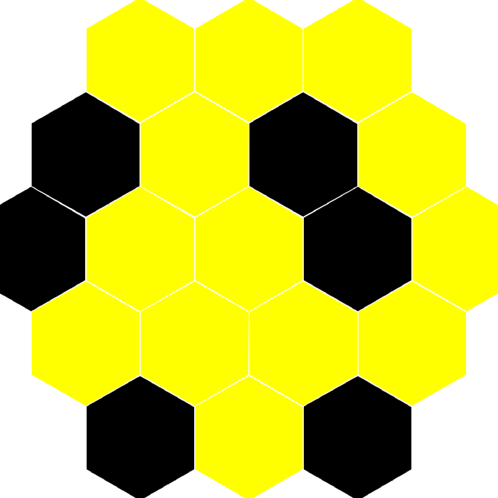

From logic rules to programming constructs
What logical connectives do you know?
| \top | \bot | \wedge | \vee | \rightarrow |
|---|---|---|---|---|
| a \wedge b | a \vee b | a \rightarrow b | ||
| truth | falsehood | conjunction | disjunction | implication |
| “trivial” | “impossible” | a and b | a or b | a gives b |
| shouldn’t get | got both | got at least one | given a, we get b |
How can we define them? Think in terms of derivation trees:
\frac{ \frac{\frac{\,}{\text{a premise}} \; \frac{\,}{\text{another premise}}}{\text{some fact}} \; \frac{\frac{\,}{\text{this we have by default}}}{\text{another fact}}} {\text{final conclusion}}
We define connectives by providing rules for using them. For example, a rule \frac{a \; b}{c} matches parts of the tree that have two premises, represented by variables a and b, and have any conclusion, represented by variable c.
Design principle: Try to use only the connective you define in its definition.
Introduction rules say how to produce a connective.
Elimination rules say how to use it.
Text in parentheses is comments. Letters are variables that can stand for anything.
| Connective | Introduction Rules | Elimination Rules |
|---|---|---|
| \top | \frac{}{\top} | doesn’t have |
| \bot | doesn’t have | \frac{\bot}{a} (i.e., anything) |
| \wedge | \frac{a \quad b}{a \wedge b} | \frac{a \wedge b}{a} (take first) \frac{a \wedge b}{b} (take second) |
| \vee | \frac{a}{a \vee b} (put first) \frac{b}{a \vee b} (put second) | \frac{a \vee b \quad \genfrac{}{}{0pt}{}{[a]^x}{\vdots \; c} \quad \genfrac{}{}{0pt}{}{[b]^y}{\vdots \; c}}{c} using x, y |
| \rightarrow | \frac{\genfrac{}{}{0pt}{}{[a]^x}{\vdots \; b}}{a \rightarrow b} using x | \frac{a \rightarrow b \quad a}{b} |
The notation \genfrac{}{}{0pt}{}{[a]^x}{\vdots \; b} (sometimes written as a tree) matches any subtree that derives b and can use a as an assumption (marked with label x), even though a might not otherwise be warranted.
For example, we can derive “sunny \rightarrow happy” by showing that assuming it’s sunny, we can derive happiness:
\frac{\frac{\frac{\frac{\frac{\,}{\text{sunny}}^x}{\text{go outdoor}}}{\text{playing}}}{\text{happy}}}{\text{sunny} \rightarrow \text{happy}} \text{ using } x
Such assumptions can only be used in the matched subtree! But they can be used several times. For example, if someone’s mood is more difficult to influence:
\frac{\frac{ \frac{\frac{\frac{\,}{\text{sunny}}^x}{\text{go outdoor}}}{\text{playing}} \quad \frac{\frac{\,}{\text{sunny}}^x \quad \frac{\frac{\,}{\text{sunny}}^x}{\text{go outdoor}}}{\text{nice view}} }{\text{happy}}}{\text{sunny} \rightarrow \text{happy}} \text{ using } x
The elimination rule for disjunction represents reasoning by cases.
How can we use the fact that it is sunny \vee cloudy (but not rainy)?
\frac{ \frac{\,}{\text{sunny} \vee \text{cloudy}}^{\text{forecast}} \quad \frac{\frac{\,}{\text{sunny}}^x}{\text{no-umbrella}} \quad \frac{\frac{\,}{\text{cloudy}}^y}{\text{no-umbrella}} }{\text{no-umbrella}} \text{ using } x, y
We know that it will be sunny or cloudy (by watching the weather forecast). If it will be sunny, we won’t need an umbrella. If it will be cloudy, we won’t need an umbrella. Therefore, we won’t need an umbrella.
We need one more kind of rule to do serious math: reasoning by induction (somewhat similar to reasoning by cases). Example rule for induction on natural numbers:
\frac{p(0) \quad \genfrac{}{}{0pt}{}{[p(x)]^x}{\vdots \; p(x+1)}}{p(n)} \text{ by induction, using } x
We get property p for any natural number n, provided we can: 1. Establish p(0) (the base case) 2. Show that assuming p(x) holds, we can derive p(x+1) (the inductive step)
Here x is a unique variable—we cannot substitute a particular number for it because we write “using x” on the side.
There is a deep correspondence between logic and programming, known as the Curry-Howard correspondence (or “propositions as types”). The following table shows how logical connectives correspond to programming constructs:
| Logic | Type | Expression |
|---|---|---|
| \top | unit |
() |
| \bot | 'a |
raise |
| \wedge | * |
(,) |
| \vee | | |
match |
| \rightarrow | -> |
fun |
| induction | — | rec |
Typing rules for OCaml constructs:
Unit (truth): \frac{}{\texttt{()} : \texttt{unit}}
Exception (falsehood): \frac{\text{oops!}}{\texttt{raise exn} : c} — can produce any type
Pair (conjunction):
Variant (disjunction):
Function (implication):
Recursion (induction): \frac{\genfrac{}{}{0pt}{}{[x : a]}{e : a}}{\texttt{rec}~x = e : a}
Writing out expressions and types repetitively is tedious: we need definitions.
Type definitions are written: type ty =
some type.
Writing A(s) : A of a | B of b in the table was
cheating. Usually we have to define the type and then use it. For
example, using int for a
and string for b:
type int_string_choice = A of int | B of stringThis allows us to write
A(s) : int_string_choice.
Without the type definition, it is difficult to know what other variants there are when one infers (i.e., “guesses”, computes) the type!
In OCaml we can write `A(s) : [`A of a | `B of b].
With “`” variants (polymorphic variants), OCaml does guess
what other variants there are. These types are interesting, but we will
not focus on them in this book.
Tuple elements don’t need labels because we always know at which position a tuple element stands. But having labels makes code more clear, so we can define a record type:
type int_string_record = {a: int; b: string}and create its values: {a = 7; b = "Mary"}.
We access the fields of records using the dot notation:
{a=7; b="Mary"}.b = "Mary".
The recursive expression rec x = e in the table was
cheating: rec (usually called fix in theory)
cannot appear alone in OCaml! It must be part of a definition.
Definitions for expressions are introduced by rules a bit more complex:
\frac{e_1 : a \quad \frac{[x : a]}{e_2 : b}}{\texttt{let } x = e_1 \texttt{ in } e_2 : b}
(Note that this rule is the same as introducing and eliminating \rightarrow.)
For recursive definitions:
\frac{\frac{[x : a]}{e_1 : a} \quad \frac{[x : a]}{e_2 : b}}{\texttt{let rec } x = e_1 \texttt{ in } e_2 : b}
We will cover what is missing in the above rules when we discuss polymorphism.
Type definitions we have seen above are global: they need to be at the top-level (not nested in expressions), and they extend from the point they occur till the end of the source file or interactive session.
let-in definitions for
expressions: let x = e1 in e2 are local—x is only visible in e_2. But let
definitions without in are global: placing
let x = e1 at the top-level makes x visible from after e_1 till the end of the source file or
interactive session.
In the interactive session (toplevel/REPL), we mark the end of a
top-level “sentence” with ;;—this is unnecessary in source
files.
Operators like +, *, <,
= are names of functions. Just like other names, you can
use operator names for your own functions:
let (+:) a b = String.concat "" [a; b] (* Special way of defining *)"Alpha" +: "Beta" (* but normal way of using operators *)Operators in OCaml are not overloaded. This means
that every type needs its own set of operators: - +,
*, / work for integers - +.,
*., /. work for floating point numbers
Exception: Comparisons <,
=, etc. work for all values other than functions.
Exercises from Think OCaml: How to Think Like a Computer Scientist by Nicholas Monje and Allen Downey.
Assume that we execute the following assignment statements:
let width = 17
let height = 12.0
let delimiter = '.'For each of the following expressions, write the value of the expression and the type (of the value of the expression), or the resulting type error.
width/2width/.2.0height/31 + 2 * 5delimiter * 5Practice using the OCaml interpreter as a calculator:
You’ve probably heard of the Fibonacci numbers before, but in case you haven’t, they’re defined by the following recursive relationship: \begin{cases} f(0) = 0 \\ f(1) = 1 \\ f(n+1) = f(n) + f(n-1) & \text{for } n = 2, 3, \ldots \end{cases} Write a recursive function to calculate these numbers.
A palindrome is a word that is spelled the same backward and forward, like “noon” and “redivider”. Recursively, a word is a palindrome if the first and last letters are the same and the middle is a palindrome.
The following are functions that take a string argument and return the first, last, and middle letters:
let first_char word = word.[0]
let last_char word =
let len = String.length word - 1 in
word.[len]
let middle word =
let len = String.length word - 2 in
String.sub word 1 lenmiddle with a string with two letters?
One letter? What about the empty string ""?is_palindrome that takes a
string argument and returns true if it is a palindrome and
false otherwise.The greatest common divisor (GCD) of a and b is the largest number that divides both of them with no remainder.
One way to find the GCD of two numbers is Euclid’s algorithm, which is based on the observation that if r is the remainder when a is divided by b, then \gcd(a, b) = \gcd(b, r). As a base case, we can consider \gcd(a, 0) = a.
Write a function called gcd that takes parameters
a and b and returns their greatest common
divisor.
If you need help, see http://en.wikipedia.org/wiki/Euclidean_algorithm.
Algebraic Data Types and some curious analogies
For a refresher, let us apply the type inference rules introduced in
Chapter 1 to some simple examples. We will start with the identity
function fun x -> x. In the derivations below, [?] means “type unknown yet.”
We begin with an incomplete derivation:
\frac{[?]}{\texttt{fun x -> x} : [?]}
Using the \rightarrow introduction
rule, we need to derive the body x assuming x
has some type a:
\frac{\frac{\,}{\texttt{x} : a}^x}{\texttt{fun x -> x} : [?] \rightarrow [?]}
The premise \frac{\,}{\texttt{x} :
a}^x matches the pattern for hypothetical derivations since e = \texttt{x}. Since the body x
has type a (from our assumption), and
the parameter x also has type a, we conclude:
\frac{\frac{\,}{\texttt{x} : a}^x}{\texttt{fun x -> x} : a \rightarrow a}
Because a is arbitrary (we made no
assumptions constraining it), OCaml introduces a type variable
'a to represent it:
# fun x -> x;;
- : 'a -> 'a = <fun>Let us try fun x -> x+1, which is the same as
fun x -> ((+) x) 1 (try it in OCaml!). We will use the
notation [?\alpha] to mean “type
unknown yet, but the same as in other places marked [?\alpha].”
Starting the derivation and applying \rightarrow introduction:
\frac{\frac{[?]}{\texttt{((+) x) 1} : [?\alpha]}}{\texttt{fun x -> ((+) x) 1} : [?] \rightarrow [?\alpha]}
Applying \rightarrow elimination
(function application) to ((+) x) 1:
\frac{\frac{\frac{[?]}{\texttt{(+) x} : [?\beta] \rightarrow [?\alpha]} \quad \frac{[?]}{\texttt{1} : [?\beta]}}{\texttt{((+) x) 1} : [?\alpha]}}{\texttt{fun x -> ((+) x) 1} : [?] \rightarrow [?\alpha]}
We know that 1 : int, so [?\beta] = \texttt{int}:
\frac{\frac{\frac{[?]}{\texttt{(+) x} : \texttt{int} \rightarrow [?\alpha]} \quad \frac{\,}{\texttt{1} : \texttt{int}}^{\text{(constant)}}}{\texttt{((+) x) 1} : [?\alpha]}}{\texttt{fun x -> ((+) x) 1} : [?] \rightarrow [?\alpha]}
Applying function application again to (+) x:
\frac{\frac{\frac{\frac{[?]}{\texttt{(+)} : [?\gamma] \rightarrow \texttt{int} \rightarrow [?\alpha]} \quad \frac{[?]}{\texttt{x} : [?\gamma]}}{\texttt{(+) x} : \texttt{int} \rightarrow [?\alpha]} \quad \frac{\,}{\texttt{1} : \texttt{int}}^{\text{(constant)}}}{\texttt{((+) x) 1} : [?\alpha]}}{\texttt{fun x -> ((+) x) 1} : [?\gamma] \rightarrow [?\alpha]}
Since (+) : int -> int -> int, we have [?\gamma] = \texttt{int} and [?\alpha] = \texttt{int}:
\frac{\frac{\frac{\frac{\,}{\texttt{(+)} : \texttt{int} \rightarrow \texttt{int} \rightarrow \texttt{int}}^{\text{(constant)}} \quad \frac{\,}{\texttt{x} : \texttt{int}}^x}{\texttt{(+) x} : \texttt{int} \rightarrow \texttt{int}} \quad \frac{\,}{\texttt{1} : \texttt{int}}^{\text{(constant)}}}{\texttt{((+) x) 1} : \texttt{int}}}{\texttt{fun x -> ((+) x) 1} : \texttt{int} \rightarrow \texttt{int}}
When there are several arrows “on the same depth” in a function type,
it means that the function returns a function. For example,
(+) : int -> int -> int is just a shorthand for
(+) : int -> (int -> int). This is very different
from:
\texttt{fun f -> (f 1) + 1} : (\texttt{int} \rightarrow \texttt{int}) \rightarrow \texttt{int}
In the first case, (+) is a function that takes an
integer and returns a function from integers to integers. In the second
case, we have a function that takes a function as an argument.
For addition, instead of (fun x -> x+1) we can write
((+) 1). What expanded form does ((+) 1)
correspond to exactly (computationally)? It corresponds to
fun y -> 1 + y.
We will become more familiar with functions returning functions when we study the lambda calculus in a later chapter.
In Chapter 1, we learned about the unit type and variant
types like:
type int_string_choice = A of int | B of stringWe also covered tuple types, record types, and type definitions. Let us now explore these concepts more deeply.
Variants do not have to carry arguments. Instead of writing
A of unit, we can simply use A. This is more
convenient and idiomatic:
type color = Red | Green | BlueA subtle point about OCaml: In OCaml, variants take
multiple arguments rather than taking tuples as arguments. This means
A of int * string is different from
A of (int * string). The first takes two separate
arguments, while the second takes a single tuple argument. This
distinction is usually not important unless you encounter situations
where it matters.
Type definitions can be recursive! This allows us to define data structures of arbitrary size:
type int_list = Empty | Cons of int * int_listLet us see what values inhabit int_list: -
Empty represents the empty list -
Cons (5, Empty) is a list containing just 5 -
Cons (5, Cons (7, Cons (13, Empty))) is a list containing
5, 7, and 13
The built-in type bool can be viewed as if it were
defined as type bool = true | false. Similarly,
int can be thought of as a very large variant:
type int = 0 | -1 | 1 | -2 | 2 | ...
Type definitions can be parametric with respect to the types of their components. This allows us to define generic data structures that work with any element type. For example, a list of elements of arbitrary type:
type 'elem list = Empty | Cons of 'elem * 'elem listSeveral conventions and syntax rules apply to parametric types:
Type variables must start with ', but since OCaml
will not remember the names we give, it is customary to use the names
OCaml uses: 'a, 'b, 'c,
'd, etc.
The OCaml syntax places the type parameter before the type name, mimicking English word order. A silly example:
type 'white_color dog = Dog of 'white_colorWith multiple parameters, OCaml uses parentheses:
type ('a, 'b) choice = Left of 'a | Right of 'bCompare this to F# syntax:
type choice<'a,'b> = Left of 'a | Right of 'b
And Haskell syntax:
data Choice a b = Left a | Right b
Names of variants, called constructors, must start with a capital letter. If we wanted to define our own booleans, we would write:
type my_bool = True | FalseOnly constructors and module names can start with capital letters in
OCaml. Modules are organizational units (like “shelves”)
containing related values. For example, the List module
provides operations on lists, including List.map and
List.filter.
We can use dot notation to access record fields:
record.field. For example, if we have
let person = {name="Alice"; age=30}, we can write
person.name to get "Alice".
Several syntactic shortcuts make function definitions more concise:
fun x y -> e stands for
fun x -> fun y -> e. Note that
fun x -> fun y -> e parses as
fun x -> (fun y -> e).
function A x -> e1 | B y -> e2 stands for
fun p -> match p with A x -> e1 | B y -> e2. The
general form is: function PATTERN-MATCHING stands for
fun v -> match v with PATTERN-MATCHING.
let f ARGS = e is a shorthand for
let f = fun ARGS -> e.
Recall that we introduced fst and snd as
means to access elements of a pair. But what about larger tuples? The
fundamental way to access any tuple uses the match
construct. In fact, fst and snd can easily be
defined using pattern matching:
let fst = fun p -> match p with (a, b) -> a
let snd = fun p -> match p with (a, b) -> bPattern matching also works with records:
type person = {name: string; surname: string; age: int}
let greet_person () =
match {name="Walker"; surname="Johnnie"; age=207}
with {name=n; surname=sn; age=a} -> "Hi " ^ sn ^ "!"The left-hand sides of -> in match
expressions are called patterns. Patterns describe the
structure of values we want to match against.
Patterns can be nested, allowing us to match complex structures:
match Some (5, 7) with
| None -> "sum: nothing"
| Some (x, y) -> "sum: " ^ string_of_int (x+y)A pattern can simply bind the entire value without destructuring.
Writing match f x with v -> ... is the same as
let v = f x in ....
When we do not need a value in a pattern, it is good practice to use
the underscore _, which is a wildcard (not a variable):
let fst (a, _) = a
let snd (_, b) = bA variable can only appear once in a pattern. This property is called
linearity. However, we can add conditions to patterns using
when, so linearity is not a limitation:
let describe_point p =
match p with
| (x, y) when x = y -> "diag"
| _ -> "off-diag"Here is a more elaborate example:
let compare a b = match a, b with
| (x, y) when x < y -> -1
| (x, y) when x = y -> 0
| _ -> 1We can skip unused fields of a record in a pattern. Only the fields we care about need to be mentioned.
We can compress patterns by using | inside a single
pattern to match multiple alternatives:
type month =
| Jan | Feb | Mar | Apr | May | Jun
| Jul | Aug | Sep | Oct | Nov | Dec
type weekday = Mon | Tue | Wed | Thu | Fri | Sat | Sun
type date =
{year: int; month: month; day: int; weekday: weekday}
let day =
{year = 2012; month = Feb; day = 14; weekday = Wed};;
match day with
| {weekday = Sat | Sun} -> "Weekend!"
| _ -> "Work day"asWe use (pattern as v) to name a nested pattern, binding
the matched value to v:
match day with
| {weekday = (Mon | Tue | Wed | Thu | Fri as wday)}
when not (day.month = Dec && day.day = 24) ->
Some (work (get_plan wday))
| _ -> NoneThis example shows the as keyword binding the matched
weekday to wday for use in the expression on the right side
of the arrow.
Let us explore a curious analogy between algebraic data types and polynomials. We translate data types to mathematical expressions by:
| (variant choice) with +* (tuple product) with \times; as \times)We also need translations for some special types:
The void type (a type with no constructors, hence no values):
type void(Yes, this is its complete definition, with no
= something part.) Translate it as 0.
The unit type translates as 1. Since variants without arguments behave
like variants of unit, translate them as 1 as well.
The bool type translates as 2.
Types like int, string,
float, and type parameters translate as variables.
Defined types translate according to their definitions (substituting variables as necessary).
Give a name to the type being defined (representing a function of the introduced variables). Now interpret the result as an ordinary numeric polynomial! (Or a “rational function” if recursively defined.)
Let us have some fun with this translation.
type date = {year: int; month: int; day: int}Translating to a polynomial (using x
for int):
D = x \times x \times x = x^3
The built-in option type is defined as:
type 'a option = None | Some of 'aTranslating:
O = 1 + x
type 'a my_list = Empty | Cons of 'a * 'a my_listTranslating (where L represents the list type):
L = 1 + x \cdot L
type btree = Tip | Node of int * btree * btreeTranslating:
T = 1 + x \cdot T \cdot T = 1 + x \cdot T^2
When translations of two types are equal according to the laws of high-school algebra, the types are isomorphic. This means there exist bijective (one-to-one and onto) functions between them.
Let us manipulate the binary tree polynomial:
\begin{aligned} T &= 1 + x \cdot T^2 \\ &= 1 + x \cdot T + x^2 \cdot T^3 \\ &= 1 + x + x^2 \cdot T^2 + x^2 \cdot T^3 \\ &= 1 + x + x^2 \cdot T^2 \cdot (1 + T) \\ &= 1 + x \cdot (1 + x \cdot T^2 \cdot (1 + T)) \end{aligned}
Now let us translate the resulting expression back to a type:
type repr =
(int * (int * btree * btree * btree option) option) optionThe challenge is to find isomorphism functions with signatures:
val iso1 : btree -> repr
val iso2 : repr -> btreeThese functions should satisfy: for all trees t,
iso2 (iso1 t) = t, and for all representations
r, iso1 (iso2 r) = r.
Here is a first (failed) attempt:
# let iso1 (t : btree) : repr =
match t with
| Tip -> None
| Node (x, Tip, Tip) -> Some (x, None)
| Node (x, Node (y, t1, t2), Tip) ->
Some (x, Some (y, t1, t2, None))
| Node (x, Node (y, t1, t2), t3) ->
Some (x, Some (y, t1, t2, Some t3));;
Warning 8: this pattern-matching is not exhaustive.
Here is an example of a value that is not matched:
Node (_, Tip, Node (_, _, _))We forgot about one case! It seems difficult to guess the solution directly.
Let us divide the task into smaller steps corresponding to intermediate points in the polynomial transformation:
type ('a, 'b) choice = Left of 'a | Right of 'b
type interm1 =
((int * btree, int * int * btree * btree * btree) choice)
option
type interm2 =
((int, int * int * btree * btree * btree option) choice)
optionNow we can define each step:
let step1r (t : btree) : interm1 =
match t with
| Tip -> None
| Node (x, t1, Tip) -> Some (Left (x, t1))
| Node (x, t1, Node (y, t2, t3)) ->
Some (Right (x, y, t1, t2, t3))
let step2r (r : interm1) : interm2 =
match r with
| None -> None
| Some (Left (x, Tip)) -> Some (Left x)
| Some (Left (x, Node (y, t1, t2))) ->
Some (Right (x, y, t1, t2, None))
| Some (Right (x, y, t1, t2, t3)) ->
Some (Right (x, y, t1, t2, Some t3))
let step3r (r : interm2) : repr =
match r with
| None -> None
| Some (Left x) -> Some (x, None)
| Some (Right (x, y, t1, t2, t3opt)) ->
Some (x, Some (y, t1, t2, t3opt))
let iso1 (t : btree) : repr =
step3r (step2r (step1r t))Defining step1l, step2l,
step3l, and iso2 is now straightforward—each
step is the inverse of its corresponding forward step.
Design for validity: Try to define data structures so that only meaningful information can be represented—as long as it does not overcomplicate the data structures. Avoid catch-all clauses when defining functions. The compiler will then tell you if you have forgotten about a case.
Divide and conquer: Break solutions into small steps so that each step can be easily understood and verified.
The title might seem strange—we will differentiate the translated polynomials, not the types themselves. But what sense does this make?
It turns out that taking the partial derivative of a polynomial (translated from a data type), when translated back, gives a type representing how to change one occurrence of a value corresponding to the variable with respect to which we differentiated. In other words, the derivative represents a “context” or “hole” in the data structure.
type date = {year: int; month: int; day: int}The translation:
\begin{aligned} D &= x \cdot x \cdot x = x^3 \\ \frac{\partial D}{\partial x} &= 3x^2 = x \cdot x + x \cdot x + x \cdot x \end{aligned}
We could have left it as 3 \cdot x \cdot x, but expanding shows the structure more clearly. Translating back to a type:
type date_deriv =
Year of int * int | Month of int * int | Day of int * intEach variant represents a “hole” at a different position:
Year means the year field is missing (and we have the month
and day), and so on.
Now we can define functions to introduce and eliminate this derivative type:
let date_deriv {year=y; month=m; day=d} =
[Year (m, d); Month (y, d); Day (y, m)]
let date_integr n = function
| Year (m, d) -> {year=n; month=m; day=d}
| Month (y, d) -> {year=y; month=n; day=d}
| Day (y, m) -> {year=y; month=m; day=n}
;;
List.map (date_integr 7)
(date_deriv {year=2012; month=2; day=14})The date_deriv function produces all contexts (one for
each field), and date_integr fills in a hole with a new
value.
Let us tackle the more challenging case of binary trees:
type btree = Tip | Node of int * btree * btreeThe translation and differentiation:
\begin{aligned} T &= 1 + x \cdot T^2 \\ \frac{\partial T}{\partial x} &= 0 + T^2 + 2 \cdot x \cdot T \cdot \frac{\partial T}{\partial x} = T \cdot T + 2 \cdot x \cdot T \cdot \frac{\partial T}{\partial x} \end{aligned}
The derivative is recursive! This makes sense: a context in a tree is either at the current node (T \cdot T, the two subtrees) or somewhere below (2 \cdot x \cdot T \cdot \frac{\partial T}{\partial x}, choosing left or right, with the node value, the other subtree, and a deeper context).
Instead of translating 2 as
bool, we introduce a more descriptive type:
type btree_dir = LeftBranch | RightBranch
type btree_deriv =
| Here of btree * btree
| Below of btree_dir * int * btree * btree_deriv(You might someday hear about zippers—they are “inverted” relative to our type, with the hole coming first.)
The integration function fills the hole with a value:
let rec btree_integr n = function
| Here (ltree, rtree) -> Node (n, ltree, rtree)
| Below (LeftBranch, m, rtree, deriv) ->
Node (m, btree_integr n deriv, rtree)
| Below (RightBranch, m, ltree, deriv) ->
Node (m, ltree, btree_integr n deriv)Due to Yaron Minsky.
Consider a datatype to store internet connection information. The
time when_initiated marks the start of connecting and is
not needed after the connection is established (it is only used to
decide whether to give up trying to connect). The ping information is
available for established connections but not straight away.
type connectionstate = Connecting | Connected | Disconnected
type connectioninfo = {
state : connectionstate;
server : Inetaddr.t;
lastpingtime : Time.t option;
lastpingid : int option;
sessionid : string option;
wheninitiated : Time.t option;
whendisconnected : Time.t option;
}(The types Time.t and Inetaddr.t come from
the Core library. You can replace them with float
and Unix.inet_addr. Load the Unix library in the
interactive toplevel with #load "unix.cma";;.)
Rewrite the type definitions so that the datatype will contain only reasonable combinations of information.
In OCaml, functions can have labeled arguments and optional arguments (parameters with default values that can be omitted). Labels can differ from the names of argument values:
let f ~meaningfulname:n = n + 1
let _ = f ~meaningfulname:5 (* We do not need the result so we ignore it. *)When the label and value names are the same, the syntax is shorter:
let g ~pos ~len =
StringLabels.sub "0123456789abcdefghijklmnopqrstuvwxyz" ~pos ~len
let () = (* A nicer way to mark computations that return unit. *)
let pos = Random.int 26 in
let len = Random.int 10 in
print_string (g ~pos ~len)When some function arguments are optional, the function must take non-optional arguments after the last optional argument. Optional parameters with default values:
let h ?(len=1) pos = g ~pos ~len
let () = print_string (h 10)Optional arguments are implemented as parameters of an option type. This allows checking whether the argument was provided:
let foo ?bar n =
match bar with
| None -> "Argument = " ^ string_of_int n
| Some m -> "Sum = " ^ string_of_int (m + n)We can use it in various ways:
let _ = foo 5
let _ = foo ~bar:5 7We can also provide the option value directly:
let test_foo () =
let bar = if Random.int 10 < 5 then None else Some 7 in
foo ?bar 7Observe the types that functions with labeled and optional arguments have. Come up with coding style guidelines for when to use labeled arguments.
Write a rectangle-drawing procedure that takes three optional
arguments: left-upper corner, right-lower corner, and a width-height
pair. It should draw a correct rectangle whenever two arguments are
given, and raise an exception otherwise. Load the graphics library with
#load "graphics.cma";;. Use invalid_arg,
Graphics.open_graph, and
Graphics.draw_rect.
Write a function that takes an optional argument of arbitrary type and a function argument, and passes the optional argument to the function without inspecting it.
From a past exam.
let double f y = f (f y) in fun g x -> double (g x)let rec tails l = match l with [] -> [] | x::xs -> xs::tails xs in fun l -> List.combine l (tails l)(int -> int) -> bool'a option -> 'a listWe have seen that algebraic data types can be related to analytic functions (the subset definable from polynomials via recursion)—by literally interpreting sum types (variant types) as sums and product types (tuple and record types) as products. We can extend this interpretation to function types by interpreting a \rightarrow b as b^a (i.e., b to the power of a). Note that the b^a notation is actually used to denote functions in set theory.
Translate a^{b + cd} and a^b \cdot (a^c)^d into OCaml types, using any
distinct types for a, b, c, d, and
using type ('a,'b) choice = Left of 'a | Right of 'b for
+. Write the bijection function in both
directions.
Come up with a type 't exp that shares with the
exponential function the following property: \frac{\partial \exp(t)}{\partial t} =
\exp(t), where we translate a derivative of a type as a context
(i.e., the type with a “hole”), as in this chapter. Explain why your
answer is correct. Hint: in computer science, our logarithms
are mostly base 2.
Further reading: Algebraic Type Systems - Combinatorial Species
Write a function btree_deriv_at that takes a predicate
over integers (i.e., a function f: int -> bool) and a
btree, and builds a btree_deriv whose “hole”
is in the first position for which the predicate returns true. It should
return a btree_deriv option, with None if the
predicate does not hold for any node.
Reduction semantics and operational reasoning
References:
The usual way function composition is defined in mathematics is “backward”—the notation follows the convention of mathematical function application:
(f \circ g)(x) = f(g(x))
This means that when we write f \circ g, we first apply g and then apply f to the result. Here is how this is expressed in different functional programming languages:
| Language | Definition |
|---|---|
| Math | (f \circ g)(x) = f(g(x)) |
| OCaml | let (-|) f g x = f (g x) |
| F# | let (<<) f g x = f (g x) |
| Haskell | (.) f g = \x -> f (g x) |
This backward composition looks like function application but needs
fewer parentheses. Recall the functions iso1 and
iso2 from the previous chapter on type isomorphisms. Using
backward composition, we could write:
let iso2 = step1l -| step2l -| step3lA more natural definition of function composition is “forward” composition, which follows the order in which computation actually proceeds:
| Language | Definition |
|---|---|
| OCaml | let (\|-) f g x = g (f x) |
| F# | let (>>) f g x = g (f x) |
With forward composition, data flows from left to right, matching how we typically read code:
let iso1 = step1r |- step2r |- step3rBoth composition examples above use partial
application. Recall from the previous chapter that
((+) 1) is a function that adds 1 to its argument. Partial
application occurs when we do not pass all the arguments a function
needs; the result is a function that requires the remaining
arguments.
In the composition step1r |- step2r |- step3r, each
stepNr function is partially applied. The composition
operator (|-) takes two functions f and
g and returns a new function that first applies
f, then applies g to the result.
Now we define iterated function composition:
f^n(x) := \underbrace{(f \circ \cdots \circ f)}_{n \text{ times}}(x)
In OCaml, we first define the backward composition operator, then use
it in power:
let (-|) f g x = f (g x)
let rec power f n =
if n <= 0 then (fun x -> x) else f -| power f (n-1)When n <= 0, we return the identity function.
Otherwise, we compose f with power f (n-1),
which gives us one more application of f.
Using power, we can define a numerical approximation of
the derivative:
let derivative dx f = fun x -> (f(x +. dx) -. f(x)) /. dxThis definition emphasizes that derivative dx f is
itself a function of x. We can write it more concisely
as:
let derivative dx f x = (f(x +. dx) -. f(x)) /. dxNote that OCaml uses different operators for floating-point
arithmetic. We have (+): int -> int -> int for
integers, so we cannot use + with floating-point numbers.
Instead, operators followed by a dot work on float values:
+., -., *., /..
With power and derivative, we can easily
compute higher-order derivatives:
let pi = 4.0 *. atan 1.0
let sin''' = (power (derivative 1e-5) 3) sin;;
sin''' piHere sin''' is the third derivative of sine. The result
should be approximately -\cos(\pi) = 1
(with some numerical error due to the finite difference
approximation).
To understand how OCaml programs compute their results, we need to formalize the evaluation process. This section presents reduction semantics, which describes computation as a series of rewriting steps.
Programs consist of expressions. Here is the grammar of expressions for a simplified version of OCaml:
\begin{array}{lcll} a & := & x & \text{variables} \\ & | & \texttt{fun } x \texttt{ -> } a & \text{(defined) functions} \\ & | & a \; a & \text{applications} \\ & | & C^0 & \text{value constructors of arity } 0 \\ & | & C^n(a, \ldots, a) & \text{value constructors of arity } n \\ & | & f^n & \text{built-in values (primitives) of arity } n \\ & | & \texttt{let } x = a \texttt{ in } a & \text{name bindings (local definitions)} \\ & | & \texttt{match } a \texttt{ with} & \\ & & \quad p \texttt{ -> } a \texttt{ | } \cdots \texttt{ | } p \texttt{ -> } a & \text{pattern matching} \\[1em] p & := & x & \text{pattern variables} \\ & | & (p, \ldots, p) & \text{tuple patterns} \\ & | & C^0 & \text{variant patterns of arity } 0 \\ & | & C^n(p, \ldots, p) & \text{variant patterns of arity } n \end{array}
Arity means how many arguments something requires (and for tuples, the length of the tuple).
fix PrimitiveTo simplify our presentation of recursion, we use a primitive
fix to define a limited form of let rec:
\texttt{let rec } f \; x = e_1 \texttt{ in } e_2 \equiv \texttt{let } f = \texttt{fix (fun } f \; x \texttt{ -> } e_1 \texttt{) in } e_2
The fix primitive captures the essence of recursion: it
takes a function that expects to receive itself as an argument and
produces a fixed point—a function that, when called, behaves as if it
had access to itself.
Expressions evaluate (i.e., compute) to values. Values are expressions that cannot be reduced further:
\begin{array}{lcll} v & := & \texttt{fun } x \texttt{ -> } a & \text{(defined) functions} \\ & | & C^n(v_1, \ldots, v_n) & \text{constructed values} \\ & | & f^n \; v_1 \; \cdots \; v_k & k < n \text{ (partially applied primitives)} \end{array}
Note that functions are values: fun x -> x + 1 is
already fully evaluated. Partially applied primitives like
(+) 3 are also values—they are waiting for more
arguments.
To substitute a value v for a variable x in expression a, we write a[x := v]. This notation means that every occurrence of x in a is replaced by v.
In the actual implementation, the value v is not duplicated in memory. Instead, OCaml uses references or closures to share the value efficiently.
Reduction (i.e., computation) proceeds by finding reducible expressions called redexes and applying reduction rules. Here are the fundamental redexes:
Function application (beta reduction): (\texttt{fun } x \texttt{ -> } a) \; v \rightsquigarrow a[x := v]
When we apply a function to a value, we substitute the value for the parameter in the function body.
Let binding: \texttt{let } x = v \texttt{ in } a \rightsquigarrow a[x := v]
A let binding with a value substitutes that value into the body.
Primitive application: f^n \; v_1 \; \cdots \; v_n \rightsquigarrow f(v_1, \ldots, v_n)
When a primitive receives all its arguments, it computes the result. Here f(v_1, \ldots, v_n) denotes the actual result of the primitive operation.
Pattern matching with a variable pattern: \texttt{match } v \texttt{ with } x \texttt{ -> } a \texttt{ | } \cdots \rightsquigarrow a[x := v]
Pattern matching with a non-matching constructor: \frac{C_1 \neq C_2}{\texttt{match } C_1^n(v_1, \ldots, v_n) \texttt{ with } C_2^k(p_1, \ldots, p_k) \texttt{ -> } a \texttt{ | } pm \rightsquigarrow \texttt{match } C_1^n(v_1, \ldots, v_n) \texttt{ with } pm}
If the constructor does not match, we try the next pattern.
Pattern matching with a matching constructor: \texttt{match } C_1^n(v_1, \ldots, v_n) \texttt{ with } C_1^n(x_1, \ldots, x_n) \texttt{ -> } a \texttt{ | } \cdots \rightsquigarrow a[x_1 := v_1; \ldots; x_n := v_n]
If the constructor matches, we substitute all the bound values.
If n = 0, then C_1^n(v_1, \ldots, v_n) stands for simply C_1^0, a constructor with no arguments. We omit the more complex cases of nested pattern matching.
In these rules, the metavariables have specific meanings: - x matches any expression or pattern variable - a, a_1, \ldots, a_n match any expression - v, v_1, \ldots, v_n match any value
To apply a rule, find substitutions for these metavariables that make the left-hand side match your expression. The right-hand side (with the same substitutions) is the reduced expression.
The rules above only apply when the arguments are already values. We also need rules that allow evaluation of subexpressions. If a_i \rightsquigarrow a_i', then:
\begin{array}{lcl} a_1 \; a_2 & \rightsquigarrow & a_1' \; a_2 \\ a_1 \; a_2 & \rightsquigarrow & a_1 \; a_2' \\ C^n(a_1, \ldots, a_i, \ldots, a_n) & \rightsquigarrow & C^n(a_1, \ldots, a_i', \ldots, a_n) \\ \texttt{let } x = a_1 \texttt{ in } a_2 & \rightsquigarrow & \texttt{let } x = a_1' \texttt{ in } a_2 \\ \texttt{match } a_1 \texttt{ with } pm & \rightsquigarrow & \texttt{match } a_1' \texttt{ with } pm \end{array}
These rules say that: - In an application, either the function or the argument can be evaluated (in arbitrary order) - In a constructor, any argument can be evaluated - In a let binding, the bound expression is evaluated before the body - In a match, the scrutinee is evaluated before matching
fix RuleFinally, the rule for the fix primitive, which enables
recursion:
\texttt{fix}^2 \; v_1 \; v_2 \rightsquigarrow v_1 \; (\texttt{fix}^2 \; v_1) \; v_2
Because fix is a binary primitive (arity 2), the
expression (\texttt{fix}^2 \; v_1) is
already a value (a partially applied primitive). This means it will not
be further evaluated until it is applied inside v_1. This delayed evaluation is what makes
recursion work without infinite loops.
Exercise: Compute some simple programs by hand using these rules. For example, trace the evaluation of:
let double x = x + x in double 3Let us see the reduction rules in action with a more complex example.
Consider the symbolic expression evaluator from
Lec3.ml:
type expression =
| Const of float
| Var of string
| Sum of expression * expression (* e1 + e2 *)
| Diff of expression * expression (* e1 - e2 *)
| Prod of expression * expression (* e1 * e2 *)
| Quot of expression * expression (* e1 / e2 *)
exception Unbound_variable of string
let rec eval env exp =
match exp with
| Const c -> c
| Var v ->
(try List.assoc v env with Not_found -> raise (Unbound_variable v))
| Sum(f, g) -> eval env f +. eval env g
| Diff(f, g) -> eval env f -. eval env g
| Prod(f, g) -> eval env f *. eval env g
| Quot(f, g) -> eval env f /. eval env gWe can also define symbolic differentiation:
let rec deriv exp dv =
match exp with
| Const c -> Const 0.0
| Var v -> if v = dv then Const 1.0 else Const 0.0
| Sum(f, g) -> Sum(deriv f dv, deriv g dv)
| Diff(f, g) -> Diff(deriv f dv, deriv g dv)
| Prod(f, g) -> Sum(Prod(f, deriv g dv), Prod(deriv f dv, g))
| Quot(f, g) -> Quot(Diff(Prod(deriv f dv, g), Prod(f, deriv g dv)),
Prod(g, g))For convenience, let us define some operators and variables:
let x = Var "x"
let y = Var "y"
let (+:) f g = Sum (f, g)
let (-:) f g = Diff (f, g)
let ( *: ) f g = Prod (f, g)
let (/:) f g = Quot (f, g)
let (!:) i = Const iNow consider evaluating the expression 3x + 2y + x^2 y
at x = 1, y = 2:
let example = !:3.0 *: x +: !:2.0 *: y +: x *: x *: y
let env = ["x", 1.0; "y", 2.0]When we trace the evaluation, we can see the recursive structure of the computation:
eval_1_2 <-- 3.00 * x + 2.00 * y + x * x * y
eval_1_2 <-- x * x * y
eval_1_2 <-- y
eval_1_2 --> 2.
eval_1_2 <-- x * x
eval_1_2 <-- x
eval_1_2 --> 1.
eval_1_2 <-- x
eval_1_2 --> 1.
eval_1_2 --> 1.
eval_1_2 --> 2.
eval_1_2 <-- 3.00 * x + 2.00 * y
eval_1_2 <-- 2.00 * y
eval_1_2 <-- y
eval_1_2 --> 2.
eval_1_2 <-- 2.00
eval_1_2 --> 2.
eval_1_2 --> 4.
eval_1_2 <-- 3.00 * x
eval_1_2 <-- x
eval_1_2 --> 1.
eval_1_2 <-- 3.00
eval_1_2 --> 3.
eval_1_2 --> 3.
eval_1_2 --> 7.
eval_1_2 --> 9.
- : float = 9.The indentation levels in this trace correspond to stack frames—the runtime structures that store the state of each function call. This brings us to an important optimization technique.
Computers normally evaluate programs by creating stack frames on the call stack for each function call. The trace above illustrates this: each level of indentation represents a new stack frame.
A tail call is a function call that is performed last when computing a function—there is nothing more to do after the call returns. For example, in:
let f x = g (x + 1)The call to g is a tail call because after
g returns, f immediately returns that
value.
In contrast, in:
let f x = 1 + g xThe call to g is not a tail call because after
g returns, we still need to add 1 to the result.
Functional language compilers (including OCaml’s) recognize tail calls and optimize them. Instead of creating a new stack frame, they reuse the current frame by performing a “jump” to the called function. This means tail calls use constant stack space.
A function is tail recursive if it calls itself (and any mutually recursive functions it depends on) only using tail calls.
Tail recursive functions often use special accumulator arguments that store intermediate computation results. In a non-tail-recursive function, these intermediate results would be values of subexpressions stored on the stack.
The key insight is that the accumulated result is computed in “reverse order”—while climbing up the recursion (making calls) rather than while descending (returning from calls).
Compare these two counting functions:
let rec count n =
if n <= 0 then 0 else 1 + (count (n-1))This is not tail recursive because after the recursive call returns, we still need to add 1.
let rec count_tcall acc n =
if n <= 0 then acc else count_tcall (acc+1) (n-1)This is tail recursive: the recursive call is the last thing the function does.
Let us see a more dramatic example:
let rec unfold n = if n <= 0 then [] else n :: unfold (n-1)This function builds a list counting down from n. It is
not tail recursive because after the recursive call, we must cons
n onto the result.
# unfold 100000;;
- : int list = [100000; 99999; 99998; 99997; ...]
# unfold 1000000;;
Stack overflow during evaluation (looping recursion?).With a million elements, we run out of stack space! Now consider the tail-recursive version:
let rec unfold_tcall acc n =
if n <= 0 then acc else unfold_tcall (n::acc) (n-1)The accumulator acc collects the list as we go. Note
that the list is built in reverse order:
# unfold_tcall [] 100000;;
- : int list = [1; 2; 3; 4; 5; 6; 7; 8; 9; 10; 11; 12; ...]
# unfold_tcall [] 1000000;;
- : int list = [1; 2; 3; 4; 5; 6; 7; 8; 9; 10; 11; 12; ...]The tail-recursive version handles a million elements with no problem.
Is it possible to find the depth of a tree using a tail-recursive function?
type btree = Tip | Node of int * btree * btreeThe naive approach:
let rec depth tree = match tree with
| Tip -> 0
| Node(_, left, right) -> 1 + max (depth left) (depth right)This is not tail recursive: after both recursive calls, we still need
to compute 1 + max .... The challenge is that we have
two recursive calls, and we cannot simply use an
accumulator.
The issue of tail recursion is more complex for lazy
programming languages like Haskell. In a lazy language, the cons
operation (:) does not immediately evaluate its arguments,
so building a list with n :: unfold (n-1) does not consume
stack space in the same way.
We can solve the tree depth problem using Continuation Passing Style (CPS). The key idea is to postpone doing actual work until the very last moment by passing around a “continuation”—a function that represents “what to do next.”
let rec depth_cps tree k = match tree with
| Tip -> k 0
| Node(_, left, right) ->
depth_cps left (fun dleft ->
depth_cps right (fun dright ->
k (1 + (max dleft dright))))
let depth tree = depth_cps tree (fun d -> d)Let us understand how this works:
The function takes an extra parameter k, called the
continuation. It represents what to do with the final
result.
In the Tip case, we call the continuation with the
depth 0.
In the Node case, we recursively compute the depth
of the left subtree, passing a continuation that:
dleftdright1 + max dleft drightThe wrapper function passes the identity function
fun d -> d as the initial continuation.
The magic is that each recursive call is now a tail call! The “work”
of computing 1 + max dleft dright is captured in the
continuation closures, which are allocated on the heap rather than the
stack.
However, this does not completely solve the stack overflow problem—we are trading stack space for heap space (storing the continuation closures). For very deep trees, we might still run out of memory. True solutions involve trampolining or iterative approaches with explicit stacks.
CPS is a powerful technique that appears throughout functional programming. We will encounter it again when studying monads and advanced control flow.
Exercise 1: By “traverse a tree” below we mean: write a function that takes a tree and returns a list of values in the nodes of the tree.
Write a function (of type btree -> int list) that
traverses a binary tree in prefix order—first the value
stored in a node, then values in all nodes to the left, then values in
all nodes to the right.
Write a traversal in infix order—first values in all nodes to the left, then the value stored in the node, then values in all nodes to the right (so it is “left-to-right” order).
Write a traversal in breadth-first order—first values in shallower nodes before deeper nodes.
Exercise 2: Turn the function from Exercise 1 (prefix or infix traversal) into continuation passing style.
Exercise 3: Do the homework from the end of Chapter
2: write btree_deriv_at that takes a predicate over
integers and a btree, and builds a btree_deriv
whose “hole” is in the first position for which the predicate returns
true.
Exercise 4: Write a function
simplify: expression -> expression that simplifies
symbolic expressions, so that for example the result of
simplify (deriv exp dv) looks more like what a human would
get computing the derivative of exp with respect to
dv.
simplify_once function that performs a single
step of simplification.fixpoint function that performs
an operation until a fixed point is reached: given
f and x, it computes f^n(x) such that f^n(x) = f^{n+1}(x).Exercise 5: Write two sorting algorithms working on lists: merge sort and quicksort.
Merge sort splits the list roughly in half, sorts the parts recursively, and merges the sorted parts into the sorted result.
Quicksort splits the list into elements smaller than and greater than (or equal to) the first element, sorts the parts recursively, and concatenates them.
Programming in untyped lambda-calculus
This chapter explores the theoretical foundations of functional programming through the untyped lambda-calculus. We begin with a review of computation by hand using our reduction semantics, then introduce the lambda-calculus notation and show how to encode fundamental data types—booleans, pairs, and natural numbers—using only functions. The chapter concludes with an examination of recursion through fixpoint combinators and practical considerations for avoiding infinite loops in eager evaluation.
References:
Before diving into the lambda-calculus, let us work through a complete example of evaluation using the reduction rules from Chapter 3. This exercise reinforces our understanding of how computation proceeds and prepares us for the more abstract setting of lambda-calculus.
Recall that we use fix instead of let rec
to simplify rules for recursion. Also remember our syntactic
conventions: fun x y -> e stands for
fun x -> (fun y -> e), and so forth.
Consider the following recursive length function applied
to a two-element list:
let rec fix f x = f (fix f) x
type int_list = Nil | Cons of int * int_list
let length =
fix (fun f l ->
match l with
| Nil -> 0
| Cons (x, xs) -> 1 + f xs)
length (Cons (1, (Cons (2, Nil))))Let us trace through this computation step by step. First, we
eliminate the let binding:
\texttt{let } x = v \texttt{ in } a \Downarrow a[x := v]
This gives us:
fix (fun f l ->
match l with
| Nil -> 0
| Cons (x, xs) -> 1 + f xs) (Cons (1, (Cons (2, Nil))))Next, we apply the fix rule:
\texttt{fix}^2 \; v_1 \; v_2 \Downarrow v_1 \; (\texttt{fix}^2 \; v_1) \; v_2
This unfolds to:
(fun f l ->
match l with
| Nil -> 0
| Cons (x, xs) -> 1 + f xs)
(fix (fun f l ->
match l with
| Nil -> 0
| Cons (x, xs) -> 1 + f xs))
(Cons (1, (Cons (2, Nil))))Function application reduces according to:
(\texttt{fun } x \texttt{ -> } a) \; v \rightsquigarrow a[x := v]
After substituting both f and l, we
get:
(match Cons (1, (Cons (2, Nil))) with
| Nil -> 0
| Cons (x, xs) -> 1 + (fix (fun f l ->
match l with
| Nil -> 0
| Cons (x, xs) -> 1 + f xs)) xs)Pattern matching against a non-matching constructor moves to the next branch:
\begin{aligned} & \texttt{match } C_1^n(v_1, \ldots, v_n) \texttt{ with} \\ & C_2^n(p_1, \ldots, p_k) \texttt{ -> } a \texttt{ | } pm \Downarrow \texttt{match } C_1^n(v_1, \ldots, v_n) \texttt{ with } pm \end{aligned}
Pattern matching against a matching constructor performs substitution:
\begin{aligned} & \texttt{match } C_1^n(v_1, \ldots, v_n) \texttt{ with} \\ & C_1^n(x_1, \ldots, x_n) \texttt{ -> } a \texttt{ | } \ldots \Downarrow a[x_1 := v_1; \ldots; x_n := v_n] \end{aligned}
After matching and substitution:
1 + (fix (fun f l ->
match l with
| Nil -> 0
| Cons (x, xs) -> 1 + f xs)) (Cons (2, Nil))Continuing the evaluation, we apply fix again and work
through the pattern match for Cons (2, Nil), eventually
reaching:
1 + (1 + (fix (fun f l ->
match l with
| Nil -> 0
| Cons (x, xs) -> 1 + f xs)) Nil)One more unfolding and pattern match against Nil
gives:
1 + (1 + 0)Finally, applying the built-in addition:
f^n \; v_1 \; \ldots \; v_n \Downarrow f(v_1, \ldots, v_n)
We obtain the result: 2.
The lambda-calculus, introduced by Alonzo Church in the 1930s, is a minimal formal system for expressing computation. To work with it, we first simplify our language:
Forget about types. In pure lambda-calculus, there is no type system constraining which terms can be combined.
Introduce notation. We write \lambda x.a for fun x -> a,
and \lambda xy.a for
fun x y -> a, and so forth.
Reduce to essentials. We keep only functions (lambda abstractions) and variables—no constructors, no built-in primitives.
The core reduction rule of lambda-calculus is called \beta-reduction:
(\texttt{fun } x \texttt{ -> } a_1) \; a_2 \rightsquigarrow a_1[x := a_2]
Note that this rule is more general than the one we use for OCaml evaluation. In our OCaml semantics, we require the argument to be a value: (\texttt{fun } x \texttt{ -> } a) \; v \rightsquigarrow a[x := v]. The general \beta-reduction rule allows substituting any expression, not just values.
Lambda-calculus also uses \alpha-conversion (bound variable renaming), or equivalent techniques, to avoid variable capture—the unintended binding of free variables during substitution. We will explore \beta-reduction further in the chapter on laziness.
Why is \beta-reduction more general than our evaluation rule? Consider the expression (\lambda x. x) \; ((\lambda y. y) \; z). With \beta-reduction, we could reduce the outer application first, obtaining ((\lambda y. y) \; z). Our evaluation rule would require first reducing the argument to a value.
Alonzo Church introduced lambda-calculus to encode logic. There are multiple ways to encode various sorts of data in lambda-calculus, though not all of them work well in a typed setting—the straightforward encode/decode functions may not type-check.
The Church encoding of booleans represents truth values as selector functions:
c_true = \lambda xy.xc_false = \lambda
xy.yIn OCaml syntax:
let c_true = fun x y -> x (* "True" is projection on the first argument *)
let c_false = fun x y -> y (* And "false" on the second argument *)Logical conjunction can be defined as:
\texttt{c\_and} = \lambda xy. x \; y \; \texttt{c\_false}
The logic is: if x is true, return y (so
the result is true only if both are true); if x is false,
return false immediately.
let c_and = fun x y -> x y c_false (* If one is false, then return false *)Let us verify this works. For c_and c_true c_true:
(\lambda xy. x \; y \; \texttt{c\_false}) \; (\lambda xy.x) \; (\lambda xy.x)
reduces to:
(\lambda xy.x) \; (\lambda xy.x) \; \texttt{c\_false}
which gives us \lambda xy.x =
c_true. For any other combination involving
c_false, the result is c_false.
To verify our encodings in OCaml, we need encode and decode functions:
let encode_bool b = if b then c_true else c_false
let decode_bool c = c true false (* Test the functions in the toplevel *)Exercise: Define c_or and
c_not yourself!
From now on, we will use OCaml syntax for our lambda-calculus programs. An important observation is that our encoded booleans already implement conditional selection:
let if_then_else = fun b -> b (* Booleans select the argument! *)Since c_true returns its first argument and
c_false returns its second,
if_then_else b then_branch else_branch simply applies
b to the two branches. Remember to play with these
functions in the toplevel to build intuition.
Pairs (ordered tuples of two elements) can be encoded similarly:
let c_pair m n = fun x -> x m n (* We couple things *)
let c_first = fun p -> p c_true (* by passing them together *)
let c_second = fun p -> p c_false (* Check that it works! *)A pair is a function that, when given a selector, applies that
selector to both components. To extract the first component, we pass
c_true (which selects the first argument); to extract the
second, we pass c_false.
For verification:
let encode_pair enc_fst enc_snd (a, b) =
c_pair (enc_fst a) (enc_snd b)
let decode_pair de_fst de_snd c = c (fun x y -> de_fst x, de_snd y)
let decode_bool_pair c = decode_pair decode_bool decode_bool cWe can define larger tuples in the same manner:
let c_triple l m n = fun x -> x l m nOur first encoding of natural numbers uses nested pairs. The
representation is based on the depth of nested pairs whose rightmost
leaf is the identity function \lambda
x.x and whose left elements are c_false.
let pn0 = fun x -> x (* Start with the identity function *)
let pn_succ n = c_pair c_false n (* Stack another pair *)
let pn_pred = fun x -> x c_false (* Extract the nested number *)
let pn_is_zero = fun x -> x c_true (* Check if it's the base case *)The number 0 is represented as the identity function. The number 1 is
c_pair c_false pn0, the number 2 is
c_pair c_false (c_pair c_false pn0), and so on. The
pn_is_zero function works because: - For pn0,
applying it to c_true gives c_true (since
pn0 is the identity). - For any successor, applying
c_pair c_false n to c_true applies the pair to
c_true, which selects c_false.
We program in untyped lambda-calculus as an exercise, and we need
encoding/decoding to verify our exercises. Using Obj.magic
to bypass the type system for encoding/decoding is “fair game”:
let rec encode_pnat n = (* We use Obj.magic to forget types *)
if n <= 0 then Obj.magic pn0
else pn_succ (Obj.magic (encode_pnat (n-1))) (* Disregarding types, *)
let rec decode_pnat pn = (* these functions are straightforward! *)
if decode_bool (pn_is_zero pn) then 0
else 1 + decode_pnat (pn_pred (Obj.magic pn))Do you remember our function power f n from Chapter 3?
We will use a similar idea for a different representation of numbers.
Church numerals represent a natural number n as a function that applies its first
argument n times to its second
argument:
let cn0 = fun f x -> x (* The same as c_false *)
let cn1 = fun f x -> f x (* Behaves like identity when f = id *)
let cn2 = fun f x -> f (f x)
let cn3 = fun f x -> f (f (f x))This is the original Alonzo Church encoding. The number n is represented as \lambda fx. f^n(x), where f^n denotes n-fold composition.
The successor function adds one more application of
f:
let cn_succ = fun n f x -> f (n f x)Exercise: Define addition, multiplication, comparing to zero, and the predecessor function “-1” for Church numerals.
It turns out even Alonzo Church could not define predecessor right away! His student Stephen Kleene eventually found it. Try to make some progress before looking at the solution below.
let (-|) f g x = f (g x) (* Backward composition operator *)
let rec encode_cnat n f =
if n <= 0 then (fun x -> x) else f -| encode_cnat (n-1) f
let decode_cnat n = n ((+) 1) 0
let cn7 f x = encode_cnat 7 f x (* We need to eta-expand these definitions *)
let cn13 f x = encode_cnat 13 f x (* for type-system reasons *)
(* (because OCaml allows side-effects) *)
let cn_add = fun n m f x -> n f (m f x) (* Put n of f in front *)
let cn_mult = fun n m f -> n (m f) (* Repeat n times *)
(* putting m of f in front *)
let cn_prev n =
fun f x -> (* This is the "Church numeral signature" *)
n (* The only thing we have is an n-step loop *)
(fun g v -> v (g f)) (* We need sth that operates on f *)
(fun z -> x) (* We need to ignore the innermost step *)
(fun z -> z) (* We've built a "machine" not results -- start the machine *)The predecessor function is ingenious. It builds up a chain of
functions that, when “started” with the identity, yields n-1 applications of f. The key
insight is to delay the actual application of f and skip
the first one.
cn_is_zero is left as an exercise.
cn_prev cn3Let us trace through decode_cnat (cn_prev cn3):
\Downarrow
(cn_prev cn3) ((+) 1) 0\Downarrow
(fun f x ->
cn3
(fun g v -> v (g f))
(fun z -> x)
(fun z -> z)) ((+) 1) 0\Downarrow
((fun f x -> f (f (f x)))
(fun g v -> v (g ((+) 1)))
(fun z -> 0)
(fun z -> z))\Downarrow
((fun g v -> v (g ((+) 1)))
((fun g v -> v (g ((+) 1)))
((fun g v -> v (g ((+) 1)))
(fun z -> 0))))
(fun z -> z))\Downarrow
((fun z -> z)
(((fun g v -> v (g ((+) 1)))
((fun g v -> v (g ((+) 1)))
(fun z -> 0)))) ((+) 1)))\Downarrow
(fun g v -> v (g ((+) 1)))
((fun g v -> v (g ((+) 1)))
(fun z -> 0)) ((+) 1)\Downarrow
((+) 1) ((fun g v -> v (g ((+) 1)))
(fun z -> 0) ((+) 1))\Downarrow
((+) 1) (((+) 1) ((fun z -> 0) ((+) 1)))\Downarrow
((+) 1) (((+) 1) (0))\Downarrow
((+) 1) 1\Downarrow
2In lambda-calculus, recursion is achieved through fixpoint combinators—lambda terms that compute fixed points of functions.
\Theta = (\lambda xy. y \; (x \; x \; y)) \; (\lambda xy. y \; (x \; x \; y))
Let us verify it computes fixed points. Define N = \Theta F:
\begin{aligned} N &= \Theta F \\ &= (\lambda xy. y \; (x \; x \; y)) \; (\lambda xy. y \; (x \; x \; y)) \; F \\ &=_{\rightarrow\rightarrow} F \; ((\lambda xy. y \; (x \; x \; y)) \; (\lambda xy. y \; (x \; x \; y)) \; F) \\ &= F \; (\Theta F) = F \; N \end{aligned}
So N = F \; N, meaning N is a fixed point of F.
\mathbf{Y} = \lambda f. (\lambda x. f \; (x \; x)) \; (\lambda x. f \; (x \; x))
\begin{aligned} N &= \mathbf{Y} F \\ &= (\lambda f. (\lambda x. f \; (x \; x)) \; (\lambda x. f \; (x \; x))) \; F \\ &=_{\rightarrow} (\lambda x. F \; (x \; x)) \; (\lambda x. F \; (x \; x)) \\ &=_{\rightarrow} F \; ((\lambda x. F \; (x \; x)) \; (\lambda x. F \; (x \; x))) \\ &=_{\leftarrow} F \; ((\lambda f. (\lambda x. f \; (x \; x)) \; (\lambda x. f \; (x \; x))) \; F) \\ &= F \; (\mathbf{Y} F) = F \; N \end{aligned}
\texttt{fix} = \lambda f'. (\lambda fx. f' \; (f \; f) \; x) \; (\lambda fx. f' \; (f \; f) \; x)
\begin{aligned} N &= \texttt{fix} \; F \\ &= (\lambda f'. (\lambda fx. f' \; (f \; f) \; x) \; (\lambda fx. f' \; (f \; f) \; x)) \; F \\ &=_{\rightarrow} (\lambda fx. F \; (f \; f) \; x) \; (\lambda fx. F \; (f \; f) \; x) \\ &=_{\rightarrow} \lambda x. F \; ((\lambda fx. F \; (f \; f) \; x) \; (\lambda fx. F \; (f \; f) \; x)) \; x \\ &=_{\leftarrow} \lambda x. F \; ((\lambda f'. (\lambda fx. f' \; (f \; f) \; x) \; (\lambda fx. f' \; (f \; f) \; x)) \; F) \; x \\ &= \lambda x. F \; (\texttt{fix} \; F) \; x = \lambda x. F \; N \; x \\ &=_{\eta} F \; N \end{aligned}
What is the problem with Turing’s and Curry’s combinators? Consider what happens when we try to evaluate \Theta F:
\begin{aligned} \Theta F &\rightsquigarrow\rightsquigarrow F \; ((\lambda xy. y \; (x \; x \; y)) \; (\lambda xy. y \; (x \; x \; y)) \; F) \\ &\rightsquigarrow\rightsquigarrow F \; (F \; ((\lambda xy. y \; (x \; x \; y)) \; (\lambda xy. y \; (x \; x \; y)) \; F)) \\ &\rightsquigarrow\rightsquigarrow F \; (F \; (F \; ((\lambda xy. y \; (x \; x \; y)) \; (\lambda xy. y \; (x \; x \; y)) \; F))) \\ &\rightsquigarrow\rightsquigarrow \ldots \end{aligned}
Recall the distinction between expressions and values from Chapter 3 on Computation. The reduction rule for lambda-calculus is meant to determine which expressions are considered “equal”—it is highly non-deterministic, while on a computer, computation needs to go one way or another.
Using the general reduction rule of lambda-calculus, for a recursive definition, it is always possible to find an infinite reduction sequence. This means a naive lambda-calculus compiler could legitimately generate infinite loops for all recursive definitions!
Therefore, we need more specific rules. Most languages use call-by-value (also called eager evaluation):
(\texttt{fun } x \texttt{ -> } a) \; v \rightsquigarrow a[x := v]
The program eagerly computes arguments before starting to compute the function body. This is exactly the rule we introduced in the Computation chapter.
What happens with the call-by-value fixpoint combinator?
\begin{aligned} \texttt{fix} \; F &\rightsquigarrow (\lambda fx. F \; (f \; f) \; x) \; (\lambda fx. F \; (f \; f) \; x) \\ &\rightsquigarrow \lambda x. F \; ((\lambda fx. F \; (f \; f) \; x) \; (\lambda fx. F \; (f \; f) \; x)) \; x \end{aligned}
The computation stops because we use the rule (\texttt{fun } x \texttt{ -> } a) \; v \rightsquigarrow a[x := v] rather than (\texttt{fun } x \texttt{ -> } a_1) \; a_2 \rightsquigarrow a_1[x := a_2]. The expression inside the lambda is not evaluated until the function is applied.
Let us compute the function on some input:
\begin{aligned} \texttt{fix} \; F \; v &\rightsquigarrow (\lambda fx. F \; (f \; f) \; x) \; (\lambda fx. F \; (f \; f) \; x) \; v \\ &\rightsquigarrow (\lambda x. F \; ((\lambda fx. F \; (f \; f) \; x) \; (\lambda fx. F \; (f \; f) \; x)) \; x) \; v \\ &\rightsquigarrow F \; ((\lambda fx. F \; (f \; f) \; x) \; (\lambda fx. F \; (f \; f) \; x)) \; v \\ &\rightsquigarrow F \; (\lambda x. F \; ((\lambda fx. F \; (f \; f) \; x) \; (\lambda fx. F \; (f \; f) \; x)) \; x) \; v \\ &\rightsquigarrow \text{depends on } F \end{aligned}
If you examine our derivations, you will see they establish x = f(x). Such values x are called fixpoints of f. An arithmetic function can have several fixpoints—for example, f(x) = x^2 has fixpoints 0 and 1—or no fixpoints, such as f(x) = x + 1.
When you define a function (or another object) by recursion, it has similar meaning: the name appears on both sides of the equality. In lambda-calculus, functions like \Theta and \mathbf{Y} take any function as an argument and return its fixpoint.
We turn a specification of a recursive object into a definition by solving it with respect to the recurring name: deriving x = f(x) where x is the recurring name. We then have x = \texttt{fix}(f).
Let us walk through this for the factorial function. We omit the
prefix cn_ (could be pn_ if using pair-encoded
numbers) and shorten if_then_else to
if_t_e:
\begin{aligned} \texttt{fact} \; n &= \texttt{if\_t\_e} \; (\texttt{is\_zero} \; n) \; \texttt{cn1} \; (\texttt{mult} \; n \; (\texttt{fact} \; (\texttt{pred} \; n))) \\ \texttt{fact} &= \lambda n. \texttt{if\_t\_e} \; (\texttt{is\_zero} \; n) \; \texttt{cn1} \; (\texttt{mult} \; n \; (\texttt{fact} \; (\texttt{pred} \; n))) \\ \texttt{fact} &= (\lambda fn. \texttt{if\_t\_e} \; (\texttt{is\_zero} \; n) \; \texttt{cn1} \; (\texttt{mult} \; n \; (f \; (\texttt{pred} \; n)))) \; \texttt{fact} \\ \texttt{fact} &= \texttt{fix} \; (\lambda fn. \texttt{if\_t\_e} \; (\texttt{is\_zero} \; n) \; \texttt{cn1} \; (\texttt{mult} \; n \; (f \; (\texttt{pred} \; n)))) \end{aligned}
The last line is a valid definition: we simply give a name to a ground (also called closed) expression—one with no free variables.
Exercise: Compute fact cn2.
Exercise: What does
fix (fun x -> cn_succ x) mean?
A list is either empty (often called
Empty or Nil) or consists of an element
followed by another list (the “tail”), called Cons.
Define: - nil = \lambda
xy.y - cons H \; T =
\lambda xy. x \; H \; T
To add numbers stored inside a list:
\texttt{addlist} \; l = l \; (\lambda ht. \texttt{cn\_add} \; h \; (\texttt{addlist} \; t)) \; \texttt{cn0}
To make a proper definition, we apply \texttt{fix} to the solution of the above equation:
\texttt{addlist} = \texttt{fix} \; (\lambda fl. l \; (\lambda ht. \texttt{cn\_add} \; h \; (f \; t)) \; \texttt{cn0})
For trees, let us use a different form of binary trees: instead of keeping elements in inner nodes, we keep elements in leaves.
Define: - leaf n = \lambda xy.
x \; n - node L \; R =
\lambda xy. y \; L \; R
To add numbers stored inside a tree:
\texttt{addtree} \; t = t \; (\lambda n.n) \; (\lambda lr. \texttt{cn\_add} \; (\texttt{addtree} \; l) \; (\texttt{addtree} \; r))
And in solved form:
\texttt{addtree} = \texttt{fix} \; (\lambda ft. t \; (\lambda n.n) \; (\lambda lr. \texttt{cn\_add} \; (f \; l) \; (f \; r)))
let rec fix f x = f (fix f) x
let nil = fun x y -> y
let cons h t = fun x y -> x h t
let addlist l =
fix (fun f l -> l (fun h t -> cn_add h (f t)) cn0) l
;;
decode_cnat
(addlist (cons cn1 (cons cn2 (cons cn7 nil))));;
let leaf n = fun x y -> x n
let node l r = fun x y -> y l r
let addtree t =
fix (fun f t ->
t (fun n -> n) (fun l r -> cn_add (f l) (f r))
) t
;;
decode_cnat
(addtree (node (node (leaf cn3) (leaf cn7))
(leaf cn1)));;Observe a regularity: when we encode a variant type with n variants, for each variant we define a function that takes n arguments.
If the kth variant C_k has m_k parameters, then the function c_k that encodes it has the form:
C_k(v_1, \ldots, v_{m_k}) \sim c_k \; v_1 \; \ldots \; v_{m_k} = \lambda x_1 \ldots x_n. x_k \; v_1 \; \ldots \; v_{m_k}
The encoded variants serve as shallow pattern matching with guaranteed exhaustiveness: the kth argument corresponds to the kth branch of pattern matching.
Let us return to pair-encoded numbers and define addition:
let pn_add m n =
fix (fun f m n ->
if_then_else (pn_is_zero m)
n (pn_succ (f (pn_pred m) n))
) m n;;
decode_pnat (pn_add pn3 pn3);;Oops… OCaml says:
Stack overflow during evaluation (looping recursion?).
What went wrong? Nothing as far as lambda-calculus is concerned. But
OCaml (and F#) always compute arguments before calling a function. By
definition of fix, f corresponds to
recursively calling pn_add. Therefore,
(pn_succ (f (pn_pred m) n)) will be evaluated regardless of
what (pn_is_zero m) returns!
Why do addlist and addtree work? Because
their recursive calls are “guarded” by corresponding fun.
What is inside of fun is not computed immediately—only when
the function is applied to argument(s).
To avoid looping recursion, you need to guard all recursive calls.
Besides putting them inside fun, in OCaml or F# you can
also put them in branches of a match clause, as long as one
of the branches does not have unguarded recursive calls.
The trick for functions like if_then_else is to guard
their arguments with fun x ->, where x is
not used, and apply the result of if_then_else to
some dummy value:
let id x = x
let rec fix f x = f (fix f) x
let pn1 x = pn_succ pn0 x
let pn2 x = pn_succ pn1 x
let pn3 x = pn_succ pn2 x
let pn7 x = encode_pnat 7 x
let pn_add m n =
fix (fun f m n ->
(if_then_else (pn_is_zero m)
(fun x -> n) (fun x -> pn_succ (f (pn_pred m) n)))
id
) m n;;
decode_pnat (pn_add pn3 pn3);;
decode_pnat (pn_add pn3 pn7);;In OCaml or F# we would typically guard by fun () ->
and then apply to (), but we do not have datatypes like
unit in pure lambda-calculus.
Exercise 1: Define (implement) and test on a couple of examples functions corresponding to or computing:
c_or and c_not;cn_max – maximum of two Church numerals;Exercise 2: Construct lambda-terms m_0, m_1, \ldots such that for all n one has:
\begin{aligned} m_0 &= x \\ m_{n+1} &= m_{n+2} \; m_n \end{aligned}
(where equality is after performing \beta-reductions).
Exercise 3: Representing side-effects as an explicitly “passed around” state value, write (higher-order) functions that represent the imperative constructs:
for…to…for…downto…while…do…do…while…repeat…until…Rather than writing a lambda-term using the encodings that we have
learnt, just implement the functions in OCaml / F#, using built-in
int and bool types. You can use
let rec instead of fix.
let rec for_to f beg_i end_i s = ... where f
takes arguments i ranging from beg_i to
end_i, state s at given step, and returns
state s at next step; the for_to function
returns the state after the last step.let rec while_do p f s = ... where both p and
f take state s at given step, and if
p s returns true, then f s is computed to
obtain state at next step; the while_do function returns
the state after the last step.Do not use the imperative features of OCaml and F#!
Although we will not cover imperative features in this course, it is instructive to see the implementation using them, to better understand what is actually required of a solution to Exercise 3:
(* (a) *)
let for_to f beg_i end_i s =
let s = ref s in
for i = beg_i to end_i do
s := f i !s
done;
!s
(* (b) *)
let for_downto f beg_i end_i s =
let s = ref s in
for i = beg_i downto end_i do
s := f i !s
done;
!s
(* (c) *)
let while_do p f s =
let s = ref s in
while p !s do
s := f !s
done;
!s
(* (d) *)
let do_while p f s =
let s = ref (f s) in
while p !s do
s := f !s
done;
!s
(* (e) *)
let repeat_until p f s =
let s = ref (f s) in
while not (p !s) do
s := f !s
done;
!sThis chapter explores how OCaml’s type system supports generic programming through parametric polymorphism, and how abstract data types provide clean interfaces for data structures. We examine the formal mechanics of type inference and then apply these concepts to build progressively more sophisticated implementations of the map (dictionary) data structure, culminating in red-black trees.
We have seen the rules that govern the assignment of types to expressions, but how does OCaml guess what types to use, and when no correct types exist? The answer is that it solves equations.
Variables in type inference play two distinct roles: they can be unknowns (standing for a specific but not-yet-determined type) or parameters (standing for any type whatsoever).
Consider the following example:
# let f = List.hd;;
val f : 'a list -> 'a = <fun>Here 'a is a parameter: it can become any type.
Mathematically we write: f : \forall \alpha .
\alpha \ \text{list} \rightarrow \alpha – the quantified type is
called a type scheme.
In contrast:
# let x = ref [];;
val x : '_weak1 list ref = {contents = []}Here '_a is an unknown. It stands for a particular type
like float or int -> int, but OCaml just
does not yet know which type. OCaml only reports unknowns like
'_a in inferred types for reasons related to mutable state
(the “value restriction”), which are not central to functional
programming.
When unknowns appear in inferred types against our expectations,
\eta-expansion may help:
writing let f x = expr x instead of
let f = expr. For example:
# let f = List.append [];;
val f : '_weak2 list -> '_weak2 list = <fun>
# let f l = List.append [] l;;
val f : 'a list -> 'a list = <fun>In the second definition, the eta-expanded form allows full generalization.
A type environment specifies what names (corresponding to parameters and definitions) are available for an expression because they were introduced above it, and it specifies their types.
Type inference solves equations over unknowns. The central question is: “What has to hold so that e : \tau in type environment \Gamma?”
The process works as follows:
If, for example, f : \forall \alpha . \alpha \ \text{list} \rightarrow \alpha \in \Gamma, then for f : \tau we introduce \gamma \ \text{list} \rightarrow \gamma = \tau for some fresh unknown \gamma.
For function application e_1 \ e_2 : \tau, we introduce \beta = \tau and ask for e_1 : \gamma \rightarrow \beta and e_2 : \gamma, for some fresh unknowns \beta, \gamma.
For a function \text{fun} \ x \rightarrow e : \tau, we introduce \beta \rightarrow \gamma = \tau and ask for e : \gamma in environment \{x : \beta\} \cup \Gamma, for some fresh unknowns \beta, \gamma.
The case \text{let} \ x = e_1 \ \text{in} \ e_2 : \tau is different. One approach is to first solve the equations that we get by asking for e_1 : \beta, for some fresh unknown \beta. Let us say a solution \beta = \tau_\beta has been found, \alpha_1 \ldots \alpha_n \beta_1 \ldots \beta_m are the remaining unknowns in \tau_\beta, and \alpha_1 \ldots \alpha_n are all that do not appear in \Gamma. Then we ask for e_2 : \tau in environment \{x : \forall \alpha_1 \ldots \alpha_n . \tau_\beta\} \cup \Gamma.
Remember that whenever we establish a solution \beta = \tau_\beta to an unknown \beta, it takes effect everywhere!
To find a type for e (in environment \Gamma), we pick a fresh unknown \beta and ask for e : \beta (in \Gamma).
The “top-level” definitions for which the system infers types with variables are called polymorphic, which informally means “working with different shapes of data”. This kind of polymorphism is called parametric polymorphism, since the types have parameters. A different kind of polymorphism is provided by object-oriented programming languages (sometimes called subtype polymorphism or ad-hoc polymorphism).
Polymorphic functions shine when used with polymorphic data types. Consider:
type 'a my_list = Empty | Cons of 'a * 'a my_listWe define lists that can store elements of any type 'a.
Now:
# let tail l =
match l with
| Empty -> invalid_arg "tail"
| Cons (_, tl) -> tl;;
val tail : 'a my_list -> 'a my_list = <fun>This is a polymorphic function: it works for lists with elements of any type.
A parametric type like 'a my_list is
not itself a data type but a family of data types:
bool my_list, int my_list, etc. are
different types. We say that the type int my_list
instantiates the parametric type 'a my_list.
In OCaml, the syntax is a bit confusing: type parameters precede the type name. For example:
type ('a, 'b) choice = Left of 'a | Right of 'bThis type has two parameters. Mathematically we would write \text{choice}(\alpha, \beta).
Functions do not have to be polymorphic:
# let get_int c =
match c with
| Left i -> i
| Right b -> if b then 1 else 0;;
val get_int : (int, bool) choice -> int = <fun>In F#, we provide parameters (when more than one) after the type name:
type choice<'a,'b> = Left of 'a | Right of 'bIn Haskell, we provide type parameters similarly to function arguments:
data Choice a b = Left a | Right bA statement that an expression has a type in an environment is called a type judgement. For environment \Gamma = \{x : \forall \alpha_1 \ldots \alpha_n . \tau_x ; \ldots\}, expression e and type \tau we write:
\Gamma \vdash e : \tau
We will derive the equations in one go using [\![ \cdot ]\!], to be solved later. Besides equations we will need to manage introduced variables, using existential quantification.
For local definitions we require remembering what constraints should hold when the definition is used. Therefore we extend type schemes in the environment to: \Gamma = \{x : \forall \beta_1 \ldots \beta_m [\exists \alpha_1 \ldots \alpha_n . D] . \tau_x ; \ldots\} where D are equations – keeping the variables \alpha_1 \ldots \alpha_n introduced while deriving D in front. A simpler form would be enough: \Gamma = \{x : \forall \beta [\exists \alpha_1 \ldots \alpha_n . D] . \beta ; \ldots\}
The formal constraint generation rules are:
[\![ \Gamma \vdash x : \tau ]\!] = \exists \overline{\beta'} \overline{\alpha'} . (D[\overline{\beta} \overline{\alpha} := \overline{\beta'} \overline{\alpha'}] \wedge \tau_x[\overline{\beta} \overline{\alpha} := \overline{\beta'} \overline{\alpha'}] \doteq \tau)
where \Gamma(x) = \forall \overline{\beta} [\exists \overline{\alpha} . D] . \tau_x, \overline{\beta'} \overline{\alpha'} \# \text{FV}(\Gamma, \tau)
[\![ \Gamma \vdash \mathbf{fun} \ x \texttt{->} e : \tau ]\!] = \exists \alpha_1 \alpha_2 . ([\![ \Gamma \{x : \alpha_1\} \vdash e : \alpha_2 ]\!] \wedge \alpha_1 \rightarrow \alpha_2 \doteq \tau)
where \alpha_1 \alpha_2 \# \text{FV}(\Gamma, \tau)
[\![ \Gamma \vdash e_1 \ e_2 : \tau ]\!] = \exists \alpha . ([\![ \Gamma \vdash e_1 : \alpha \rightarrow \tau ]\!] \wedge [\![ \Gamma \vdash e_2 : \alpha ]\!]), \alpha \# \text{FV}(\Gamma, \tau)
[\![ \Gamma \vdash K \ e_1 \ldots e_n : \tau ]\!] = \exists \overline{\alpha'} . (\bigwedge_i [\![ \Gamma \vdash e_i : \tau_i[\overline{\alpha} := \overline{\alpha'}] ]\!] \wedge \varepsilon(\overline{\alpha'}) \doteq \tau)
where K : \forall \overline{\alpha} . \tau_1 \times \ldots \times \tau_n \rightarrow \varepsilon(\overline{\alpha}), \overline{\alpha'} \# \text{FV}(\Gamma, \tau)
For let-expressions:
[\![ \Gamma \vdash \mathbf{let} \ x = e_1 \ \mathbf{in} \ e_2 : \tau ]\!] = (\exists \beta . C) \wedge [\![ \Gamma \{x : \forall \beta [C] . \beta\} \vdash e_2 : \tau ]\!]
where C = [\![ \Gamma \vdash e_1 : \beta ]\!]
For recursive let-expressions:
[\![ \Gamma \vdash \mathbf{letrec} \ x = e_1 \ \mathbf{in} \ e_2 : \tau ]\!] = (\exists \beta . C) \wedge [\![ \Gamma \{x : \forall \beta [C] . \beta\} \vdash e_2 : \tau ]\!]
where C = [\![ \Gamma \{x : \beta\} \vdash e_1 : \beta ]\!]
For match expressions:
[\![ \Gamma \vdash \mathbf{match} \ e_v \ \mathbf{with} \ \overline{c} : \tau ]\!] = \exists \alpha_v . [\![ \Gamma \vdash e_v : \alpha_v ]\!] \bigwedge_i [\![ \Gamma \vdash p_i . e_i : \alpha_v \rightarrow \tau ]\!]
where \overline{c} = p_1 . e_1 | \ldots | p_n . e_n, \alpha_v \# \text{FV}(\Gamma, \tau)
For pattern clauses:
[\![ \Gamma, \Sigma \vdash p.e : \tau_1 \rightarrow \tau_2 ]\!] = [\![ \Sigma \vdash p \downarrow \tau_1 ]\!] \wedge \exists \overline{\beta} . [\![ \Gamma \Gamma' \vdash e : \tau_2 ]\!]
where \exists \overline{\beta} \Gamma' is [\![ \Sigma \vdash p \uparrow \tau_1 ]\!], \overline{\beta} \# \text{FV}(\Gamma, \tau_2)
The notation [\![ \Sigma \vdash p \downarrow \tau_1 ]\!] derives constraints on the type of the matched value, while [\![ \Sigma \vdash p \uparrow \tau_1 ]\!] derives the environment for pattern variables.
By \overline{\alpha} or \overline{\alpha_i} we denote a sequence of some length: \alpha_1 \ldots \alpha_n. By \bigwedge_i \varphi_i we denote a conjunction of \overline{\varphi_i}: \varphi_1 \wedge \ldots \wedge \varphi_n.
Note the limited polymorphism of let rec f = ... – we
cannot use f polymorphically in its definition. In modern
OCaml we can bypass the problem if we provide the type of f
upfront:
let rec f : 'a. 'a -> 'a list = ...where 'a. 'a -> 'a list stands for \forall \alpha . \alpha \rightarrow \alpha \
\text{list}.
Using the recursively defined function with different types in its definition is called polymorphic recursion. It is most useful together with irregular recursive datatypes where the recursive use has different type arguments than the actual parameters.
type ('x, 'o) alterning =
| Stop
| One of 'x * ('o, 'x) alterning
let rec to_list :
'x 'o 'a. ('x -> 'a) -> ('o -> 'a) ->
('x, 'o) alterning -> 'a list =
fun x2a o2a ->
function
| Stop -> []
| One (x, rest) -> x2a x :: to_list o2a x2a rest
let to_choice_list alt =
to_list (fun x -> Left x) (fun o -> Right o) alt
let it = to_choice_list
(One (1, One ("o", One (2, One ("oo", Stop)))))Notice how the recursive call to to_list swaps
o2a and x2a – this is necessary because the
alternating structure swaps the type parameters at each level.
type 'a seq =
| Nil
| Zero of ('a * 'a) seq
| One of 'a * ('a * 'a) seqWe store a list of elements in exponentially increasing chunks:
let example =
One (0, One ((1,2), Zero (One ((((3,4),(5,6)), ((7,8),(9,10))), Nil))))let rec cons : 'a. 'a -> 'a seq -> 'a seq = (* Appending an element to the *)
fun x -> function (* datastructure is like *)
| Nil -> One (x, Nil) (* adding one to a binary number: 1+0=1 *)
| Zero ps -> One (x, ps) (* 1+...0=...1 *)
| One (y, ps) -> Zero (cons (x,y) ps) (* 1+...1=[...+1]0 *)
let rec lookup : 'a. int -> 'a seq -> 'a =
fun i s -> match i, s with
| _, Nil -> raise Not_found (* Rather than returning None : 'a option *)
| 0, One (x, _) -> x (* we raise exception, for convenience. *)
| i, One (_, ps) -> lookup (i-1) (Zero ps)
| i, Zero ps -> (* Random-Access lookup works *)
let x, y = lookup (i / 2) ps in (* in logarithmic time -- much faster than *)
if i mod 2 = 0 then x else y (* in standard lists. *)The way we introduce a data structure, like complex numbers or strings, in mathematics is by specifying an algebraic structure.
Algebraic structures consist of a set (or several sets, for so-called multisorted algebras) and a bunch of functions (also known as operations) over this set (or sets).
A signature is a rough description of an algebraic structure: it provides sorts – names for the sets (in the multisorted case) – and names of the functions-operations together with their arity (and what sorts of arguments they take).
We select a class of algebraic structures by providing axioms that have to hold. We will call such classes algebraic specifications. In mathematics, a rusty name for some algebraic specifications is a variety; a more modern name is algebraic category.
Algebraic structures correspond to “implementations” and signatures to “interfaces” in programming languages. We will say that an algebraic structure implements an algebraic specification when all axioms of the specification hold in the structure. All algebraic specifications are implemented by multiple structures!
We say that an algebraic structure does not have junk when all its elements (i.e., elements in the sets corresponding to sorts) can be built using operations in its signature.
We allow parametric types as sorts. In that case, strictly speaking, we define a family of algebraic specifications (a different specification for each instantiation of the parametric type).
An algebraic specification can also use an earlier specification. In
“impure” languages like OCaml and F# we allow that the result of any
operation be an \text{error}. In
Haskell we could use Maybe.
Specification \text{nat}_p (bounded natural numbers):
| \text{nat}_p |
|---|
| 0 : \text{nat}_p |
| \text{succ} : \text{nat}_p \rightarrow \text{nat}_p |
| + : \text{nat}_p \rightarrow \text{nat}_p \rightarrow \text{nat}_p |
| * : \text{nat}_p \rightarrow \text{nat}_p \rightarrow \text{nat}_p |
| Variables: n, m : \text{nat}_p |
| Axioms: |
| 0 + n = n, n + 0 = n |
| m + \text{succ}(n) = \text{succ}(m + n) |
| 0 * n = 0, n * 0 = 0 |
| m * \text{succ}(n) = m + (m * n) |
| \underbrace{\text{succ}(\ldots\text{succ}(0))}_{\text{less than } p \text{ times}} \neq 0 |
| \underbrace{\text{succ}(\ldots\text{succ}(0))}_{p \text{ times}} = 0 |
Specification \text{string}_p (bounded strings):
| \text{string}_p |
|---|
| uses \text{char}, \text{nat}_p |
"" :
\text{string}_p |
"c" : \text{char} \rightarrow
\text{string}_p |
| \hat{\ } : \text{string}_p \rightarrow \text{string}_p \rightarrow \text{string}_p |
| \cdot[\cdot] : \text{string}_p \rightarrow \text{nat}_p \rightarrow \text{char} |
| Variables: s : \text{string}_p, c, c_1, \ldots, c_p : \text{char}, n : \text{nat}_p |
| Axioms: |
"" \hat{\ } s = s,
s \hat{\ } "" = s |
| \underbrace{\text{``}c_1\text{''} \hat{\ } (\ldots \hat{\ } \text{``}c_p\text{''})}_{p \text{ times}} = \text{error} |
| r \hat{\ } (s \hat{\ } t) = (r \hat{\ } s) \hat{\ } t |
| (\text{``}c\text{''} \hat{\ } s)[0] = c |
| (\text{``}c\text{''} \hat{\ } s)[\text{succ}(n)] = s[n] |
""[n] =
\text{error} |
Homomorphisms are mappings between algebraic structures with the same signature that preserve operations.
A homomorphism from algebraic structure (A, \{f^A, g^A, \ldots\}) to (B, \{f^B, g^B, \ldots\}) is a function h : A \rightarrow B such that: - h(f^A(a_1, \ldots, a_{n_f})) = f^B(h(a_1), \ldots, h(a_{n_f})) for all (a_1, \ldots, a_{n_f}) - h(g^A(a_1, \ldots, a_{n_g})) = g^B(h(a_1), \ldots, h(a_{n_g})) for all (a_1, \ldots, a_{n_g}) - and so on for all operations.
Two algebraic structures are isomorphic if there are homomorphisms h_1 : A \rightarrow B, h_2 : B \rightarrow A from one to the other and back, that when composed in any order form identity: \forall (b \in B) \ h_1(h_2(b)) = b and \forall (a \in A) \ h_2(h_1(a)) = a.
An algebraic specification whose all implementations without junk are isomorphic is called “monomorphic”. We usually only add axioms that really matter to us to the specification, so that the implementations have room for optimization. For this reason, the resulting specifications will often not be monomorphic in the above sense.
A map (also called dictionary or associative array) associates keys with values. Here is an algebraic specification:
| (\alpha, \beta) \ \text{map} |
|---|
| uses \text{bool}, type parameters \alpha, \beta |
| \text{empty} : (\alpha, \beta) \ \text{map} |
| \text{member} : \alpha \rightarrow (\alpha, \beta) \ \text{map} \rightarrow \text{bool} |
| \text{add} : \alpha \rightarrow \beta \rightarrow (\alpha, \beta) \ \text{map} \rightarrow (\alpha, \beta) \ \text{map} |
| \text{remove} : \alpha \rightarrow (\alpha, \beta) \ \text{map} \rightarrow (\alpha, \beta) \ \text{map} |
| \text{find} : \alpha \rightarrow (\alpha, \beta) \ \text{map} \rightarrow \beta |
| Variables: k, k_2 : \alpha, v, v_2 : \beta, m : (\alpha, \beta) \ \text{map} |
| Axioms: |
| \text{member}(k, \text{add}(k, v, m)) = \text{true} |
| \text{member}(k, \text{remove}(k, m)) = \text{false} |
| \text{member}(k, \text{add}(k_2, v, m)) = \text{true} \wedge k \neq k_2 \Leftrightarrow \text{member}(k, m) = \text{true} \wedge k \neq k_2 |
| \text{member}(k, \text{remove}(k_2, m)) = \text{true} \wedge k \neq k_2 \Leftrightarrow \text{member}(k, m) = \text{true} \wedge k \neq k_2 |
| \text{find}(k, \text{add}(k, v, m)) = v |
| \text{find}(k, \text{remove}(k, m)) = \text{error}, \text{find}(k, \text{empty}) = \text{error} |
| \text{find}(k, \text{add}(k_2, v_2, m)) = v \wedge k \neq k_2 \Leftrightarrow \text{find}(k, m) = v \wedge k \neq k_2 |
| \text{find}(k, \text{remove}(k_2, m)) = v \wedge k \neq k_2 \Leftrightarrow \text{find}(k, m) = v \wedge k \neq k_2 |
| \text{remove}(k, \text{empty}) = \text{empty} |
In the ML family of languages, structures are given names by
module bindings, and signatures are types of modules.
From outside of a structure or signature, we refer to the values or
types it provides with a dot notation: Module.value.
Module (and module type) names have to start with a capital letter
(in ML languages). Since modules and module types have names, there is a
tradition to name the central type of a signature (the one that is
“specified” by the signature), for brevity, t. Module types
are often named with “all-caps” (all letters upper case).
module type MAP = sig
type ('a, 'b) t
val empty : ('a, 'b) t
val member : 'a -> ('a, 'b) t -> bool
val add : 'a -> 'b -> ('a, 'b) t -> ('a, 'b) t
val remove : 'a -> ('a, 'b) t -> ('a, 'b) t
val find : 'a -> ('a, 'b) t -> 'b
end
module ListMap : MAP = struct
type ('a, 'b) t = ('a * 'b) list
let empty = []
let member = List.mem_assoc
let add k v m = (k, v)::m
let remove = List.remove_assoc
let find = List.assoc
endLet us now build an implementation of maps from the ground up. The most straightforward implementation… might not be what you expected:
module TrivialMap : MAP = struct
type ('a, 'b) t =
| Empty
| Add of 'a * 'b * ('a, 'b) t
| Remove of 'a * ('a, 'b) t
let empty = Empty
let rec member k m =
match m with
| Empty -> false
| Add (k2, _, _) when k = k2 -> true
| Remove (k2, _) when k = k2 -> false
| Add (_, _, m2) -> member k m2
| Remove (_, m2) -> member k m2
let add k v m = Add (k, v, m)
let remove k m = Remove (k, m)
let rec find k m =
match m with
| Empty -> raise Not_found
| Add (k2, v, _) when k = k2 -> v
| Remove (k2, _) when k = k2 -> raise Not_found
| Add (_, _, m2) -> find k m2
| Remove (_, m2) -> find k m2
endThis “trivial” implementation simply records all operations as a log.
The add and remove operations are O(1), but member and
find must traverse the entire history.
Here is an implementation based on association lists, i.e., on lists of key-value pairs:
module MyListMap : MAP = struct
type ('a, 'b) t = Empty | Add of 'a * 'b * ('a, 'b) t
let empty = Empty
let rec member k m =
match m with
| Empty -> false
| Add (k2, _, _) when k = k2 -> true
| Add (_, _, m2) -> member k m2
let rec add k v m =
match m with
| Empty -> Add (k, v, Empty)
| Add (k2, _, m) when k = k2 -> Add (k, v, m)
| Add (k2, v2, m) -> Add (k2, v2, add k v m)
let rec remove k m =
match m with
| Empty -> Empty
| Add (k2, _, m) when k = k2 -> m
| Add (k2, v, m) -> Add (k2, v, remove k m)
let rec find k m =
match m with
| Empty -> raise Not_found
| Add (k2, v, _) when k = k2 -> v
| Add (_, _, m2) -> find k m2
endBinary search trees are binary trees with elements stored at the interior nodes, such that elements to the left of a node are smaller than, and elements to the right bigger than, elements within a node.
For maps, we store key-value pairs as elements in binary search trees, and compare the elements by keys alone.
On average, binary search trees are fast because they use “divide-and-conquer” to search for the value associated with a key (O(\log n) complexity). In the worst case, however, they reduce to association lists.
The simple polymorphic signature for maps is only possible with implementations based on some total order of keys because OCaml has polymorphic comparison (and equality) operators. These operators work on elements of most types, but not on functions. They may not work in a way you would want though! Our signature for polymorphic maps is not the standard approach because of the problem of needing the order of keys; it is just to keep things simple.
module BTreeMap : MAP = struct
type ('a, 'b) t = Empty | T of ('a, 'b) t * 'a * 'b * ('a, 'b) t
let empty = Empty
let rec member k m = (* "Divide and conquer" search through the tree. *)
match m with
| Empty -> false
| T (_, k2, _, _) when k = k2 -> true
| T (m1, k2, _, _) when k < k2 -> member k m1
| T (_, _, _, m2) -> member k m2
let rec add k v m = (* Searches the tree in the same way as member *)
match m with (* but copies every node along the way. *)
| Empty -> T (Empty, k, v, Empty)
| T (m1, k2, _, m2) when k = k2 -> T (m1, k, v, m2)
| T (m1, k2, v2, m2) when k < k2 -> T (add k v m1, k2, v2, m2)
| T (m1, k2, v2, m2) -> T (m1, k2, v2, add k v m2)
let rec split_rightmost m = (* A helper function, it does not belong *)
match m with (* to the "exported" signature. *)
| Empty -> raise Not_found
| T (Empty, k, v, Empty) -> k, v, Empty (* We remove one element, *)
| T (m1, k, v, m2) -> (* the one that is on the bottom right. *)
let rk, rv, rm = split_rightmost m2 in
rk, rv, T (m1, k, v, rm)
let rec remove k m =
match m with
| Empty -> Empty
| T (m1, k2, _, Empty) when k = k2 -> m1
| T (Empty, k2, _, m2) when k = k2 -> m2
| T (m1, k2, _, m2) when k = k2 ->
let rk, rv, rm = split_rightmost m1 in
T (rm, rk, rv, m2)
| T (m1, k2, v, m2) when k < k2 -> T (remove k m1, k2, v, m2)
| T (m1, k2, v, m2) -> T (m1, k2, v, remove k m2)
let rec find k m =
match m with
| Empty -> raise Not_found
| T (_, k2, v, _) when k = k2 -> v
| T (m1, k2, _, _) when k < k2 -> find k m1
| T (_, _, _, m2) -> find k m2
endThis section is based on Wikipedia’s Red-black tree article, Chris Okasaki’s “Purely Functional Data Structures” and Matt Might’s excellent blog post on red-black tree deletion.
Binary search trees are good when we encounter keys in random order, because the cost of operations is limited by the depth of the tree which is small relative to the number of nodes… unless the tree grows unbalanced achieving large depth (which means there are sibling subtrees of vastly different sizes on some path).
To remedy this, we rebalance the tree while building it – i.e., while adding elements.
In red-black trees we achieve balance by: 1. Remembering one of two colors with each node 2. Keeping the same length of each root-to-leaf path if only black nodes are counted 3. Not allowing a red node to have a red child
This way the depth is at most twice the depth of a perfectly balanced tree with the same number of nodes.
How can we have perfectly balanced trees without worrying about having 2^k - 1 elements? 2-3-4 trees can store from 1 to 3 elements in each node and have 2 to 4 subtrees correspondingly. Lots of freedom!
A 2-node contains one element and has two children. A 3-node contains two elements and has three children. A 4-node contains three elements and has four children.
To insert “25” into a 2-3-4 tree, we descend right, but if we encounter a full node (4-node), we move the middle element up and split the remaining elements. This maintains balance at all times.
To represent a 2-3-4 tree as a binary tree with one element per node, we color the middle element of a 4-node, or the first element of a 2-/3-node, black and make it the parent of its neighbor elements, and make them parents of the original subtrees. This correspondence provides the intuition behind red-black trees.
Red-black trees maintain two invariants:
Invariant 1. No red node has a red child.
Invariant 2. Every path from the root to an empty node contains the same number of black nodes.
First we implement red-black tree based sets without deletion. The implementation proceeds almost exactly like for unbalanced binary search trees; we only need to restore invariants.
By keeping balance at each step of constructing a node, it is enough to check locally (around the root of the subtree). For an understandable implementation of deletion, we need to introduce more colors – see Matt Might’s post.
type color = R | B
type 'a t = E | T of color * 'a t * 'a * 'a t
let empty = E
let rec member x m = (* Like in unbalanced binary search tree. *)
match m with
| E -> false
| T (_, _, y, _) when x = y -> true
| T (_, a, y, _) when x < y -> member x a
| T (_, _, _, b) -> member x b
let balance = function (* Restoring the invariants. *)
| B, T (R, T (R,a,x,b), y, c), z, d (* On next figure: left, *)
| B, T (R, a, x, T (R,b,y,c)), z, d (* top, *)
| B, a, x, T (R, T (R,b,y,c), z, d) (* bottom, *)
| B, a, x, T (R, b, y, T (R,c,z,d)) (* right, *)
-> T (R, T (B,a,x,b), y, T (B,c,z,d)) (* center tree. *)
| color, a, x, b -> T (color, a, x, b) (* We allow red-red violation for now. *)
let insert x s =
let rec ins = function (* Like in unbalanced binary search tree, *)
| E -> T (R, E, x, E) (* but fix violation above created node. *)
| T (color, a, y, b) as s ->
if x < y then balance (color, ins a, y, b)
else if x > y then balance (color, a, y, ins b)
else s
in
match ins s with (* We could still have red-red violation at root, *)
| T (_, a, y, b) -> T (B, a, y, b) (* fixed by coloring it black. *)
| E -> failwith "insert: impossible"The balance function handles four cases where a red-red
violation occurs (a red node with a red child). In each case, we
restructure the tree to eliminate the violation while maintaining the
binary search tree property. All four cases produce the same balanced
result: a red root with two black children.
Exercise 1. Derive the equations and solve them to find the type for:
let cadr l = List.hd (List.tl l) in cadr (1::2::[]), cadr (true::false::[])in environment \Gamma = \{ \text{List.hd} : \forall \alpha . \alpha \ \text{list} \rightarrow \alpha ; \text{List.tl} : \forall \alpha . \alpha \ \text{list} \rightarrow \alpha \ \text{list} \}. You can take “shortcuts” if it is too many equations to write down.
Exercise 2. Terms t_1, t_2, \ldots \in T(\Sigma, X) are built out of variables x, y, \ldots \in X and function symbols f, g, \ldots \in \Sigma the way you build values out of functions:
In OCaml, we can define terms as:
type term = V of string | T of string * term list, where
for example V("x") is a variable x and T("f", [V("x"); V("y")])
is the term f(x, y).
By substitutions \sigma, \rho, \ldots we mean finite sets of variable-term pairs which we can write as \{x_1 \mapsto t_1, \ldots, x_k \mapsto t_k\} or [x_1 := t_1; \ldots; x_k := t_k], but also functions from terms to terms \sigma : T(\Sigma, X) \rightarrow T(\Sigma, X) related to the pairs as follows: if \sigma = \{x_1 \mapsto t_1, \ldots, x_k \mapsto t_k\}, then
In OCaml, we can define substitutions \sigma as:
type subst = (string * term) list, together with a function
apply : subst -> term -> term which computes \sigma(\cdot).
We say that a substitution \sigma is more general than all substitutions \rho \circ \sigma, where (\rho \circ \sigma)(x) = \rho(\sigma(x)). In type inference, we are interested in most general solutions.
A unification problem is a finite set of equations S = \{s_1 =^? t_1, \ldots, s_n =^? t_n\}. A solution, or unifier of S, is a substitution \sigma such that \sigma(s_i) = \sigma(t_i) for i = 1, \ldots, n. A most general unifier, or MGU, is a most general such substitution.
Implement an algorithm that, given a set of equations represented as a list of pairs of terms, computes an idempotent most general unifier of the equations.
(Ex. 4.22 in Franz Baader and Tobias Nipkow “Term Rewriting and All That”, p. 82.) Modify the implementation of unification to achieve linear space complexity by working with what could be called iterated substitutions.
Exercise 3.
Exercise 4.
Does the example ListMap meet the requirements of
the algebraic specification for maps? Hint: here is the definition of
List.remove_assoc; compare a x equals
0 if and only if a = x.
let rec remove_assoc x = function
| [] -> []
| (a, b as pair) :: l ->
if compare a x = 0 then l else pair :: remove_assoc x lTrick question: what is the computational complexity of
ListMap or TrivialMap?
(*) The implementation MyListMap is inefficient: it
performs a lot of copying and is not tail-recursive. Optimize it
(without changing the type definition).
Add (and specify) \text{isEmpty} : (\alpha, \beta) \ \text{map} \rightarrow \text{bool} to the example algebraic specification of maps without increasing the burden on its implementations. Hint: equational reasoning might be not enough; consider an equivalence relation \approx meaning “have the same keys”.
Exercise 5. Design an algebraic specification and write a signature for first-in-first-out queues. Provide two implementations: one straightforward using a list, and another one using two lists: one for freshly added elements providing efficient queueing of new elements, and “reversed” one for efficient popping of old elements.
Exercise 6. Design an algebraic specification and write a signature for sets. Provide two implementations: one straightforward using a list, and another one using a map into the unit type.
Exercise 7.
(Ex. 2.2 in Chris Okasaki “Purely Functional Data Structures”) In
the worst case, member performs approximately 2d comparisons, where d is the depth of the tree. Rewrite
member to take no more than d +
1 comparisons by keeping track of a candidate element that
might be equal to the query element (say, the last element for
which < returned false) and checking
for equality only when you hit the bottom of the tree.
(Ex. 3.10 in Chris Okasaki “Purely Functional Data Structures”)
The balance function currently performs several unnecessary
tests: when e.g. ins recurses on the left child, there are
no violations on the right child.
balance into lbalance and
rbalance that test for violations of left resp. right child
only. Replace calls to balance appropriately.ins so that it never tests the color of nodes not
on the search path.Exercise 8. (*) Implement maps (i.e. write a module
for the map signature) based on AVL trees. See
http://en.wikipedia.org/wiki/AVL_tree.
This chapter explores two fundamental programming paradigms in
functional programming: folding (also known as
reduction) and backtracking. We begin with the classic
map and fold higher-order functions, examine
how they generalize to trees and other data structures, then move on to
solving puzzles using backtracking with lists.
Functional programming emphasizes identifying common patterns and abstracting them into reusable higher-order functions. Let us see how this works in practice.
map FunctionConsider the problem of printing a comma-separated list of integers.
The String module provides:
val concat : string -> string list -> stringFirst, we need to convert numbers into strings:
```ocaml env=ch6 let rec strings_of_ints = function | [] -> [] | hd::tl -> string_of_int hd :: strings_of_ints tl
let comma_sep_ints = String.concat “,” -| strings_of_ints
Similarly, to sort strings from shortest to longest, we first compute lengths:
```ocaml env=ch6
let rec strings_lengths = function
| [] -> []
| hd::tl -> (String.length hd, hd) :: strings_lengths tl
let by_size = List.sort compare -| strings_lengthsNotice the common structure in strings_of_ints and
strings_lengths: both transform each element of a list
independently. We can extract this pattern into a generic function
called map:
ocaml env=ch6 let rec list_map f = function | [] -> [] | hd::tl -> f hd :: list_map f tl
Now we can rewrite our functions more concisely:
```ocaml env=ch6 let comma_sep_ints = String.concat “,” -| list_map string_of_int
let by_size = List.sort compare -| list_map (fun s -> String.length s, s)
#### The `fold` Function
Consider summing elements of a list:
```ocaml env=ch6
let rec balance = function
| [] -> 0
| hd::tl -> hd + balance tlOr multiplying elements:
ocaml env=ch6 let rec total_ratio = function | [] -> 1. | hd::tl -> hd *. total_ratio tl
The pattern is the same: we combine each element with the result of processing the rest of the list. This is the fold operation:
ocaml env=ch6 let rec list_fold f base = function | [] -> base | hd::tl -> f hd (list_fold f base tl)
Important: Note that list_fold f base l
equals List.fold_right f l base. The OCaml standard library
uses a different argument order.
The key insight is that map alters the contents
of data without changing its structure, while fold computes
a value using the structure as scaffolding. Visually:
map transforms: [a; b; c; d] becomes
[f a; f b; f c; f d]fold collapses: [a; b; c; d] becomes
f a (f b (f c (f d accu)))Let us investigate tail-recursive functions. Consider reversing a list:
ocaml env=ch6 let rec list_rev acc = function | [] -> acc | hd::tl -> list_rev (hd::acc) tl
Or computing an average:
ocaml env=ch6 let rec average (sum, tot) = function | [] when tot = 0. -> 0. | [] -> sum /. tot | hd::tl -> average (hd +. sum, 1. +. tot) tl
The pattern here is different from fold_right. We
process elements from left to right, accumulating a result:
ocaml env=ch6 let rec fold_left f accu = function | [] -> accu | a::l -> fold_left f (f accu a) l
With fold_left, hiding the accumulator is
straightforward:
```ocaml env=ch6 let list_rev l = fold_left (fun t h -> h::t) [] l
let average = fold_left (fun (sum, tot) e -> sum +. e, 1. +. tot) (0., 0.)
The naming convention for `fold_right` and `fold_left` reflects associativity:
- `fold_right f` makes `f` **right associative**, like the list constructor `::`:
`List.fold_right f [a1; ...; an] b` is `f a1 (f a2 (... (f an b) ...))`
- `fold_left f` makes `f` **left associative**, like function application:
`List.fold_left f a [b1; ...; bn]` is `f (... (f (f a b1) b2) ...) bn`
The "backward" structure of `fold_left` — the input list has a right-leaning spine,
while the computation tree has a left-leaning spine:
Input list Result computation
:: f
/ \ / \
a :: f d
/ \ / \
b :: f c
/ \ / \
c :: f b
/ \ / \
d [] accu a
#### Useful Derived Functions
List filtering is naturally expressed using `fold_right`:
```ocaml env=ch6
let list_filter p l =
List.fold_right (fun h t -> if p h then h::t else t) l []A tail-recursive map that returns elements in reverse order:
ocaml env=ch6 let list_rev_map f l = List.fold_left (fun t h -> f h :: t) [] l
Mapping binary trees is straightforward:
```ocaml env=ch6 type ’a btree = Empty | Node of ’a * ’a btree * ’a btree
let rec bt_map f = function | Empty -> Empty | Node (e, l, r) -> Node (f e, bt_map f l, bt_map f r)
let test = Node (3, Node (5, Empty, Empty), Node (7, Empty, Empty)) let _ = bt_map ((+) 1) test
The `map` and `fold` functions we consider here preserve/respect the structure of data. They do **not** correspond to `map` and `fold` of abstract data type containers (which are like `List.rev_map` and `List.fold_left` over container elements in arbitrary order). Here we generalize `List.map` and `List.fold_right` to other structures.
The most general form of `fold` for binary trees processes each element together with partial results from subtrees:
```ocaml env=ch6
let rec bt_fold f base = function
| Empty -> base
| Node (e, l, r) ->
f e (bt_fold f base l) (bt_fold f base r)Examples:
ocaml env=ch6 let sum_els = bt_fold (fun i l r -> i + l + r) 0 let depth t = bt_fold (fun _ l r -> 1 + max l r) 1 t
To demonstrate map and fold for more complex structures, we recall the expression type from Chapter 3:
ocaml env=ch6 type expression = Const of float | Var of string | Sum of expression * expression (* e1 + e2 *) | Diff of expression * expression (* e1 - e2 *) | Prod of expression * expression (* e1 * e2 *) | Quot of expression * expression (* e1 / e2 *)
The multitude of cases makes the datatype harder to work with. Fortunately, or-patterns help:
ocaml env=ch6 let rec vars = function | Const _ -> [] | Var x -> [x] | Sum (a,b) | Diff (a,b) | Prod (a,b) | Quot (a,b) -> vars a @ vars b
Mapping and folding must be specialized for each case. We pack behaviors into records:
```ocaml env=ch6 type expression_map = { map_const : float -> expression; map_var : string -> expression; map_sum : expression -> expression -> expression; map_diff : expression -> expression -> expression; map_prod : expression -> expression -> expression; map_quot : expression -> expression -> expression; }
(* Note: ’a replaces expression because fold produces values of arbitrary type *) type ’a expression_fold = { fold_const : float -> ’a; fold_var : string -> ’a; fold_sum : ’a -> ’a -> ’a; fold_diff : ’a -> ’a -> ’a; fold_prod : ’a -> ’a -> ’a; fold_quot : ’a -> ’a -> ’a; }
We define standard behaviors that can be tailored for specific uses:
```ocaml env=ch6
let identity_map = {
map_const = (fun c -> Const c);
map_var = (fun x -> Var x);
map_sum = (fun a b -> Sum (a, b));
map_diff = (fun a b -> Diff (a, b));
map_prod = (fun a b -> Prod (a, b));
map_quot = (fun a b -> Quot (a, b));
}
let make_fold op base = {
fold_const = (fun _ -> base);
fold_var = (fun _ -> base);
fold_sum = op; fold_diff = op;
fold_prod = op; fold_quot = op;
}The actual map and fold functions:
```ocaml env=ch6 let rec expr_map emap = function | Const c -> emap.map_const c | Var x -> emap.map_var x | Sum (a,b) -> emap.map_sum (expr_map emap a) (expr_map emap b) | Diff (a,b) -> emap.map_diff (expr_map emap a) (expr_map emap b) | Prod (a,b) -> emap.map_prod (expr_map emap a) (expr_map emap b) | Quot (a,b) -> emap.map_quot (expr_map emap a) (expr_map emap b)
let rec expr_fold efold = function | Const c -> efold.fold_const c | Var x -> efold.fold_var x | Sum (a,b) -> efold.fold_sum (expr_fold efold a) (expr_fold efold b) | Diff (a,b) -> efold.fold_diff (expr_fold efold a) (expr_fold efold b) | Prod (a,b) -> efold.fold_prod (expr_fold efold a) (expr_fold efold b) | Quot (a,b) -> efold.fold_quot (expr_fold efold a) (expr_fold efold b)
Using the `{record with field = value}` syntax to customize behaviors:
```ocaml env=ch6
let prime_vars = expr_map
{identity_map with map_var = fun x -> Var (x ^ "'")}
let subst s =
let apply x = try List.assoc x s with Not_found -> Var x in
expr_map {identity_map with map_var = apply}
let vars =
expr_fold {(make_fold (@) []) with fold_var = fun x -> [x]}
let size = expr_fold (make_fold (fun a b -> 1 + a + b) 1)
let eval env = expr_fold {
fold_const = id;
fold_var = (fun x -> List.assoc x env);
fold_sum = (+.); fold_diff = (-.);
fold_prod = ( *.); fold_quot = (/.);
}In 1977/78, John Backus designed FP, the first function-level programming language. Over the next decade it evolved into the FL language.
“Clarity is achieved when programs are written at the function level–that is, by putting together existing programs to form new ones, rather than by manipulating objects and then abstracting from those objects to produce programs.” – The FL Project: The Design of a Functional Language
For function-level programming, we need combinators like these from OCaml Batteries:
ocaml env=ch6 let const x _ = x let ( |- ) f g x = g (f x) (* forward composition *) let ( -| ) f g x = f (g x) (* backward composition *) let flip f x y = f y x let ( *** ) f g = fun (x,y) -> (f x, g y) let ( &&& ) f g = fun x -> (f x, g x) let first f x = fst (f x) let second f x = snd (f x) let curry f x y = f (x,y) let uncurry f (x,y) = f x y
The flow of computation can be viewed as a circuit where results of nodes (functions) connect to further nodes as inputs. We represent cross-sections of the circuit as tuples of intermediate values.
ocaml env=ch6 let print2 c i = let a = Char.escaped c in let b = string_of_int i in a ^ b
In point-free style:
ocaml env=ch6 let print2 = curry ((Char.escaped *** string_of_int) |- uncurry (^))
Since we usually pass arguments one at a time rather than in tuples,
we need uncurry to access multi-argument functions.
Converting a C/Pascal-like function to one that takes arguments one at a
time is called currying, after logician Haskell Brooks
Curry.
Another approach uses function composition, flip, and
the S combinator:
ocaml env=ch6 let s x y z = x z (y z)
Example: transforming a filter-map function step by step:
ocaml env=ch6 let func2 f g l = List.filter f (List.map g l) (* Using composition: *) let func2 f g = (-|) (List.filter f) (List.map g) let func2 f = (-|) (List.filter f) -| List.map (* Eliminating f: *) let func2 f = (-|) ((-|) (List.filter f)) List.map let func2 f = flip (-|) List.map ((-|) (List.filter f)) let func2 f = (((|-) List.map) -| ((-|) -| List.filter)) f let func2 = (|-) List.map -| ((-|) -| List.filter)
Mathematics has notation for sums over intervals: \sum_{n=a}^{b} f(n).
In OCaml, we do not have a universal addition operator:
```ocaml env=ch6 let rec i_sum_fromto f a b = if a > b then 0 else f a + i_sum_fromto f (a+1) b
let rec f_sum_fromto f a b = if a > b then 0. else f a +. f_sum_fromto f (a+1) b
let pi2_over6 = f_sum_fromto (fun i -> 1. /. float_of_int (i*i)) 1 5000
The natural generalization:
```ocaml env=ch6
let rec op_fromto op base f a b =
if a > b then base
else op (f a) (op_fromto op base f (a+1) b)Let us collect results of a multifunction (set-valued function) for a set of arguments. In mathematical notation:
f(A) = \bigcup_{p \in A} f(p)
This translates to a useful list operation with union as append:
ocaml env=ch6 let rec concat_map f = function | [] -> [] | a::l -> f a @ concat_map f l
More efficiently (tail-recursive):
ocaml env=ch6 let concat_map f l = let rec cmap_f accu = function | [] -> accu | a::l -> cmap_f (List.rev_append (f a) accu) l in List.rev (cmap_f [] l)
ocaml env=ch6 let rec subseqs l = match l with | [] -> [[]] | x::xs -> let pxs = subseqs xs in List.map (fun px -> x::px) pxs @ pxs
Tail-recursively:
```ocaml env=ch6 let rec rmap_append f accu = function | [] -> accu | a::l -> rmap_append f (f a :: accu) l
let rec subseqs l = match l with | [] -> [[]] | x::xs -> let pxs = subseqs xs in rmap_append (fun px -> x::px) pxs pxs
#### Permutations and Choices
To generate all permutations, we interleave each element into all positions:
```ocaml env=ch6
let rec interleave x = function
| [] -> [[x]]
| y::ys -> (x::y::ys) :: List.map (fun zs -> y::zs) (interleave x ys)
let rec perms = function
| [] -> [[]]
| x::xs -> concat_map (interleave x) (perms xs)For the Countdown problem, we need all non-empty subsequences with all their permutations:
ocaml env=ch6 let choices l = concat_map perms (List.filter ((<>) []) (subseqs l))
It is often useful to organize values by some property.
First, we collect elements from an association list by key:
ocaml env=ch6 let collect l = match List.sort (fun x y -> compare (fst x) (fst y)) l with | [] -> [] (* Start with associations sorted by key *) | (k0, v0)::tl -> let k0, vs, l = List.fold_left (fun (k0, vs, l) (kn, vn) -> (* Collect values for current key *) if k0 = kn then k0, vn::vs, l (* and when the key changes, *) else kn, [vn], (k0, List.rev vs)::l) (* stack the collected values *) (k0, [v0], []) tl in (* Why reverse? To preserve order *) List.rev ((k0, List.rev vs)::l)
Now we can group by an arbitrary property:
ocaml env=ch6 let group_by p l = collect (List.map (fun e -> p e, e) l)
To process results like SQL aggregate operations, we add reduction:
ocaml env=ch6 let aggregate_by p red base l = let ags = group_by p l in List.map (fun (k, vs) -> k, List.fold_right red vs base) ags
Using the feed-forward (pipe) operator
let ( |> ) x f = f x:
ocaml env=ch6 let aggregate_by p redf base l = group_by p l |> List.map (fun (k, vs) -> k, List.fold_right redf vs base)
Often it is easier to extract the property upfront. Since we first
map elements into key-value pairs, we call this
map_reduce:
ocaml env=ch6 let map_reduce mapf redf base l = List.map mapf l |> collect |> List.map (fun (k, vs) -> k, List.fold_right redf vs base)
Sometimes we have multiple sources of information:
ocaml env=ch6 let concat_reduce mapf redf base l = concat_map mapf l |> collect |> List.map (fun (k, vs) -> k, List.fold_right redf vs base)
Computing a merged histogram of documents:
ocaml env=ch6 let histogram documents = let mapf doc = Str.split (Str.regexp "[ \t.,;]+") doc |> List.map (fun word -> word, 1) in concat_reduce mapf (+) 0 documents
Computing an inverted index:
```ocaml env=ch6 let cons hd tl = hd::tl
let inverted_index documents = let mapf (addr, doc) = Str.split (Str.regexp “[ ,;]+”) doc |> List.map (fun word -> word, addr) in concat_reduce mapf cons [] documents
Set intersection is computed using `intersect` for sets represented as sorted lists:
```ocaml env=ch6
let intersect xs ys = (* Sets as sorted lists *)
let rec aux acc = function
| [], _ | _, [] -> acc
| (x::xs' as xs), (y::ys' as ys) ->
let c = compare x y in
if c = 0 then aux (x::acc) (xs', ys')
else if c < 0 then aux acc (xs', ys)
else aux acc (xs, ys') in
List.rev (aux [] (xs, ys))A simple “search engine”:
ocaml env=ch6 let search index words = match List.map (flip List.assoc index) words with | [] -> [] | idx::idcs -> List.fold_left intersect idx idcs
Operating on optional values:
ocaml env=ch6 let map_option f = function | None -> None | Some e -> f e
Mapping over a list and filtering out failures:
ocaml env=ch6 let rec map_some f = function | [] -> [] | e::l -> match f e with | None -> map_some f l | Some r -> r :: map_some f l
Tail-recursively:
ocaml env=ch6 let map_some f l = let rec maps_f accu = function | [] -> accu | a::l -> maps_f (match f a with None -> accu | Some r -> r::accu) l in List.rev (maps_f [] l)
The Countdown Problem is a classic puzzle:
Example: - Numbers: 1, 3, 7, 10, 25, 50 - Target: 765 - Possible solution: (25-10) * (50+1)
There are 780 solutions for this example. Changing the target to 831 gives an example with no solutions.
```ocaml env=ch6 type op = Add | Sub | Mul | Div
let apply op x y = match op with | Add -> x + y | Sub -> x - y | Mul -> x * y | Div -> x / y
let valid op x y = match op with | Add -> true | Sub -> x > y | Mul -> true | Div -> x mod y = 0
type expr = Val of int | App of op * expr * expr
let rec eval = function | Val n -> if n > 0 then Some n else None | App (o, l, r) -> eval l |> map_option (fun x -> eval r |> map_option (fun y -> if valid o x y then Some (apply o x y) else None))
let rec values = function | Val n -> [n] | App (_, l, r) -> values l @ values r
let solution e ns n = list_diff (values e) ns = [] && is_unique (values e) && eval e = Some n
#### Brute Force Solution
Splitting a list into two non-empty parts:
```ocaml env=ch6
let split l =
let rec aux lhs acc = function
| [] | [_] -> []
| [y; z] -> (List.rev (y::lhs), [z])::acc
| hd::rhs ->
let lhs = hd::lhs in
aux lhs ((List.rev lhs, rhs)::acc) rhs in
aux [] [] lWe introduce an operator for working with multiple data sources:
ocaml env=ch6 let ( |-> ) x f = concat_map f x
Generating all expressions from a list of numbers:
```ocaml env=ch6 let combine l r = (* Combine two expressions using each operator *) List.map (fun o -> App (o, l, r)) [Add; Sub; Mul; Div]
let rec exprs = function | [] -> [] | [n] -> [Val n] | ns -> split ns |-> (fun (ls, rs) -> (* For each split ls,rs of numbers ) exprs ls |-> (fun l -> ( for each expression l over ls ) exprs rs |-> (fun r -> ( and expression r over rs ) combine l r))) ( produce all l ? r expressions *)
Finding solutions:
```ocaml env=ch6
let guard n =
List.filter (fun e -> eval e = Some n)
let solutions ns n =
choices ns |-> (fun ns' ->
exprs ns' |> guard n)We memorize values with expressions as pairs
(e, eval e), so only valid subexpressions are
generated:
```ocaml env=ch6 let combine’ (l, x) (r, y) = [Add; Sub; Mul; Div] |> List.filter (fun o -> valid o x y) |> List.map (fun o -> App (o, l, r), apply o x y)
let rec results = function | [] -> [] | [n] -> if n > 0 then [Val n, n] else [] | ns -> split ns |-> (fun (ls, rs) -> results ls |-> (fun lx -> results rs |-> (fun ry -> combine’ lx ry)))
let solutions’ ns n = choices ns |-> (fun ns’ -> results ns’ |> List.filter (fun (e, m) -> m = n) |> List.map fst) (* Discard memorized values *)
#### Eliminating Symmetric Cases
Strengthening the validity predicate to account for commutativity and identity:
```ocaml env=ch6
let valid op x y =
match op with
| Add -> x <= y
| Sub -> x > y
| Mul -> x <= y && x <> 1 && y <> 1
| Div -> x mod y = 0 && y <> 1This eliminates repeating symmetrical solutions on the semantic level (values) rather than syntactic level (expressions)–both easier and more effective.
The Honey Islands puzzle: Find cells to eat honey from so that the least amount of honey becomes sour (assuming sourness spreads through contact).
Given a honeycomb with some cells initially marked black, mark
additional cells so that unmarked cells form num_islands
disconnected components, each with island_size cells.
| Task: 3 islands × 3 cells | Solution |
|---|---|
|  | |
In the solution, yellow cells contain honey, black cells were initially empty, and purple cells are the newly “eaten” cells that separate the honey into 3 islands of 3 cells each.
```ocaml env=ch6 type cell = int * int (* Cartesian coordinates *)
module CellSet = (* Store cells in sets *) Set.Make (struct type t = cell let compare = compare end)
type task = { (* For board size N, coordinates ) board_size : int; ( range from (-2N, -N) to (2N, N) ) num_islands : int; ( Required number of islands ) island_size : int; ( Required cells per island ) empty_cells : CellSet.t; ( Initially empty cells *) }
let cellset_of_list l = (* List to set, inverse of CellSet.elements *) List.fold_right CellSet.add l CellSet.empty
**Neighborhood:** Each cell (x, y) has up to 6 neighbors:
```ocaml env=ch6
let even x = x mod 2 = 0
let inside_board n eaten (x, y) =
even x = even y && abs y <= n &&
abs x + abs y <= 2*n &&
not (CellSet.mem (x, y) eaten)
let neighbors n eaten (x, y) =
List.filter
(inside_board n eaten)
[x-1,y-1; x+1,y-1; x+2,y;
x+1,y+1; x-1,y+1; x-2,y]Building the honeycomb:
ocaml env=ch6 let honey_cells n eaten = fromto (-2*n) (2*n) |-> (fun x -> fromto (-n) n |-> (fun y -> pred_guard (inside_board n eaten) (x, y)))
To visualize the honeycomb, we generate colored polygons. Each cell is drawn as a hexagon by placing 6 points evenly spaced on a circumcircle:
ocaml skip let draw_honeycomb ~w ~h task eaten = let i2f = float_of_int in let nx = i2f (4 * task.board_size + 2) in let ny = i2f (2 * task.board_size + 2) in let radius = min (i2f w /. nx) (i2f h /. ny) in let x0 = w / 2 in let y0 = h / 2 in let dx = (sqrt 3. /. 2.) *. radius +. 1. in (* Distance between *) let dy = (3. /. 2.) *. radius +. 2. in (* (x,y) and (x+1,y+1) *) let draw_cell (x, y) = Array.init 7 (* Draw a closed polygon *) (fun i -> (* with 6 points evenly *) let phi = float_of_int i *. pi /. 3. in (* spaced on circumcircle *) x0 + int_of_float (radius *. sin phi +. float_of_int x *. dx), y0 + int_of_float (radius *. cos phi +. float_of_int y *. dy)) in let honey = honey_cells task.board_size (CellSet.union task.empty_cells (cellset_of_list eaten)) |> List.map (fun p -> draw_cell p, (255, 255, 0)) in (* Yellow cells *) let eaten = List.map (fun p -> draw_cell p, (50, 0, 50)) eaten in (* Purple: eaten *) let old_empty = List.map (fun p -> draw_cell p, (0, 0, 0)) (* Black: empty *) (CellSet.elements task.empty_cells) in honey @ eaten @ old_empty
Drawing to SVG: We can render the polygons to an SVG image file:
ocaml skip let draw_to_svg file ~w ~h ?title ?desc curves = let f = open_out file in Printf.fprintf f "<?xml version=\"1.0\" standalone=\"no\"?> <!DOCTYPE svg PUBLIC \"-//W3C//DTD SVG 1.1//EN\" \"http://www.w3.org/Graphics/SVG/1.1/DTD/svg11.dtd\"> <svg width=\"%d\" height=\"%d\" viewBox=\"0 0 %d %d\" xmlns=\"http://www.w3.org/2000/svg\" version=\"1.1\"> " w h w h; (match title with None -> () | Some title -> Printf.fprintf f " <title>%s</title>\n" title); (match desc with None -> () | Some desc -> Printf.fprintf f " <desc>%s</desc>\n" desc); let draw_shape (points, (r, g, b)) = uncurry (Printf.fprintf f " <path d=\"M %d %d") points.(0); Array.iteri (fun i (x, y) -> if i > 0 then Printf.fprintf f " L %d %d" x y) points; Printf.fprintf f "\"\n fill=\"rgb(%d, %d, %d)\" stroke-width=\"3\" />\n" r g b in List.iter draw_shape curves; Printf.fprintf f "</svg>%!"
Drawing to screen: We can also draw interactively
using the Graphics library. In the toplevel, load it with
#load "graphics.cma";;. When compiling, provide
graphics.cma to the command.
ocaml skip let draw_to_screen ~w ~h curves = Graphics.open_graph (" " ^ string_of_int w ^ "x" ^ string_of_int h); Graphics.set_color (Graphics.rgb 50 50 0); (* Brown background *) Graphics.fill_rect 0 0 (Graphics.size_x ()) (Graphics.size_y ()); List.iter (fun (points, (r, g, b)) -> Graphics.set_color (Graphics.rgb r g b); Graphics.fill_poly points) curves; if Graphics.read_key () = 'q' (* Wait so solutions can be seen *) then failwith "User interrupted finding solutions."; Graphics.close_graph ()
We walk through each island counting cells depth-first:
```ocaml skip let check_correct n island_size num_islands empty_cells = let honey = honey_cells n empty_cells in
let rec check_board been_islands unvisited visited = match unvisited with | [] -> been_islands = num_islands | cell::remaining when CellSet.mem cell visited -> check_board been_islands remaining visited (* Keep looking ) | cell::remaining ( when not visited ) -> let (been_size, unvisited, visited) = check_island cell ( Visit another island *) (1, remaining, CellSet.add cell visited) in been_size = island_size && check_board (been_islands+1) unvisited visited
and check_island current state = neighbors n empty_cells current |> List.fold_left (* Walk into each direction ) (fun (been_size, unvisited, visited as state) neighbor -> if CellSet.mem neighbor visited then state else let unvisited = remove neighbor unvisited in let visited = CellSet.add neighbor visited in let been_size = been_size + 1 in check_island neighbor (been_size, unvisited, visited)) state in ( Initial been_size is 1 *)
check_board 0 honey empty_cells
#### Multiple Results per Step: concat_fold
When processing lists with potentially multiple results per step, we need `concat_fold`:
```ocaml env=ch6
let rec concat_fold f a = function
| [] -> [a]
| x::xs ->
f x a |-> (fun a' -> concat_fold f a' xs)We transform the testing code into generation code by:
eaten```ocaml skip let find_to_eat n island_size num_islands empty_cells = let honey = honey_cells n empty_cells in
let rec find_board been_islands unvisited visited eaten = match unvisited with | [] -> if been_islands = num_islands then [eaten] else [] | cell::remaining when CellSet.mem cell visited -> find_board been_islands remaining visited eaten | cell::remaining (* when not visited ) -> find_island cell (1, remaining, CellSet.add cell visited, eaten) |-> ( Concatenate solutions *) (fun (been_size, unvisited, visited, eaten) -> if been_size = island_size then find_board (been_islands+1) unvisited visited eaten else [])
and find_island current state = neighbors n empty_cells current |> concat_fold (* Multiple results ) (fun neighbor (been_size, unvisited, visited, eaten as state) -> if CellSet.mem neighbor visited then [state] else let unvisited = remove neighbor unvisited in let visited = CellSet.add neighbor visited in (been_size, unvisited, visited, neighbor::eaten):: ( solutions where neighbor is honey *) find_island neighbor (been_size+1, unvisited, visited, eaten)) state in
find_board 0 honey empty_cells []
#### Optimizations
The main rule: **fail (drop solution candidates) as early as possible**.
We guard both choices (eating and keeping) and track how much honey needs to be eaten:
```ocaml env=ch6
type state = {
been_size: int; (* Honey cells in current island *)
been_islands: int; (* Islands visited so far *)
unvisited: cell list; (* Cells to visit *)
visited: CellSet.t; (* Already visited *)
eaten: cell list; (* Current solution candidate *)
more_to_eat: int; (* Remaining cells to eat *)
}
let rec visit_cell s =
match s.unvisited with
| [] -> None
| c::remaining when CellSet.mem c s.visited ->
visit_cell {s with unvisited=remaining}
| c::remaining (* when c not visited *) ->
Some (c, {s with
unvisited=remaining;
visited = CellSet.add c s.visited})
let eat_cell c s =
{s with eaten = c::s.eaten;
visited = CellSet.add c s.visited;
more_to_eat = s.more_to_eat - 1}
let keep_cell c s = (* c is actually unused *)
{s with been_size = s.been_size + 1;
visited = CellSet.add c s.visited}
let fresh_island s = (* Increment been_size at start of find_island *)
{s with been_size = 0;
been_islands = s.been_islands + 1}
let init_state unvisited more_to_eat = {
been_size = 0; been_islands = 0;
unvisited; visited = CellSet.empty;
eaten = []; more_to_eat;
}The optimized island loop only tries actions that make sense:
and find_island current s =
let s = keep_cell current s in
neighbors n empty_cells current
|> concat_fold
(fun neighbor s ->
if CellSet.mem neighbor s.visited then [s]
else
let choose_eat = (* Guard against failed actions *)
if s.more_to_eat = 0 then []
else [eat_cell neighbor s]
and choose_keep =
if s.been_size >= island_size then []
else find_island neighbor s in
choose_eat @ choose_keep)
s in
(* Finally, compute the required eaten cells and start searching *)
let cells_to_eat =
List.length honey - island_size * num_islands in
find_board (init_state honey cells_to_eat)Puzzles can be presented by providing:
For many puzzles, solutions decompose into a fixed number of variables:
A general and often efficient scheme:
With each variable, associate a set of values (initially the full domain). The singleton containing this association is the initial set of partial solutions.
While there is a solution with more than one value for some variable:
Build final solutions by assigning each variable its single remaining value.
Simplifications: In step (2c), instead of equal-sized splits, we can partition into singleton and remainder, or partition completely into singletons.
Recall how we generated all subsequences of a list. Find (generate) all:
Using folding for the expression data type, compute
the degree of the corresponding polynomial.
Implement simplification of expressions using mapping for the
expression data type.
Express in terms of fold_left or
fold_right:
indexed : 'a list -> (int * 'a) list, which pairs
elements with their indicesconcat_fold as used in Honey Islandsencode ['a;'a;'a;'a;'b;'c;'c;'a;'a;'d] = [4,'a; 1,'b; 2,'c; 2,'a; 1,'d]Write more efficient variants:
list_diff computing difference of sets represented as
sorted listsis_unique in constant stack spaceWrite functions compose and perform
that take a list of functions and return their composition:
compose [f1; ...; fn] = x -> f1 (... (fn x)...)perform [f1; ...; fn] = x -> fn (... (f1 x)...)Write a solver for the Tents Puzzle.
Robot Squad (harder): Given a map with walls and lidar readings (8 directions: E, NE, N, NW, W, SW, S, SE) for multiple robots, determine possible robot positions.
Write a solver for the Plinx Puzzle (does not need to solve all levels, but should handle initial ones).
This chapter explores lazy evaluation and stream processing in OCaml. We examine different evaluation strategies, implement streams and lazy lists, apply them to power series computation and differential equations, build circular data structures, and develop a sophisticated pipe-based pretty-printer.
Evaluation strategy is the order in which
expressions are computed – primarily, when arguments are computed.
Recall our problems with using flow control expressions like
if_then_else in examples from the lambda-calculus lecture.
There are many technical terms describing various evaluation
strategies:
Strict evaluation: Arguments are always evaluated completely before the function is applied.
Non-strict evaluation: Arguments are not evaluated unless they are actually used in the evaluation of the function body.
Eager evaluation: An expression is evaluated as soon as it gets bound to a variable.
Lazy evaluation: Non-strict evaluation which avoids repeating computation.
Call-by-value: The argument expression is evaluated, and the resulting value is bound to the corresponding variable in the function (frequently by copying the value into a new memory region).
Call-by-reference: A function receives an implicit reference to a variable used as argument, rather than a copy of its value. In purely functional languages there is no difference between the two strategies, so they are typically described as call-by-value even though implementations use call-by-reference internally for efficiency. Call-by-value languages like C and OCaml support explicit references (objects that refer to other objects), and these can be used to simulate call-by-reference.
Normal order: Start computing function bodies before evaluating their arguments. Do not even wait for arguments if they are not needed.
Call-by-name: Arguments are substituted directly into the function body and then left to be evaluated whenever they appear in the function.
Call-by-need: If the function argument is evaluated, that value is stored for subsequent uses.
Almost all languages do not compute inside the body of an un-applied
function, but with curried functions you can pre-compute data before all
arguments are provided (recall the search_bible example
from earlier lectures).
In eager / call-by-value languages we can simulate call-by-name by
taking a function to compute the value as an argument instead of the
value directly. “Our” languages have a unit type with a
single value () specifically for use as throw-away
arguments. Scala has built-in support for call-by-name (i.e. direct,
without the need to build argument functions).
ML languages have built-in support for lazy evaluation, while Haskell has built-in support for eager evaluation (to override the default laziness).
Call-by-name is useful not only for implementing flow control:
ocaml env=ch7 let if_then_else cond e1 e2 = match cond with | true -> e1 () | false -> e2 ()
but also for arguments of value constructors, i.e. for data structures.
Streams are lists with call-by-name tails:
ocaml env=ch7 type 'a stream = SNil | SCons of 'a * (unit -> 'a stream)
Reading from a stream into a list:
ocaml env=ch7 let rec stake n = function | SCons (a, s) when n > 0 -> a :: (stake (n-1) (s ())) | _ -> []
Streams can easily be infinite:
```ocaml env=ch7 let rec s_ones = SCons (1, fun () -> s_ones)
let rec s_from n = SCons (n, fun () -> s_from (n+1))
#### 7.2.1 Stream Operations
Streams admit list-like operations:
```ocaml env=ch7
let rec smap f = function
| SNil -> SNil
| SCons (a, s) -> SCons (f a, fun () -> smap f (s ()))
let rec szip = function
| SNil, SNil -> SNil
| SCons (a1, s1), SCons (a2, s2) ->
SCons ((a1, a2), fun () -> szip (s1 (), s2 ()))
| _ -> raise (Invalid_argument "szip")Streams can provide scaffolding for recursive algorithms. Consider the Fibonacci sequence:
ocaml env=ch7 let rec sfib = SCons (1, fun () -> smap (fun (a,b) -> a+b) (szip (sfib, SCons (1, fun () -> sfib))))
This definition creates a stream where each element is computed by adding pairs from the current stream and itself shifted by one position:
| sfib | 1 | 2 | 3 | 5 | 8 | 13 | … |
|---|---|---|---|---|---|---|---|
| sfib | 1 | 2 | 3 | 5 | 8 | 13 | … |
| shifted | 1 | 1 | 2 | 3 | 5 | 8 | … |
The + operation between corresponding elements produces
the next values.
Streams are less functional than could be expected in the context of input-output effects:
ocaml env=ch7 let file_stream name = let ch = open_in name in let rec ch_read_line () = try SCons (input_line ch, ch_read_line) with End_of_file -> SNil in ch_read_line ()
OCaml Batteries uses a stream type enum for
interfacing between various sequence-like data types. The safest way to
use streams is in a linear / ephemeral manner: every
value used only once. Streams minimize space consumption at the expense
of time for recomputation.
Lazy evaluation is more general than call-by-need as any value can be lazy, not only a function parameter.
A lazy value is a value that “holds” an expression until its result is needed, and from then on it “holds” the result. It is also called a suspension. If it holds the expression (not yet evaluated), it is called a thunk.
In OCaml, we build lazy values explicitly. In Haskell, all values are lazy but functions can have call-by-value parameters which “need” the argument.
To create a lazy value: lazy expr – where
expr is the suspended computation.
Two ways to use a lazy value (be careful when the result is
computed!): - In expressions: Lazy.force l_expr - In
patterns: match l_expr with lazy v -> ... -
Syntactically lazy behaves like a data constructor.
Lazy lists are defined as:
ocaml env=ch7 type 'a llist = LNil | LCons of 'a * 'a llist Lazy.t
Reading from a lazy list into a list:
ocaml env=ch7 let rec ltake n = function | LCons (a, lazy l) when n > 0 -> a :: (ltake (n-1) l) | _ -> []
Lazy lists can easily be infinite:
```ocaml env=ch7 let rec l_ones = LCons (1, lazy l_ones)
let rec l_from n = LCons (n, lazy (l_from (n+1)))
Read once, access multiple times (unlike streams):
```ocaml env=ch7
let file_llist name =
let ch = open_in name in
let rec ch_read_line () =
try LCons (input_line ch, lazy (ch_read_line ()))
with End_of_file -> LNil in
ch_read_line ()```ocaml env=ch7 let rec lzip = function | LNil, LNil -> LNil | LCons (a1, ll1), LCons (a2, ll2) -> LCons ((a1, a2), lazy ( lzip (Lazy.force ll1, Lazy.force ll2))) | _ -> raise (Invalid_argument “lzip”)
let rec lmap f = function | LNil -> LNil | LCons (a, ll) -> LCons (f a, lazy (lmap f (Lazy.force ll)))
Using these operations, we can define the factorial sequence elegantly:
```ocaml env=ch7
let posnums = l_from 1
let rec lfact =
LCons (1, lazy (lmap (fun (a,b) -> a*b)
(lzip (lfact, posnums))))This produces: 1, 1, 2, 6, 24, 120, … where each element is the product of the previous factorial and the corresponding positive integer:
| lfact | 1 | 1 | 2 | 6 | 24 | 120 | … |
|---|---|---|---|---|---|---|---|
| lfact | 1 | 1 | 2 | 6 | 24 | 120 | … |
| posnums | 1 | 2 | 3 | 4 | 5 | 6 | … |
The * operation between corresponding elements produces
the next values.
This section presents an application of lazy lists to power series computation and solving differential equations through power series. The differential equations idea is due to Henning Thielemann.
The expression P(x) = \sum_{i=0}^{n} a_i x^i defines a polynomial for n < \infty and a power series for n = \infty.
If we define:
ocaml env=ch7 let rec lfold_right f l base = match l with | LNil -> base | LCons (a, lazy l) -> f a (lfold_right f l base)
then we can compute polynomials using Horner’s method:
ocaml env=ch7 let horner x l = lfold_right (fun c sum -> c +. x *. sum) l 0.
But this will not work for infinite power series! Does it make sense to compute the value at x of a power series? Does it make sense to fold an infinite list?
If the power series converges for x > 1, then when the elements a_n get small, the remaining sum \sum_{i=n}^{\infty} a_i x^i is also small.
lfold_right falls into an infinite loop on infinite
lists. We need call-by-name / call-by-need semantics for the argument
function f:
ocaml env=ch7 let rec lazy_foldr f l base = match l with | LNil -> base | LCons (a, ll) -> f a (lazy (lazy_foldr f (Lazy.force ll) base))
We need a stopping condition in the Horner algorithm step:
```ocaml env=ch7 let lhorner x l = (* This is a bit of a hack, ) let upd c sum = ( we hope to “hit” the interval (0, epsilon]. ) if c = 0. || abs_float c > epsilon_float then c +. x . Lazy.force sum else 0. in lazy_foldr upd l 0.
let inv_fact = lmap (fun n -> 1. /. float_of_int n) lfact let e = lhorner 1. inv_fact
#### 7.4.1 Power Series / Polynomial Operations
For power series operations with floating-point coefficients, we need a float-based version of positive numbers:
```ocaml env=ch7
let rec l_from_f n = LCons (n, lazy (l_from_f (n +. 1.)))
let posnums_f = l_from_f 1.
(* Unary negation for series *)
let (~-:) = lmap (fun x -> -.x)```ocaml env=ch7 let rec add xs ys = match xs, ys with | LNil, _ -> ys | _, LNil -> xs | LCons (x,xs), LCons (y,ys) -> LCons (x +. y, lazy (add (Lazy.force xs) (Lazy.force ys)))
let rec sub xs ys = match xs, ys with | LNil, _ -> lmap (fun x -> -.x) ys | _, LNil -> xs | LCons (x,xs), LCons (y,ys) -> LCons (x -. y, lazy (add (Lazy.force xs) (Lazy.force ys)))
let scale s = lmap (fun x -> s *. x)
let rec shift n xs = if n = 0 then xs else if n > 0 then LCons (0., lazy (shift (n-1) xs)) else match xs with | LNil -> LNil | LCons (0., lazy xs) -> shift (n+1) xs | _ -> failwith “shift: fractional division”
let rec mul xs = function | LNil -> LNil | LCons (y, ys) -> add (scale y xs) (LCons (0., lazy (mul xs (Lazy.force ys))))
let rec div xs ys = match xs, ys with | LNil, _ -> LNil | LCons (0., xs’), LCons (0., ys’) -> div (Lazy.force xs’) (Lazy.force ys’) | LCons (x, xs’), LCons (y, ys’) -> let q = x /. y in LCons (q, lazy (div (sub (Lazy.force xs’) (scale q (Lazy.force ys’))) ys)) | LCons _, LNil -> failwith “div: division by zero”
let integrate c xs = LCons (c, lazy (lmap (uncurry (/.)) (lzip (xs, posnums_f))))
let ltail = function | LNil -> invalid_arg “ltail” | LCons (_, lazy tl) -> tl
let differentiate xs = lmap (uncurry ( *.)) (lzip (ltail xs, posnums_f))
#### 7.4.2 Differential Equations
Consider the differential equations for sine and cosine:
$$\frac{d \sin x}{dx} = \cos x, \quad \frac{d \cos x}{dx} = -\sin x, \quad \sin 0 = 0, \quad \cos 0 = 1$$
We will solve the corresponding integral equations. We cannot define the integral by direct recursion like this:
let (~-:) = lmap (fun x -> -.x) (* Unary negation for series *)
let rec sin = integrate (of_int 0) cos and cos = integrate (of_int 1) (~-:sin)
Unfortunately this fails with: `Error: This kind of expression is not allowed as right-hand side of 'let rec'`
Even changing the second argument of `integrate` to call-by-need does not help, because OCaml cannot represent the values that `sin` and `cos` refer to at the point of their definition.
We need to inline a bit of `integrate` so that OCaml knows how to start building the recursive structure:
```ocaml env=ch7
let integ xs = lmap (uncurry (/.)) (lzip (xs, posnums_f))
let rec sin = LCons (of_int 0, lazy (integ cos))
and cos = LCons (of_int 1, lazy (integ (~-:sin)))The complete example would look much more elegant in Haskell, where all values are lazy by default.
Although this approach is not limited to linear equations, equations like Lotka-Volterra or Lorentz are not “solvable” this way – computed coefficients quickly grow instead of quickly falling.
Drawing functions work like in the previous lecture, but with open curves:
ocaml env=ch7 let plot_1D f ~w ~scale ~t_beg ~t_end = let dt = (t_end -. t_beg) /. of_int w in Array.init w (fun i -> let y = lhorner (dt *. of_int i) f in i, to_int (scale *. y))
Putting together the power series computation with floating-point numbers reveals drastic numerical errors for large x. Floating-point numbers have limited precision, and we break out of Horner method computations too quickly.
For infinite precision on rational numbers we use the
nums library – but it does not help by itself.
We need to generate a sequence of approximations to the power series limit at x:
ocaml env=ch7 let infhorner x l = let upd c sum = LCons (c, lazy (lmap (fun apx -> c +. x *. apx) (Lazy.force sum))) in lazy_foldr upd l (LCons (of_int 0, lazy LNil))
Find where the series converges – as far as a given test is concerned:
ocaml env=ch7 let rec exact f = function (* We arbitrarily decide that convergence is *) | LNil -> assert false (* when three consecutive results are the same. *) | LCons (x0, lazy (LCons (x1, lazy (LCons (x2, _))))) when f x0 = f x1 && f x0 = f x2 -> f x0 | LCons (_, lazy tl) -> exact f tl
Draw the pixels of the graph at exact coordinates:
ocaml env=ch7 let plot_1D f ~w ~h0 ~scale ~t_beg ~t_end = let dt = (t_end -. t_beg) /. of_int w in let eval = exact (fun y -> to_int (scale *. y)) in Array.init w (fun i -> let y = infhorner (t_beg +. dt *. of_int i) f in i, h0 + eval y)
If a power series had every third term contributing we would have to
check three terms in the function exact. We could also test
for f x0 = f x1 && not (x0 =. x1) like in
lhorner.
Consider a nuclear chain reaction where substance A decays into B, which decays into C. The differential equations are:
\frac{dN_A}{dt} = -\lambda_A N_A, \quad \frac{dN_B}{dt} = \lambda_A N_A - \lambda_B N_B
let n_chain ~nA0 ~nB0 ~lA ~lB =
let rec nA =
LCons (nA0, lazy (integ (~-.lA *:. nA)))
and nB =
LCons (nB0, lazy (integ (~-.lB *:. nB +: lA *:. nA))) in
nA, nB(See Radioactive decay chain processes for more information.)
Without delayed computation, the ability to define data structures with referential cycles is very limited.
Double-linked lists contain such cycles between any two nodes even if they are not cyclic when following only forward or backward links:
+--------+ +--------+ +--------+ +--------+ +--------+
| DLNil | <-> | a1 | <-> | a2 | <-> | a3 | <-> | DLNil |
+--------+ +--------+ +--------+ +--------+ +--------+We need to “break” the cycles by making some links lazy:
ocaml env=ch7 type 'a dllist = DLNil | DLCons of 'a dllist Lazy.t * 'a * 'a dllist
ocaml env=ch7 let rec dldrop n l = match l with | DLCons (_, x, xs) when n > 0 -> dldrop (n-1) xs | _ -> l
Creating a double-linked list from a regular list:
ocaml env=ch7 let dllist_of_list l = let rec dllist prev l = match l with | [] -> DLNil | x::xs -> let rec cell = lazy (DLCons (prev, x, dllist cell xs)) in Lazy.force cell in dllist (lazy DLNil) l
Taking elements going forward:
ocaml env=ch7 let rec dltake n l = match l with | DLCons (_, x, xs) when n > 0 -> x :: dltake (n-1) xs | _ -> []
Taking elements going backward:
ocaml env=ch7 let rec dlbackwards n l = match l with | DLCons (lazy xs, x, _) when n > 0 -> x :: dlbackwards (n-1) xs | _ -> []
The stream type used a throwaway argument to make a suspension:
ocaml env=ch7 type 'a stream = SNil | SCons of 'a * (unit -> 'a stream)
What if we take a real argument?
ocaml env=ch7 type ('a, 'b) iostream = EOS | More of 'b * ('a -> ('a, 'b) iostream)
This is a stream that for a single input value produces an output value.
ocaml env=ch7 type 'a istream = (unit, 'a) iostream (* Input stream produces output when "asked". *) type 'a ostream = ('a, unit) iostream (* Output stream consumes provided input. *)
(The confusion arises from adapting the input file / output file terminology, also used for streams.)
We can compose streams: directing output of one to input of another.
ocaml env=ch7 let rec compose sf sg = match sg with | EOS -> EOS (* No more output. *) | More (z, g) -> match sf with | EOS -> More (z, fun _ -> EOS) (* No more input "processing power". *) | More (y, f) -> let update x = compose (f x) (g y) in More (z, update)
Every box has one incoming and one outgoing wire. Notice how the output stream is ahead of the input stream.
We need a more flexible input-output stream definition: - Consume several inputs to produce a single output. - Produce several outputs after a single input (or even without input). - No need for a dummy when producing output requires input.
After Haskell, we call the data structure pipe:
ocaml env=ch7 type ('a, 'b) pipe = EOP (* End of pipe *) | Yield of 'b * ('a, 'b) pipe (* For incremental streams change to lazy. *) | Await of ('a -> ('a, 'b) pipe)
Again, we can have producing output only input pipes and consuming input only output pipes:
ocaml env=ch7 type 'a ipipe = (unit, 'a) pipe type void type 'a opipe = ('a, void) pipe
Why void rather than unit, and why only for
opipe? Because an output pipe never yields values – if it
used unit as the output type, it could still yield
() values, but with the abstract void type, it
cannot yield anything.
Composition of pipes is like “concatenating them in space” or connecting boxes:
```ocaml env=ch7 let rec compose pf pg = match pg with | EOP -> EOP (* Done producing results. ) | Yield (z, pg’) -> Yield (z, compose pf pg’) ( Ready result. ) | Await g -> match pf with | EOP -> EOP ( End of input. ) | Yield (y, pf’) -> compose pf’ (g y) ( Compute next result. ) | Await f -> let update x = compose (f x) pg in Await update ( Wait for more input. *)
let (>->) pf pg = compose pf pg
Appending pipes means "concatenating them in time" or adding more fuel to a box:
```ocaml env=ch7
let rec append pf pg =
match pf with
| EOP -> pg (* When pf runs out, use pg. *)
| Yield (z, pf') -> Yield (z, append pf' pg)
| Await f -> (* If pf awaits input, continue when it comes. *)
let update x = append (f x) pg in
Await updateAppend a list of ready results in front of a pipe:
ocaml env=ch7 let rec yield_all l tail = match l with | [] -> tail | x::xs -> Yield (x, yield_all xs tail)
Iterate a pipe (not functional – performs side effects):
ocaml env=ch7 let rec iterate f : 'a opipe = Await (fun x -> let () = f x in iterate f)
Print a hierarchically organized document with a limited line width.
ocaml env=ch7 type doc = Text of string | Line | Cat of doc * doc | Group of doc
```ocaml env=ch7 let (++) d1 d2 = Cat (d1, Cat (Line, d2)) let (!) s = Text s
let test_doc = Group (!“Document” ++ Group (!“First part” ++ !“Second part”))
Example output with different widths:
Document First part Second part
Document First part Second part
Document First part Second part
#### 7.9.1 Straightforward Solution
```ocaml env=ch7
let pretty w d = (* Allowed width of line w. *)
let rec width = function (* Total length of subdocument. *)
| Text z -> String.length z
| Line -> 1
| Cat (d1, d2) -> width d1 + width d2
| Group d -> width d in
let rec format f r = function (* Remaining space r. *)
| Text z -> z, r - String.length z
| Line when f -> " ", r-1 (* If not f then line breaks. *)
| Line -> "\n", w
| Cat (d1, d2) ->
let s1, r = format f r d1 in
let s2, r = format f r d2 in
s1 ^ s2, r (* If following group fits, then without line breaks. *)
| Group d -> format (f || width d <= r) r d in
fst (format false w d)Working with a stream of nodes:
ocaml env=ch7 type ('a, 'b) doc_e = (* Annotated nodes, special for group beginning. *) TE of 'a * string | LE of 'a | GBeg of 'b | GEnd of 'a
Normalize a subdocument – remove empty groups:
ocaml env=ch7 let rec norm = function | Group d -> norm d | Text "" -> None | Cat (Text "", d) -> norm d | d -> Some d
Generate the stream by infix traversal:
ocaml env=ch7 let rec gen = function | Text z -> Yield (TE ((),z), EOP) | Line -> Yield (LE (), EOP) | Cat (d1, d2) -> append (gen d1) (gen d2) | Group d -> match norm d with | None -> EOP | Some d -> Yield (GBeg (), append (gen d) (Yield (GEnd (), EOP)))
Compute lengths of document prefixes, i.e. the position of each node counting by characters from the beginning of document:
```ocaml env=ch7 let rec docpos curpos = Await (function (* We input from a doc_e pipe *) | TE (_, z) -> Yield (TE (curpos, z), (* and output doc_e annotated with position. ) docpos (curpos + String.length z)) | LE _ -> ( Space and line breaks increase position by 1. ) Yield (LE curpos, docpos (curpos + 1)) | GBeg _ -> ( Groups do not increase position. *) Yield (GBeg curpos, docpos curpos) | GEnd _ -> Yield (GEnd curpos, docpos curpos))
let docpos = docpos 0 (* The whole document starts at 0. *)
Put the end position of the group into the group beginning marker, so that we can know whether to break it into multiple lines:
```ocaml env=ch7
let rec grends grstack =
Await (function
| TE _ | LE _ as e ->
(match grstack with
| [] -> Yield (e, grends []) (* We can yield only when *)
| gr::grs -> grends ((e::gr)::grs)) (* no group is waiting. *)
| GBeg _ -> grends ([]::grstack) (* Wait for end of group. *)
| GEnd endp ->
match grstack with (* End the group on top of stack. *)
| [] -> failwith "grends: unmatched group end marker"
| [gr] -> (* Top group -- we can yield now. *)
yield_all
(GBeg endp::List.rev (GEnd endp::gr))
(grends [])
| gr::par::grs -> (* Remember in parent group instead. *)
let par = GEnd endp::gr @ [GBeg endp] @ par in
grends (par::grs)) (* Could use catenable lists above. *)That’s waiting too long! We can stop waiting when the width of a
group exceeds the line limit. GBeg will not store end of
group when it is irrelevant:
```ocaml skip type grp_pos = Pos of int | Too_far
let rec grends w grstack = let flush tail = (* When the stack exceeds width w, ) yield_all ( flush it – yield everything in it. *) (rev_concat_map ~prep:(GBeg Too_far) snd grstack) tail in Await (function | TE (curp, _) | LE curp as e -> (match grstack with (* Remember beginning of groups in the stack. ) | [] -> Yield (e, grends w []) | (begp, ):: when curp-begp > w -> flush (Yield (e, grends w [])) | (begp, gr)::grs -> grends w ((begp, e::gr)::grs)) | GBeg begp -> grends w ((begp, [])::grstack) | GEnd endp as e -> match grstack with ( No longer fail when the stack is empty – ) | [] -> Yield (e, grends w []) ( could have been flushed. ) | (begp, ):: when endp-begp > w -> flush (Yield (e, grends w [])) | [_, gr] -> ( If width not exceeded, ) yield_all ( work as before optimization. *) (GBeg (Pos endp)::List.rev (GEnd endp::gr)) (grends w []) | (_, gr)::(par_begp, par)::grs -> let par = GEnd endp::gr @ [GBeg (Pos endp)] @ par in grends w ((par_begp, par)::grs))
let grends w = grends w [] (* Initial stack is empty. *)
Finally we produce the resulting stream of strings:
```ocaml skip
let rec format w (inline, endlpos as st) = (* State: the stack of *)
Await (function (* "group fits in line"; position where *)
| TE (_, z) -> Yield (z, format w st) (* end of line would be. *)
| LE p when List.hd inline ->
Yield (" ", format w st) (* After return, line has w free space. *)
| LE p -> Yield ("\n", format w (inline, p+w))
| GBeg Too_far -> (* Group with end too far is not inline. *)
format w (false::inline, endlpos)
| GBeg (Pos p) -> (* Group is inline if it ends soon enough. *)
format w ((p<=endlpos)::inline, endlpos)
| GEnd _ -> format w (List.tl inline, endlpos))
let format w = format w ([false], w) (* Break lines outside of groups. *)Put the pipes together:
+--------+ +-------+ +---------+ +--------+ +----------------+
| gen doc| --> |docpos | --> |grends w | --> |format w| --> |iterate print_s |
+--------+ +-------+ +---------+ +--------+ +----------------+Factorize format so that various line breaking styles
can be plugged in:
```ocaml skip let rec breaks w (inline, endlpos as st) = Await (function | TE _ as e -> Yield (e, breaks w st) | LE p when List.hd inline -> Yield (TE (p, ” “), breaks w st) | LE p as e -> Yield (e, breaks w (inline, p+w)) | GBeg Too_far as e -> Yield (e, breaks w (false::inline, endlpos)) | GBeg (Pos p) as e -> Yield (e, breaks w ((p<=endlpos)::inline, endlpos)) | GEnd _ as e -> Yield (e, breaks w (List.tl inline, endlpos)))
let breaks w = breaks w ([false], w)
let rec emit = Await (function | TE (, z) -> Yield (z, emit) | LE -> Yield (“”, emit) | GBeg _ | GEnd _ -> emit)
let pretty_print w doc = gen doc >-> docpos >-> grends w >-> breaks w >-> emit >-> iterate print_string
### 7.10 Exercises
**Exercise 1:** My first impulse was to define lazy list functions as follows:
```ocaml env=ch7
let rec wrong_lzip = function
| LNil, LNil -> LNil
| LCons (a1, lazy l1), LCons (a2, lazy l2) ->
LCons ((a1, a2), lazy (wrong_lzip (l1, l2)))
| _ -> raise (Invalid_argument "lzip")
let rec wrong_lmap f = function
| LNil -> LNil
| LCons (a, lazy l) -> LCons (f a, lazy (wrong_lmap f l))What is wrong with these definitions – for which edge cases do they not work as intended?
Exercise 2: Cyclic lazy lists.
Implement a function cycle : 'a list -> 'a llist
that creates a lazy list with elements from a standard list, and the
whole list as the tail after the last element from the input list:
[a1; a2; ...; aN] maps to a cyclic structure where
aN points back to a1. Your function
cycle can either return LNil or fail for an
empty list as argument.
Note that inv_fact from the lecture defines the
power series for the \exp(\cdot)
function (\exp(x) = e^x). Using
cycle and inv_fact, define the power series
for \sin(\cdot) and \cos(\cdot), and draw their graphs using
helper functions from the lecture script Lec7.ml.
Exercise 3: Modify one of the puzzle solving programs (either from the previous lecture or from your previous homework) to work with lazy lists. Implement the necessary higher-order lazy list functions. Check that indeed displaying only the first solution when there are multiple solutions in the result takes shorter than computing solutions by the original program.
Exercise 4: Hamming’s problem. Generate in increasing order the numbers of the form 2^{a_1} 3^{a_2} 5^{a_3} \ldots p_k^{a_k}, that is numbers not divisible by prime numbers greater than the kth prime number.
In the original Hamming’s problem posed by Dijkstra, k = 3, which is related to regular numbers.
Starter code is available in the lecture script
Lec7.ml:
```ocaml env=ch7 let rec lfilter f = function | LNil -> LNil | LCons (n, ll) -> if f n then LCons (n, lazy (lfilter f (Lazy.force ll))) else lfilter f (Lazy.force ll)
let primes = let rec sieve = function | LCons(p, nf) -> LCons(p, lazy (sieve (sift p (Lazy.force nf)))) | LNil -> failwith “Impossible! Internal error.” and sift p = lfilter (fun n -> n mod p <> 0) in sieve (l_from 2)
let times ll n = lmap (fun i -> i * n) ll
let rec merge xs ys = match xs, ys with | LCons (x, lazy xr), LCons (y, lazy yr) -> if x < y then LCons (x, lazy (merge xr ys)) else if x > y then LCons (y, lazy (merge xs yr)) else LCons (x, lazy (merge xr yr)) | r, LNil | LNil, r -> r
let hamming k = let _pr = ltake k primes in (* TODO: use primes to generate smooth numbers ) let rec h = LCons (1, lazy ( ( TODO *)h )) in h
**Exercise 5:** Modify `format` and/or `breaks` to use just a single number instead of a stack of booleans to keep track of what groups should be inlined.
**Exercise 6:** Add **indentation** to the pretty-printer for groups: if a group does not fit in a single line, its consecutive lines are indented by a given amount `tab` of spaces deeper than its parent group lines would be. For comparison, let's do several implementations.
1. Modify the straightforward implementation of `pretty`.
2. Modify the first pipe-based implementation of `pretty` by modifying the `format` function.
3. Modify the second pipe-based implementation of `pretty` by modifying the `breaks` function. Recover the positions of elements -- the number of characters from the beginning of the document -- by keeping track of the growing offset.
4. (Harder) Modify a pipe-based implementation to provide a different style of indentation: indent the first line of a group, when the group starts on a new line, at the same level as the consecutive lines (rather than at the parent level of indentation).
**Exercise 7:** Write a pipe that takes document elements annotated with linear position, and produces document elements annotated with (line, column) coordinates.
Write another pipe that takes so annotated elements and adds a line number indicator in front of each line. Do not update the column coordinate. Test the pipes by plugging them before the `emit` pipe.
1: first line 2: second line, etc.
**Exercise 8:** Write a pipe that consumes document elements `doc_e` and yields the toplevel subdocuments `doc` which would generate the corresponding elements.
You can modify the definition of documents to allow annotations, so that the element annotations are preserved (`gen` should ignore annotations to keep things simple):
```ocaml skip
type 'a doc =
Text of 'a * string | Line of 'a | Cat of 'a doc * 'a doc | Group of 'a * 'a docExercise 9: (Harder) Design and implement a way to duplicate arrows outgoing from a pipe-box, that would memoize the stream, i.e. not recompute everything “upstream” for the composition of pipes. Such duplicated arrows would behave nicely with pipes reading from files.
This chapter explores one of functional programming’s most powerful abstractions: monads. We begin with list comprehensions, introduce monadic concepts, examine monad laws and the monad-plus extension, then work through various monad instances including state, exception, and probability monads. We conclude with monad transformers and cooperative lightweight threads.
Recall the somewhat awkward syntax we used in the Countdown Problem example from earlier chapters. The brute-force generation of expressions looked like this:
```ocaml env=ch8 let combine l r = List.map (fun o -> App (o, l, r)) [Add; Sub; Mul; Div]
let rec exprs = function | [] -> [] | [n] -> [Val n] | ns -> split ns |-> (fun (ls, rs) -> exprs ls |-> (fun l -> exprs rs |-> (fun r -> combine l r)))
And the generate-and-test scheme used:
```ocaml env=ch8
let guard p e = if p e then [e] else []
let solutions ns n =
choices ns |-> (fun ns' ->
exprs ns' |->
guard (fun e -> eval e = Some n))We introduced the operator |-> defined as:
ocaml env=ch8 let ( |-> ) x f = concat_map f x
We can do much better with list comprehensions syntax extension. In older versions of OCaml with Camlp4, this was loaded via:
#load "dynlink.cma";;
#load "camlp4o.cma";;
#load "Camlp4Parsers/Camlp4ListComprehension.cmo";;With list comprehensions, we can write:
let test = [i * 2 | i <- from_to 2 22; i mod 3 = 0]The translation rules for list comprehensions are:
[expr | ] translates to [expr][expr | v <- generator; more] translates to
generator |-> (fun v -> [expr | more])[expr | condition; more] translates to
if condition then [expr | more] else []The brute-force generation becomes cleaner:
let rec exprs = function
| [] -> []
| [n] -> [Val n]
| ns ->
[App (o, l, r) | (ls, rs) <- split ns;
l <- exprs ls; r <- exprs rs;
o <- [Add; Sub; Mul; Div]]And the generate-and-test scheme simplifies to:
let solutions ns n =
[e | ns' <- choices ns;
e <- exprs ns'; eval e = Some n]Computing subsequences using list comprehensions (with some garbage generation):
let rec subseqs l =
match l with
| [] -> [[]]
| x::xs -> [ys | px <- subseqs xs; ys <- [px; x::px]]Computing permutations via insertion:
let rec insert x = function
| [] -> [[x]]
| y::ys' as ys ->
(x::ys) :: [y::zs | zs <- insert x ys']
let rec ins_perms = function
| [] -> [[]]
| x::xs -> [zs | ys <- ins_perms xs; zs <- insert x ys]And via selection:
let rec select = function
| [x] -> [x, []]
| x::xs -> (x, xs) :: [y, x::ys | y, ys <- select xs]
let rec sel_perms = function
| [] -> [[]]
| xs -> [x::ys | x, xs' <- select xs; ys <- sel_perms xs']OCaml 5 introduced binding operators that provide a
clean, native syntax for monadic computations. Instead of external
syntax extensions like the old pa_monad, we can define
custom let* and let+ operators that integrate
naturally with the language.
For the list monad, we define these binding operators:
ocaml env=ch8 let ( let* ) x f = concat_map f x (* bind *) let ( let+ ) x f = List.map f x (* map/fmap *) let ( and* ) x y = concat_map (fun a -> List.map (fun b -> (a, b)) y) x let ( and+ ) = ( and* ) let return x = [x] let fail = []
With these operators, the expression generation code becomes:
let rec exprs = function
| [] -> []
| [n] -> [Val n]
| ns ->
let* (ls, rs) = split ns in
let* l = exprs ls in
let* r = exprs rs in
let* o = [Add; Sub; Mul; Div] in
[App (o, l, r)]Note that unlike the old perform syntax where we used
<-- for binding, we now use let* followed
by = and must explicitly write in before the
continuation.
The let* syntax does not directly support guards. If we
try to write:
let solutions ns n =
let* ns' = choices ns in
let* e = exprs ns' in
eval e = Some n; (* Error! *)
eWe get an error because it expects a list, not a boolean. We can work around this by deciding whether to return anything:
let solutions ns n =
let* ns' = choices ns in
let* e = exprs ns' in
if eval e = Some n then [e] else []For a general guard check function, we define:
ocaml env=ch8 let guard p = if p then [()] else []
And then:
let solutions ns n =
let* ns' = choices ns in
let* e = exprs ns' in
let* () = guard (eval e = Some n) in
[e]A monad is a polymorphic type 'a monad (or
'a Monad.t) that supports at least two operations:
bind : 'a monad -> ('a -> 'b monad) -> 'b monadreturn : 'a -> 'a monad>>= is commonly used for
bind: let (>>=) a b = bind a bWith OCaml 5’s binding operators, we define let* as an
alias for bind:
```ocaml env=ch8 let bind a b = concat_map b a let return x = [x] let ( let* ) = bind
let solutions ns n = let* ns’ = choices ns in let* e = exprs ns’ in let* () = guard (eval e = Some n) in return e
Why does `guard` look this way? Let us examine:
```ocaml env=ch8
let fail = []
let guard p = if p then return () else failSteps in monadic computation are composed with let* (or
>>=, like |-> for lists). The key
insight is:
let* _ = [] in ... does not produce anything – as
needed by guardinglet* _ = [()] in ... becomes
(fun _ -> ...) () which simply continues the computation
unchangedThrowing away the binding argument is common. With binding operators,
we can use let* () = ... or let* _ = ...:
ocaml env=ch8 let (>>=) a b = bind a b let (>>) m f = m >>= (fun _ -> f)
OCaml 5’s binding operators translate as follows:
| Source | Translation |
|---|---|
let* x = exp in body |
bind exp (fun x -> body) |
let+ x = exp in body |
map (fun x -> body) exp |
let* () = exp in body |
bind exp (fun () -> body) |
let* x = e1 and* y = e2 in body |
bind (and* e1 e2) (fun (x, y) -> body) |
The binding operators let*, let+,
and*, and and+ must be defined in scope. These
are regular OCaml operators and require no syntax extensions.
For pattern matching in bindings, if the pattern is refutable (can fail to match), the monadic operation should handle the failure appropriately.
A parametric data type is a monad only if its bind and
return operations meet these axioms:
\begin{aligned} \text{bind}\ (\text{return}\ a)\ f &\approx f\ a & \text{(left identity)} \\ \text{bind}\ a\ (\lambda x.\text{return}\ x) &\approx a & \text{(right identity)} \\ \text{bind}\ (\text{bind}\ a\ (\lambda x.b))\ (\lambda y.c) &\approx \text{bind}\ a\ (\lambda x.\text{bind}\ b\ (\lambda y.c)) & \text{(associativity)} \end{aligned}
You should verify that these laws hold for our list monad:
ocaml env=ch8 let bind a b = concat_map b a let return x = [x]
A monoid is a type with at least two operations:
mzero : 'a monoidmplus : 'a monoid -> 'a monoid -> 'a monoidthat meet these laws:
\begin{aligned} \text{mplus}\ \text{mzero}\ a &\approx a & \text{(left identity)} \\ \text{mplus}\ a\ \text{mzero} &\approx a & \text{(right identity)} \\ \text{mplus}\ a\ (\text{mplus}\ b\ c) &\approx \text{mplus}\ (\text{mplus}\ a\ b)\ c & \text{(associativity)} \end{aligned}
We define fail as a synonym for mzero and
infix ++ for mplus.
Fusing monads and monoids gives the most popular general flavor of monads, which we call monad-plus after Haskell. Monad-plus requires additional axioms relating its “addition” and “multiplication”:
\begin{aligned} \text{bind}\ \text{mzero}\ f &\approx \text{mzero} \\ \text{bind}\ m\ (\lambda x.\text{mzero}) &\approx \text{mzero} \end{aligned}
Using infix notation with \oplus for
mplus, \mathbf{0} for
mzero, \triangleright for
bind, and \mathbf{1} for
return, the complete monad-plus axioms are:
\begin{aligned} \mathbf{0} \oplus a &\approx a \\ a \oplus \mathbf{0} &\approx a \\ a \oplus (b \oplus c) &\approx (a \oplus b) \oplus c \\ \mathbf{1}\ x \triangleright f &\approx f\ x \\ a \triangleright \lambda x.\mathbf{1}\ x &\approx a \\ (a \triangleright \lambda x.b) \triangleright \lambda y.c &\approx a \triangleright (\lambda x.b \triangleright \lambda y.c) \\ \mathbf{0} \triangleright f &\approx \mathbf{0} \\ a \triangleright (\lambda x.\mathbf{0}) &\approx \mathbf{0} \end{aligned}
The list type has a natural monad and monoid structure:
ocaml env=ch8 let mzero = [] let mplus = (@) let bind a b = concat_map b a let return a = [a]
We can define in any monad-plus:
ocaml env=ch8 let fail = mzero let failwith _ = fail let (++) = mplus let (>>=) a b = bind a b let guard p = if p then return () else fail
We have seen mzero (i.e., fail) in the
countdown problem. What about mplus? Here is an example
from a puzzle solver:
```ocaml skip let find_to_eat n island_size num_islands empty_cells = let honey = honey_cells n empty_cells in
let rec find_board s = match visit_cell s with | None -> let* () = guard (s.been_islands = num_islands) in return s.eaten | Some (cell, s) -> let* s = find_island cell (fresh_island s) in let* () = guard (s.been_size = island_size) in find_board s
and find_island current s = let s = keep_cell current s in neighbors n empty_cells current |> foldM (fun neighbor s -> if CellSet.mem neighbor s.visited then return s else let choose_eat = if s.more_to_eat <= 0 then fail else return (eat_cell neighbor s) and choose_keep = if s.been_size >= island_size then fail else find_island neighbor s in mplus choose_eat choose_keep) (* Choice point! *) s in
let cells_to_eat = List.length honey - island_size * num_islands in find_board (init_state honey cells_to_eat)
The `mplus choose_eat choose_keep` creates a choice point: either eat the cell or keep it as part of the island. The monad-plus structure handles backtracking automatically.
### 8.7 Monad Flavors
Monads "wrap around" a type, but some monads need an additional type parameter. Usually the additional type does not change while within a monad, so we stick to `'a monad` rather than `('s, 'a) monad`.
As monad-plus shows, things get interesting when we add more operations to a basic monad. Here are some common monad flavors:
**Monads with access:**
access : ’a monad -> ’a
Example: the lazy monad.
**Monad-plus (non-deterministic computation):**
mzero : ’a monad mplus : ’a monad -> ’a monad -> ’a monad
**Monads with state (parameterized by type `store`):**
get : store monad put : store -> unit monad
There is a "canonical" state monad. Similar monads include the writer monad (with `get` called `listen` and `put` called `tell`) and the reader monad, without `put`, but with `get` (called `ask`) and:
local : (store -> store) -> ’a monad -> ’a monad
**Exception/error monads (parameterized by type `excn`):**
throw : excn -> ’a monad catch : ’a monad -> (excn -> ’a monad) -> ’a monad
**Continuation monad:**
callCC : ((’a -> ’b monad) -> ’a monad) -> ’a monad
We will not cover continuations in detail here.
**Probabilistic computation:**
choose : float -> ’a monad -> ’a monad -> ’a monad
satisfying the laws with $a \oplus_p b$ for `choose p a b` and $p \cdot q$ for `p *. q`, where $0 \leq p, q \leq 1$:
$$
\begin{aligned}
a \oplus_0 b &\approx b \\
a \oplus_p b &\approx b \oplus_{1-p} a \\
a \oplus_p (b \oplus_q c) &\approx (a \oplus_{\frac{p}{p+q-pq}} b) \oplus_{p+q-pq} c \\
a \oplus_p a &\approx a
\end{aligned}
$$
**Parallel computation (monad with access and parallel bind):**
parallel : ’a monad -> ’b monad -> (’a -> ’b -> ’c monad) -> ’c monad
Example: lightweight threads.
### 8.8 Interlude: The Module System
OCaml's module system provides the infrastructure for defining monads in a reusable way. Here is a brief overview of the key concepts.
Modules collect related type definitions and operations together. Module values are introduced with `struct ... end` (structures), and module types with `sig ... end` (signatures). A structure is a package of definitions; a signature is an interface for packages.
A source file `source.ml` defines a module `Source`. A file `source.mli` defines its type.
In the module level, modules are defined with `module ModuleName = ...` or `module ModuleName : MODULE_TYPE = ...`, and module types with `module type MODULE_TYPE = ...`.
Locally in expressions, modules are defined with `let module M = ... in ...`.
The content of a module is made visible with `open Module`. Module `Pervasives` (now `Stdlib`) is initially visible.
Content of a module is included into another module with `include Module`.
**Functors** are module functions -- functions from modules to modules:
module Funct = functor (Arg : sig … end) -> struct … end (* Or equivalently: *) module Funct (Arg : sig … end) = struct … end
Functors can return functors, and modules can be parameterized by multiple modules. Functor application always uses parentheses: `Funct (struct ... end)`.
A signature `MODULE_TYPE with type t_name = ...` is like `MODULE_TYPE` but with `t_name` made more specific. We can also include signatures with `include MODULE_TYPE`.
Finally, we can pass around modules in normal functions using first-class modules:
```ocaml env=ch8
module type T = sig val g : int -> int end
let f mod_v x =
let module M = (val mod_v : T) in
M.g x
(* val f : (module T) -> int -> int = <fun> *)
let test = f (module struct let g i = i*i end : T)
(* val test : int -> int = <fun> *)Monads can be understood through two complementary metaphors.
A monad is a quarantine container:
returnocaml env=ch8 let lift f m = let* x = m in return (f x) (* val lift : ('a -> 'b) -> 'a monad -> 'b monad *)
ocaml env=ch8 let join m = let* x = m in x (* val join : ('a monad) monad -> 'a monad *)
The quarantine container for a monad-plus is more like other containers: it can be empty, or contain multiple elements.
Monads with access allow us to extract the resulting element from the
container; other monads provide a run operation that
exposes “what really happened behind the quarantine.”
To compute the result, use let* bindings to sequence
instructions, naming partial results. The physical metaphor is an
assembly line:
let assemblyLine w =
let* c = makeChopsticks w in (* Worker makes chopsticks *)
let* c' = polishChopsticks c in (* Worker polishes them *)
let* c'' = wrapChopsticks c' in (* Worker wraps them *)
return c'' (* Loader returns the result *)Any expression can be spread over a monad. For lambda-terms:
\begin{aligned} [\![ N ]\!] &= \text{return}\ N & \text{(constant)} \\ [\![ x ]\!] &= \text{return}\ x & \text{(variable)} \\ [\![ \lambda x.a ]\!] &= \text{return}\ (\lambda x.[\![ a ]\!]) & \text{(function)} \\ [\![ \text{let}\ x = a\ \text{in}\ b ]\!] &= \text{bind}\ [\![ a ]\!]\ (\lambda x.[\![ b ]\!]) & \text{(local definition)} \\ [\![ a\ b ]\!] &= \text{bind}\ [\![ a ]\!]\ (\lambda v_a.\text{bind}\ [\![ b ]\!]\ (\lambda v_b.v_a\ v_b)) & \text{(application)} \end{aligned}
When an expression is spread over a monad, its computation can be monitored or affected without modifying the expression.
To implement a monad, we need to provide the implementation type,
return, and bind operations.
ocaml env=ch8 module type MONAD = sig type 'a t val return : 'a -> 'a t val bind : 'a t -> ('a -> 'b t) -> 'b t end
Alternatively, we could start from return,
lift, and join operations.
Based on just these two operations, we can define a suite of general-purpose functions:
```ocaml env=ch8 module type MONAD_OPS = sig type ’a monad include MONAD with type ’a t := ’a monad val ( let* ) : ’a monad -> (’a -> ’b monad) -> ’b monad val ( let+ ) : ’a monad -> (’a -> ’b) -> ’b monad val ( >>= ) : ’a monad -> (’a -> ’b monad) -> ’b monad val foldM : (’a -> ’b -> ’a monad) -> ’a -> ’b list -> ’a monad val whenM : bool -> unit monad -> unit monad val lift : (’a -> ’b) -> ’a monad -> ’b monad val (>>|) : ’a monad -> (’a -> ’b) -> ’b monad val join : ’a monad monad -> ’a monad val ( >=>) : (’a -> ’b monad) -> (’b -> ’c monad) -> ’a -> ’c monad end
module MonadOps (M : MONAD) = struct open M type ‘a monad = ’a t let run x = x let ( let* ) a b = bind a b let ( let+ ) a f = bind a (fun x -> return (f x)) let (>>=) a b = bind a b let rec foldM f a = function | [] -> return a | x::xs -> let* a’ = f a x in foldM f a’ xs let whenM p s = if p then s else return () let lift f m = let* x = m in return (f x) let (>>|) a b = lift b a let join m = let* x = m in x let (>=>) f g = fun x -> let* y = f x in g y end
We make the monad "safe" by keeping its type abstract, but `run` exposes "what really happened":
```ocaml env=ch8
module Monad (M : MONAD) : sig
include MONAD_OPS
val run : 'a monad -> 'a M.t
end = struct
include M
include MonadOps(M)
endThe monad-plus class has many implementations. They need to provide
mzero and mplus:
```ocaml env=ch8 module type MONAD_PLUS = sig include MONAD val mzero : ’a t val mplus : ’a t -> ’a t -> ’a t end
module type MONAD_PLUS_OPS = sig include MONAD_OPS val mzero : ’a monad val mplus : ’a monad -> ’a monad -> ’a monad val fail : ’a monad val (++) : ’a monad -> ’a monad -> ’a monad val guard : bool -> unit monad val msum_map : (’a -> ’b monad) -> ’a list -> ’b monad end
module MonadPlusOps (M : MONAD_PLUS) = struct open M include MonadOps(M) let fail = mzero let (++) a b = mplus a b let guard p = if p then return () else fail let msum_map f l = List.fold_right (fun a acc -> mplus (f a) acc) l mzero end
module MonadPlus (M : MONAD_PLUS) : sig include MONAD_PLUS_OPS val run : ’a monad -> ’a M.t end = struct include M include MonadPlusOps(M) end
We also need a class for computations with state:
```ocaml env=ch8
module type STATE = sig
type store
type 'a t
val get : store t
val put : store -> unit t
endHeavy laziness notation? Try a monad (with access):
```ocaml env=ch8 module LazyM = Monad (struct type ’a t = ’a Lazy.t let bind a b = lazy (Lazy.force (b (Lazy.force a))) let return a = lazy a end)
let laccess m = Lazy.force (LazyM.run m)
#### The List Monad
Our resident list monad (monad-plus):
```ocaml env=ch8
module ListM = MonadPlus (struct
type 'a t = 'a list
let bind a b = concat_map b a
let return a = [a]
let mzero = []
let mplus = List.append
end)The Countdown module can be parameterized by any monad-plus:
```ocaml env=ch8 module Countdown (M : MONAD_PLUS_OPS) = struct open M (* Open the module to make monad operations visible *)
let rec insert x = function (* All choice-introducing operations ) | [] -> return [x] ( need to happen in the monad ) | y::ys as xs -> let xys = insert x ys in return (x::xs) ++ return (y::xys)
let rec choices = function | [] -> return [] | x::xs -> let* cxs = choices xs in (* Choosing which numbers in what order ) return cxs ++ insert x cxs ( and now whether with or without x *)
type op = Add | Sub | Mul | Div
let apply op x y = match op with | Add -> x + y | Sub -> x - y | Mul -> x * y | Div -> x / y
let valid op x y = match op with | Add -> x <= y | Sub -> x > y | Mul -> x <= y && x <> 1 && y <> 1 | Div -> x mod y = 0 && y <> 1
type expr = Val of int | App of op * expr * expr
let op2str = function | Add -> “+” | Sub -> “-” | Mul -> “*” | Div -> “/”
let rec expr2str = function (* We will provide solutions as strings *) | Val n -> string_of_int n | App (op, l, r) -> “(” ^ expr2str l ^ op2str op ^ expr2str r ^ “)”
let combine (l, x) (r, y) o = (* Try out an operator ) let () = guard (valid o x y) in return (App (o, l, r), apply o x y)
let split l = (* Another choice: which numbers go into which argument ) let rec aux lhs = function | [] | [_] -> fail ( Both arguments need numbers *) | [y; z] -> return (List.rev (y::lhs), [z]) | hd::rhs -> let lhs = hd::lhs in return (List.rev lhs, rhs) ++ aux lhs rhs in aux [] l
let rec results = function (* Build possible expressions once numbers ) | [] -> fail ( have been picked ) | [n] -> let () = guard (n > 0) in return (Val n, n) | ns -> let* (ls, rs) = split ns in let* lx = results ls in let* ly = results rs in (* Collect solutions using each operator *) msum_map (combine lx ly) [Add; Sub; Mul; Div]
let solutions ns n = (* Solve the problem: ) let ns’ = choices ns in (* pick numbers and their order, ) let (e, m) = results ns’ in (* build possible expressions, ) let () = guard (m = n) in (* check if the expression gives target value, ) return (expr2str e) ( “print” the solution *) end
#### Understanding Laziness
Let us measure execution times:
```ocaml env=ch8
let time f =
let tbeg = Unix.gettimeofday () in
let res = f () in
let tend = Unix.gettimeofday () in
tend -. tbeg, resWith the list monad:
ocaml env=ch8 module ListCountdown = Countdown (ListM) let test1 () = ListM.run (ListCountdown.solutions [1;3;7;10;25;50] 765) let t1, sol1 = time test1 (* val t1 : float = 2.28... *) (* val sol1 : string list = ["((25-(3+7))*(1+50))"; "(((25-3)-7)*(1+50))"; ...] *)
What if we want only one solution? Laziness to the rescue! We define an “odd lazy list”:
```ocaml env=ch8 type ’a llist = LNil | LCons of ’a * ’a llist Lazy.t
let rec ltake n = function | LCons (a, lazy l) when n > 0 -> a::(ltake (n-1) l) | _ -> []
let rec lappend l1 l2 = match l1 with | LNil -> l2 | LCons (hd, tl) -> LCons (hd, lazy (lappend (Lazy.force tl) l2))
let rec lconcat_map f = function | LNil -> LNil | LCons (a, lazy l) -> lappend (f a) (lconcat_map f l)
module LListM = MonadPlus (struct type ’a t = ’a llist let bind a b = lconcat_map b a let return a = LCons (a, lazy LNil) let mzero = LNil let mplus = lappend end)
Testing shows that the odd lazy list still takes about the same time to even get the lazy list started! The elements are almost already computed once the first one is.
The **option monad** does not help either:
```ocaml env=ch8
module OptionM = MonadPlus (struct
type 'a t = 'a option
let bind a b =
match a with None -> None | Some x -> b x
let return a = Some a
let mzero = None
let mplus a b = match a with None -> b | Some _ -> a
end)This very quickly computes… nothing. The OptionM monad
(Haskell’s Maybe monad) is good for computations that might
fail, but not for search with multiple solutions.
Our lazy list type is not lazy enough. Whenever we “make” a choice
with a ++ b or msum_map, it computes the first
candidate for each choice path immediately.
We need even lazy lists (our llist
above are called “odd lazy lists”):
```ocaml env=ch8 type ’a lazy_list = ’a lazy_list_ Lazy.t and ’a lazy_list_ = LazNil | LazCons of ’a * ’a lazy_list
let rec laztake n = function | lazy (LazCons (a, l)) when n > 0 -> a::(laztake (n-1) l) | _ -> []
let rec append_aux l1 l2 = match l1 with | lazy LazNil -> Lazy.force l2 | lazy (LazCons (hd, tl)) -> LazCons (hd, lazy (append_aux tl l2))
let lazappend l1 l2 = lazy (append_aux l1 l2)
let rec concat_map_aux f = function | lazy LazNil -> LazNil | lazy (LazCons (a, l)) -> append_aux (f a) (lazy (concat_map_aux f l))
let lazconcat_map f l = lazy (concat_map_aux f l)
module LazyListM = MonadPlus (struct type ’a t = ’a lazy_list let bind a b = lazconcat_map b a let return a = lazy (LazCons (a, lazy LazNil)) let mzero = lazy LazNil let mplus = lazappend end)
Now the first solution takes considerably less time than all solutions. The next 9 solutions are almost computed once the first one is. But computing all solutions takes nearly twice as long as without the overhead of lazy computation -- the price of laziness.
#### The Exception Monad
Built-in non-functional exceptions in OCaml are more efficient and more flexible. However, monadic exceptions are safer than standard exceptions in situations like multi-threading. The monadic lightweight-thread library Lwt has `throw` (called `fail` there) and `catch` operations in its monad.
```ocaml env=ch8
module ExceptionM (Excn : sig type t end) : sig
type excn = Excn.t
type 'a t = OK of 'a | Bad of excn
include MONAD_OPS
val run : 'a monad -> 'a t
val throw : excn -> 'a monad
val catch : 'a monad -> (excn -> 'a monad) -> 'a monad
end = struct
type excn = Excn.t
module M = struct
type 'a t = OK of 'a | Bad of excn
let return a = OK a
let bind m b = match m with
| OK a -> b a
| Bad e -> Bad e
end
include M
include MonadOps(M)
let throw e = Bad e
let catch m handler = match m with
| OK _ -> m
| Bad e -> handler e
endocaml env=ch8 module StateM (Store : sig type t end) : sig type store = Store.t type 'a t = store -> 'a * store (* Pass the current store value to get the next value *) include MONAD_OPS include STATE with type 'a t := 'a monad and type store := store val run : 'a monad -> 'a t end = struct type store = Store.t module M = struct type 'a t = store -> 'a * store let return a = fun s -> a, s (* Keep the current value unchanged *) let bind m b = fun s -> let a, s' = m s in b a s' end (* To bind two steps, pass the value after first step *) include M (* to the second step *) include MonadOps(M) let get = fun s -> s, s (* Keep the value unchanged but put it in monad *) let put s' = fun _ -> (), s' (* Change the value; a throwaway in monad *) end
The state monad is useful to hide passing-around of a “current” value. Here is an example that renames variables in lambda-terms to eliminate potential name clashes:
```ocaml skip type term = | Var of string | Lam of string * term | App of term * term
let (!) x = Var x let (|->) x t = Lam (x, t) let (@) t1 t2 = App (t1, t2) let test = “x” |-> (“x” |-> !“y” @ !“x”) @ !“x”
module S = StateM (struct type t = int * (string * string) list end) open S
let rec alpha_conv = function | Var x as v -> (* Function from terms to StateM monad ) let (, env) = get in (* Seeing a variable does not change state ) let v = try Var (List.assoc x env) ( but we need its new name ) with Not_found -> v in ( Free variables don’t change name ) return v | Lam (x, t) -> ( We rename each bound variable ) let (fresh, env) = get in (* We need a fresh number ) let x’ = x ^ string_of_int fresh in let () = put (fresh+1, (x, x’)::env) in (* Remember new name, update number ) let t’ = alpha_conv t in let* (fresh’, ) = get in (* We need to restore names, ) let () = put (fresh’, env) in (* but keep the number fresh ) return (Lam (x’, t’)) | App (t1, t2) -> let t1 = alpha_conv t1 in (* Passing around of names ) let t2 = alpha_conv t2 in (* and the currently fresh number ) return (App (t1, t2)) ( is done by the monad *)
(* val test : term = Lam (“x”, App (Lam (“x”, App (Var “y”, Var “x”)), Var “x”)) ) ( # StateM.run (alpha_conv test) (5, []);; - : term * (int * (string * string) list) = (Lam (“x5”, App (Lam (“x6”, App (Var “y”, Var “x6”)), Var “x5”)), (7, [])) *)
Note: This does not make a lambda-term safe for multiple steps of beta-reduction. Can you find a counter-example?
### 8.12 Monad Transformers
Sometimes we need merits of multiple monads at the same time, e.g., monads `AM` and `BM`. The straightforward idea is to nest one monad within another: either `'a AM.monad BM.monad` or `'a BM.monad AM.monad`. But we want a monad that has operations of both `AM` and `BM`.
It turns out that the straightforward approach does not lead to operations with the meaning we want. A **monad transformer** `AT` takes a monad `BM` and turns it into a monad `AT(BM)` which actually wraps around `BM` on both sides. `AT(BM)` has operations of both monads.
We will develop a monad transformer `StateT` which adds state to a monad-plus. The resulting monad has all: `return`, `bind`, `mzero`, `mplus`, `put`, `get`, and their supporting general-purpose functions.
We need monad transformers in OCaml because "monads are contagious": although we have built-in state and exceptions, we need to use monadic state and exceptions when we are inside a monad. This is the reason Lwt is both a concurrency and an exception monad.
The state monad uses `let x = a in ...` for binding. The transformed monad uses `M.bind` (or `M.let*`) instead:
type ’a state = store -> (’a * store)
let return (a : ’a) : ’a state = fun s -> (a, s)
let bind (u : ‘a state) (f : ’a -> ’b state) : ’b state = fun s -> (fun (a, s’) -> f a s’) (u s)
(* Monad M transformed to add state, in pseudo-code: ) type ’a stateT(M) = store -> (’a store) M (* notice this is not an (’a M) state *)
let return (a : ’a) : ’a stateT(M) = fun s -> M.return (a, s) (* Rather than returning, M.return *)
let bind (u : ‘a stateT(M)) (f : ’a -> ’b stateT(M)) : ’b stateT(M) = fun s -> M.bind (u s) (fun (a, s’) -> f a s’) (* Rather than let-binding, M.bind *)
#### State Transformer Implementation
```ocaml env=ch8
module StateT (MP : MONAD_PLUS_OPS) (Store : sig type t end) : sig
type store = Store.t
type 'a t = store -> ('a * store) MP.monad
include MONAD_PLUS_OPS (* Exporting all monad-plus operations *)
include STATE with type 'a t := 'a monad
and type store := store (* and state operations *)
val run : 'a monad -> 'a t (* Expose "what happened" -- resulting states *)
val runT : 'a monad -> store -> 'a MP.monad
end = struct (* Run the state transformer -- get resulting values *)
type store = Store.t
module M = struct
type 'a t = store -> ('a * store) MP.monad
let return a = fun s -> MP.return (a, s)
let bind m b = fun s ->
MP.bind (m s) (fun (a, s') -> b a s')
let mzero = fun _ -> MP.mzero (* Lift the monad-plus operations *)
let mplus ma mb = fun s -> MP.mplus (ma s) (mb s)
end
include M
include MonadPlusOps(M)
let get = fun s -> MP.return (s, s) (* Instead of just returning, *)
let put s' = fun _ -> MP.return ((), s') (* MP.return *)
let runT m s = MP.lift fst (m s)
endUsing the state transformer with our puzzle solver:
```ocaml skip module HoneyIslands (M : MONAD_PLUS_OPS) = struct type state = { been_size : int; been_islands : int; unvisited : cell list; visited : CellSet.t; eaten : cell list; more_to_eat : int; }
let init_state unvisited more_to_eat = { been_size = 0; been_islands = 0; unvisited; visited = CellSet.empty; eaten = []; more_to_eat; }
module BacktrackingM = StateT (M) (struct type t = state end) open BacktrackingM
let rec visit_cell () = (* State update actions ) let s = get in match s.unvisited with | [] -> return None | c::remaining when CellSet.mem c s.visited -> let* () = put {s with unvisited=remaining} in visit_cell () (* Throwaway argument because of recursion ) | c::remaining -> let () = put {s with unvisited=remaining; visited = CellSet.add c s.visited} in return (Some c) (* This action returns a value *)
let eat_cell c = let* s = get in let* () = put {s with eaten = c::s.eaten; visited = CellSet.add c s.visited; more_to_eat = s.more_to_eat - 1} in return () (* Remaining state update actions just affect the state *)
let keep_cell c = let* s = get in let* () = put {s with visited = CellSet.add c s.visited; been_size = s.been_size + 1} in return ()
let fresh_island = let* s = get in let* () = put {s with been_size = 0; been_islands = s.been_islands + 1} in return ()
let find_to_eat n island_size num_islands empty_cells = let honey = honey_cells n empty_cells in let rec find_board () = let* cell = visit_cell () in match cell with | None -> let* s = get in let* () = guard (s.been_islands = num_islands) in return s.eaten | Some cell -> let* () = fresh_island in let* () = find_island cell in let* s = get in let* () = guard (s.been_size = island_size) in find_board ()
and find_island current =
let* () = keep_cell current in
neighbors n empty_cells current
|> foldM
(fun () neighbor ->
let* s = get in
whenM (not (CellSet.mem neighbor s.visited))
(let choose_eat =
let* () = guard (s.more_to_eat > 0) in
eat_cell neighbor
and choose_keep =
let* () = guard (s.been_size < island_size) in
find_island neighbor in
choose_eat ++ choose_keep)) () in
let cells_to_eat =
List.length honey - island_size * num_islands in
init_state honey cells_to_eat
|> runT (find_board ())end
module HoneyL = HoneyIslands (ListM) let find_to_eat a b c d = ListM.run (HoneyL.find_to_eat a b c d)
### 8.13 Probabilistic Programming
Using a random number generator, we can define procedures that produce various output. This is **not functional** -- mathematical functions have a deterministic result for fixed arguments.
Similarly to how we can "simulate" (mutable) variables with state monad and non-determinism with list monad, we can "simulate" random computation with a probability monad.
The probability monad class means much more than having randomized computation. We can ask questions about probabilities of results. Monad instances can make tradeoffs of efficiency vs. accuracy (exact vs. approximate probabilities).
#### The Probability Monad
The essential functions for the probability monad class are `choose` and `distrib`. Remaining functions could be defined in terms of these but are provided by each instance for efficiency.
Inside-monad operations:
- `choose : float -> 'a monad -> 'a monad -> 'a monad`: `choose p a b` represents an event or distribution which is `a` with probability $p$ and is `b` with probability $1-p$.
- `pick : ('a * float) list -> 'a monad`: A result from the provided distribution over values. The argument must be a probability distribution: positive values summing to 1.
- `uniform : 'a list -> 'a monad`: Uniform distribution over given values.
- `flip : float -> bool monad`: Equal to `choose p (return true) (return false)`.
- `coin : bool monad`: Equal to `flip 0.5`.
Outside-monad operations:
- `prob : ('a -> bool) -> 'a monad -> float`: Returns the probability that the predicate holds.
- `distrib : 'a monad -> ('a * float) list`: Returns the distribution of probabilities over the resulting values.
- `access : 'a monad -> 'a`: Samples a random result from the distribution -- **non-functional** behavior.
```ocaml env=ch8
module type PROBABILITY = sig
include MONAD_OPS
val choose : float -> 'a monad -> 'a monad -> 'a monad
val pick : ('a * float) list -> 'a monad
val uniform : 'a list -> 'a monad
val coin : bool monad
val flip : float -> bool monad
val prob : ('a -> bool) -> 'a monad -> float
val distrib : 'a monad -> ('a * float) list
val access : 'a monad -> 'a
endHelper functions:
```ocaml skip let total dist = List.fold_left (fun a (_,b) -> a +. b) 0. dist
let merge dist = map_reduce (fun x -> x) (+.) 0. dist (* Merge repeating elements *)
let normalize dist = (* Normalize a measure into a distribution *) let tot = total dist in if tot = 0. then dist else List.map (fun (e,w) -> e, w /. tot) dist
let roulette dist = (* Roulette wheel from a distribution/measure *) let tot = total dist in let rec aux r = function | [] -> assert false | (e, w)::_ when w <= r -> e | (_, w)::tl -> aux (r -. w) tl in aux (Random.float tot) dist
#### Exact Distribution Monad
```ocaml skip
module DistribM : PROBABILITY = struct
module M = struct (* Exact probability distribution -- naive implementation *)
type 'a t = ('a * float) list
let bind a b = merge (* x w.p. p and then y w.p. q happens = *)
(List.concat_map (fun (x, p) ->
List.map (fun (y, q) -> (y, q *. p)) (b x)) a) (* y results w.p. p*q *)
let return a = [a, 1.] (* Certainly a *)
end
include M
include MonadOps (M)
let choose p a b =
List.map (fun (e,w) -> e, p *. w) a @
List.map (fun (e,w) -> e, (1. -. p) *. w) b
let pick dist = dist
let uniform elems = normalize
(List.map (fun e -> e, 1.) elems)
let coin = [true, 0.5; false, 0.5]
let flip p = [true, p; false, 1. -. p]
let prob p m = m
|> List.filter (fun (e,_) -> p e) (* All cases where p holds, *)
|> List.map snd |> List.fold_left (+.) 0. (* add up *)
let distrib m = m
let access m = roulette m
endocaml skip module SamplingM (S : sig val samples : int end) : PROBABILITY = struct module M = struct (* Parameterized by how many samples *) type 'a t = unit -> 'a (* used to approximate prob or distrib *) let bind a b () = b (a ()) () (* Randomized computation -- each call a() *) let return a = fun () -> a (* is an independent sample. Always a. *) end include M include MonadOps (M) let choose p a b () = if Random.float 1. <= p then a () else b () let pick dist = fun () -> roulette dist let uniform elems = let n = List.length elems in fun () -> List.nth elems (Random.int n) let coin = Random.bool let flip p = choose p (return true) (return false) let prob p m = let count = ref 0 in for i = 1 to S.samples do if p (m ()) then incr count done; float_of_int !count /. float_of_int S.samples let distrib m = let dist = ref [] in for i = 1 to S.samples do dist := (m (), 1.) :: !dist done; normalize (merge !dist) let access m = m () end
In search of a new car, the player picks a door, say 1. The game host then opens one of the other doors, say 3, to reveal a goat and offers to let the player pick door 2 instead of door 1.
```ocaml skip module MontyHall (P : PROBABILITY) = struct open P type door = A | B | C let doors = [A; B; C]
let monty_win switch = let* prize = uniform doors in let* chosen = uniform doors in let* opened = uniform (list_diff doors [prize; chosen]) in let final = if switch then List.hd (list_diff doors [opened; chosen]) else chosen in return (final = prize) end
module MontyExact = MontyHall (DistribM) module Sampling1000 = SamplingM (struct let samples = 1000 end) module MontySimul = MontyHall (Sampling1000)
(* DistribM.distrib (MontyExact.monty_win false);; - : (bool * float) list = [(true, 0.333…); (false, 0.666…)]
DistribM.distrib (MontyExact.monty_win true);; - : (bool * float) list = [(true, 0.666…); (false, 0.333…)] *)
The famous result: switching doubles your chances of winning!
#### Conditional Probabilities
Wouldn't it be nice to have a monad-plus rather than just a monad? We could use `guard` for conditional probabilities!
To compute $P(A|B)$:
1. Compute what is needed for both $A$ and $B$
2. Guard $B$
3. Return $A$
For the exact distribution monad, we just need to allow intermediate distributions to be unnormalized (sum to less than 1). For the sampling monad, we use rejection sampling (though `mplus` has no straightforward correct implementation).
```ocaml skip
module type COND_PROBAB = sig
include PROBABILITY
include MONAD_PLUS_OPS with type 'a monad := 'a monad
end
module DistribMP : COND_PROBAB = struct
module MP = struct
type 'a t = ('a * float) list (* Measures no longer restricted to *)
let bind a b = merge (* probability distributions *)
(List.concat_map (fun (x, p) ->
List.map (fun (y, q) -> (y, q *. p)) (b x)) a)
let return a = [a, 1.]
let mzero = [] (* Measure equal 0 everywhere is OK *)
let mplus = List.append
end
include MP
include MonadPlusOps (MP)
let choose p a b = (* It isn't a w.p. p & b w.p. (1-p) since a and b *)
List.map (fun (e,w) -> e, p *. w) a @ (* are not normalized! *)
List.map (fun (e,w) -> e, (1. -. p) *. w) b
let pick dist = dist
let uniform elems = normalize
(List.map (fun e -> e, 1.) elems)
let coin = [true, 0.5; false, 0.5]
let flip p = [true, p; false, 1. -. p]
let prob p m = normalize m (* Final normalization step *)
|> List.filter (fun (e,_) -> p e)
|> List.map snd |> List.fold_left (+.) 0.
let distrib m = normalize m
let access m = roulette m
end
module SamplingMP (S : sig val samples : int end) : COND_PROBAB = struct
exception Rejected (* For rejecting current sample *)
module MP = struct (* Monad operations are exactly as for SamplingM *)
type 'a t = unit -> 'a
let bind a b () = b (a ()) ()
let return a = fun () -> a
let mzero = fun () -> raise Rejected (* but now we can fail *)
let mplus a b = fun () ->
failwith "SamplingMP.mplus not implemented"
end
include MP
include MonadPlusOps (MP)
let choose p a b () = (* Inside-monad operations don't change *)
if Random.float 1. <= p then a () else b ()
let pick dist = fun () -> roulette dist
let uniform elems =
let n = List.length elems in
fun () -> List.nth elems (Random.int n)
let coin = Random.bool
let flip p = choose p (return true) (return false)
let prob p m = (* Getting out of monad: handle rejected samples *)
let count = ref 0 and tot = ref 0 in
while !tot < S.samples do (* Count up to the required *)
try (* number of samples *)
if p (m ()) then incr count; (* m() can fail *)
incr tot (* But if we got here it hasn't *)
with Rejected -> () (* Rejected, keep sampling *)
done;
float_of_int !count /. float_of_int S.samples
let distrib m =
let dist = ref [] and tot = ref 0 in
while !tot < S.samples do
try
dist := (m (), 1.) :: !dist;
incr tot
with Rejected -> ()
done;
normalize (merge !dist)
let rec access m =
try m () with Rejected -> access m
endConsider a problem with this dependency structure:
Probability tables:
```ocaml skip module Burglary (P : COND_PROBAB) = struct open P type what_happened = | Safe | Burgl | Earthq | Burgl_n_earthq
let check ~john_called ~mary_called ~radio = let* earthquake = flip 0.002 in let* () = guard (radio = None || radio = Some earthquake) in let* burglary = flip 0.001 in let alarm_p = match burglary, earthquake with | false, false -> 0.001 | false, true -> 0.29 | true, false -> 0.94 | true, true -> 0.95 in let* alarm = flip alarm_p in let john_p = if alarm then 0.9 else 0.05 in let* john_calls = flip john_p in let* () = guard (john_calls = john_called) in let mary_p = if alarm then 0.7 else 0.01 in let* mary_calls = flip mary_p in let* () = guard (mary_calls = mary_called) in match burglary, earthquake with | false, false -> return Safe | true, false -> return Burgl | false, true -> return Earthq | true, true -> return Burgl_n_earthq end
module BurglaryExact = Burglary (DistribMP) module Sampling2000 = SamplingMP (struct let samples = 2000 end) module BurglarySimul = Burglary (Sampling2000)
(* DistribMP.distrib (BurglaryExact.check ~john_called:true ~mary_called:true ~radio:None);; - : (BurglaryExact.what_happened * float) list = [(Burgl_n_earthq, 0.000574…); (Earthq, 0.175…); (Burgl, 0.283…); (Safe, 0.540…)] *)
### 8.14 Lightweight Cooperative Threads
The `bind` operation is inherently sequential: `bind a (fun x -> b)` computes `a`, and resumes computing `b` only once the result `x` is known.
For concurrency, we need to "suppress" this sequentiality. We introduce:
parallel : ’a monad -> ’b monad -> (’a -> ’b -> ’c monad) -> ’c monad
where `parallel a b (fun x y -> c)` does not wait for `a` to be computed before it can start computing `b`.
If the monad starts computing right away (as in the Lwt library), `parallel ea eb c` is equivalent to:
let a = ea in let b = eb in let* x = a in let* y = b in c x y
#### Fine-Grained vs. Coarse-Grained Concurrency
Under **fine-grained** concurrency, every `bind` is suspended and computation moves to other threads. It comes back to complete the `bind` before running threads created since the `bind` was suspended.
Under **coarse-grained** concurrency, computation is only suspended when requested via a `suspend` (often called `yield`) operation. Library operations that need to wait for an event or completion of I/O should call `suspend` internally.
#### Thread Monad Signatures
```ocaml env=ch8
module type THREADS = sig
include MONAD
val parallel :
'a t -> 'b t -> ('a -> 'b -> 'c t) -> 'c t
end
module type THREAD_OPS = sig
include MONAD_OPS
include THREADS with type 'a t := 'a monad
val parallel_map :
'a list -> ('a -> 'b monad) -> 'b list monad
val (>||=) :
'a monad -> 'b monad -> ('a -> 'b -> 'c monad) -> 'c monad
val (>||) :
'a monad -> 'b monad -> (unit -> 'c monad) -> 'c monad
end
module type THREADSYS = sig
include THREADS
val access : 'a t -> 'a
val kill_threads : unit -> unit
end
module ThreadOps (M : THREADS) = struct
open M
include MonadOps (M)
let parallel_map l f =
List.fold_right (fun a bs ->
parallel (f a) bs
(fun a bs -> return (a::bs))) l (return [])
let (>||=) = parallel
let (>||) a b c = parallel a b (fun _ _ -> c ())
end
module Threads (M : THREADSYS) : sig
include THREAD_OPS
val access : 'a monad -> 'a
val kill_threads : unit -> unit
end = struct
include M
include ThreadOps(M)
end```ocaml skip module Cooperative = Threads(struct type ’a state = | Return of ’a (* The thread has returned ) | Sleep of (’a -> unit) list ( When thread returns, wake up waiters ) | Link of ’a t ( A link to the actual thread ) and ’a t = {mutable state : ’a state} ( State of the thread can change ) ( – it can return, or more waiters can be added ) let rec find t = ( Union-find style link chasing *) match t.state with | Link t -> find t | _ -> t
let jobs = Queue.create () (* Work queue – will store unit -> unit procedures *)
let wakeup m a = (* Thread m has actually finished – ) let m = find m in ( updating its state ) match m.state with | Return _ -> assert false | Sleep waiters -> m.state <- Return a; ( Set the state, and only then ) List.iter ((|>) a) waiters ( wake up the waiters *) | Link _ -> assert false
let return a = {state = Return a}
let connect t t’ = (* t was a placeholder for t’ ) let t’ = find t’ in match t’.state with | Sleep waiters’ -> let t = find t in (match t.state with | Sleep waiters -> ( If both sleep, collect their waiters ) t.state <- Sleep (waiters’ @ waiters); t’.state <- Link t ( and link one to the other ) | _ -> assert false) | Return x -> wakeup t x ( If t’ returned, wake up the placeholder *) | Link _ -> assert false
let rec bind a b = let a = find a in let m = {state = Sleep []} in (* The resulting monad ) (match a.state with | Return x -> ( If a returned, we suspend further work ) let job () = connect m (b x) in ( (In exercise 11, this should ) Queue.push job jobs ( only happen after suspend) ) | Sleep waiters -> ( If a sleeps, we wait for it to return *) let job x = connect m (b x) in a.state <- Sleep (job::waiters) | Link _ -> assert false); m
let parallel a b c = (* Since in our implementation ) bind a (fun x -> ( the threads run as soon as they are created, ) bind b (fun y -> ( parallel is redundant *) c x y))
let rec access m = (* Accessing not only gets the result of m, ) let m = find m in ( but spins the thread loop till m terminates ) match m.state with | Return x -> x ( No further work ) | Sleep _ -> (try Queue.pop jobs () ( Perform suspended work *) with Queue.Empty -> failwith “access: result not available”); access m | Link _ -> assert false
let kill_threads () = Queue.clear jobs (* Remove pending work *) end)
#### Testing the Thread Implementation
```ocaml skip
module TTest (T : THREAD_OPS) = struct
open T
let rec loop s n =
let* () = return (Printf.printf "-- %s(%d)\n%!" s n) in
if n > 0 then loop s (n-1) (* We cannot use whenM because the thread *)
else return () (* would be created regardless of condition *)
end
module TT = TTest (Cooperative)
let test =
Cooperative.kill_threads (); (* Clean-up after previous tests *)
let thread1 = TT.loop "A" 5 in
let thread2 = TT.loop "B" 4 in
Cooperative.access thread1; (* We ensure threads finish computing *)
Cooperative.access thread2 (* before we proceed *)
(* Output:
-- A(5)
-- B(4)
-- A(4)
-- B(3)
-- A(3)
-- B(2)
-- A(2)
-- B(1)
-- A(1)
-- B(0)
-- A(0)
val test : unit = () *)The output shows that the threads interleave their execution, with
each bind causing a context switch.
Exercise 1. (Puzzle via Oleg Kiselyov)
“U2” has a concert that starts in 17 minutes and they must all cross a bridge to get there. All four men begin on the same side of the bridge. It is night. There is one flashlight. A maximum of two people can cross at one time. Any party who crosses, either 1 or 2 people, must have the flashlight with them. The flashlight must be walked back and forth, it cannot be thrown, etc. Each band member walks at a different speed. A pair must walk together at the rate of the slower man’s pace:
For example: if Bono and Larry walk across first, 10 minutes have elapsed when they get to the other side of the bridge. If Larry then returns with the flashlight, a total of 20 minutes have passed and you have failed the mission.
Find all answers to the puzzle using a list comprehension. The comprehension will be a bit long but recursion is not needed.
Exercise 2. Assume concat_map as
defined in lecture 6 and the binding operators defined above. What will
the following expressions return? Why?
let* _ = return 5 in return 7let guard p = if p then [()] else [] in let* () = guard false in return 7let* _ = return 5 in let* () = guard false in return 7Exercise 3. Define bind in terms of
lift and join.
Exercise 4. Define a monad-plus implementation based
on binary trees, with constant-time mzero and
mplus. Starter code:
```ocaml skip type ’a tree = Empty | Leaf of ’a | T of ’a tree * ’a tree
module TreeM = MonadPlus (struct type ’a t = ’a tree let bind a b = (* TODO ) let return a = ( TODO ) let mzero = ( TODO ) let mplus a b = ( TODO *) end)
**Exercise 5.** Show the monad-plus laws for one of:
1. `TreeM` from your solution of exercise 4
2. `ListM` from lecture
**Exercise 6.** Why is the following monad-plus not lazy enough?
```ocaml skip
let rec badappend l1 l2 =
match l1 with lazy LazNil -> l2
| lazy (LazCons (hd, tl)) ->
lazy (LazCons (hd, badappend tl l2))
let rec badconcatmap f = function
| lazy LazNil -> lazy LazNil
| lazy (LazCons (a, l)) ->
badappend (f a) (badconcatmap f l)
module BadyListM = MonadPlus (struct
type 'a t = 'a lazylist
let bind a b = badconcatmap b a
let return a = lazy (LazCons (a, lazy LazNil))
let mzero = lazy LazNil
let mplus = badappend
end)Exercise 7. Convert a “rectangular” list of lists of strings, representing a matrix with inner lists being rows, into a string, where elements are column-aligned. (Exercise not related to monads.)
Exercise 8. Recall the enriched monad signature with
('s, 'a) t type. Design the signatures for the exception
monad operations to provide more flexibility than our exception monad.
Does the implementation need to change?
Exercise 9. Implement the following constructs for all monads:
for...to...for...downto...while...do...do...while...repeat...until...Explain how, when your implementation is instantiated with the StateM monad, we get the solution to exercise 2 from lecture 4.
Exercise 10. A canonical example of a probabilistic model is that of a lawn whose grass may be wet because it rained, because the sprinkler was on, or for some other reason. The probability tables are:
\begin{aligned} P(\text{cloudy}) &= 0.5 \\ P(\text{rain}|\text{cloudy}) &= 0.8 \\ P(\text{rain}|\neg\text{cloudy}) &= 0.2 \\ P(\text{sprinkler}|\text{cloudy}) &= 0.1 \\ P(\text{sprinkler}|\neg\text{cloudy}) &= 0.5 \\ P(\text{wet\_roof}|\neg\text{rain}) &= 0 \\ P(\text{wet\_roof}|\text{rain}) &= 0.7 \\ P(\text{wet\_grass}|\text{rain} \land \neg\text{sprinkler}) &= 0.9 \\ P(\text{wet\_grass}|\text{sprinkler} \land \neg\text{rain}) &= 0.9 \end{aligned}
We observe whether the grass is wet and whether the roof is wet. What is the probability that it rained?
Exercise 11. Implement the coarse-grained concurrency model:
bind to compute the resulting monad straight
away if the input monad has returned.suspend to do what in the fine-grained model
was the effect of bind (return a) b, i.e., suspend the work
although it could already be started.suspend of type
unit monad, introduce a “dummy” monadic value
Suspend (besides Return and
Sleep), and define bind suspend b to do what
bind (return ()) b would formerly do.This chapter replaces the chapter Compilation, Runtime, Optimization, and Parsing from the old lectures.
TODO
This chapter explores techniques for dealing with change and interaction in functional programming. We begin with zippers, a data structure for navigating and modifying positions within larger structures, then progress to adaptive (incremental) programming and Functional Reactive Programming (FRP). We conclude with practical examples including graphical user interfaces.
Recommended Reading:
froc works” by Jacob DonhamScala.React” by Ingo Maier, Martin OderskyOften we need to keep track of a position within a data structure: easily access and modify it at that location, and easily move the location around. Recall from earlier chapters how we defined context types for datatypes – types that represent a data structure with one of its elements missing.
Consider binary trees:
ocaml skip type btree = Tip | Node of int * btree * btree
Using our algebraic datatype calculus, where T represents the tree type:
\begin{matrix} T & = & 1 + xT^2 \\ \frac{\partial T}{\partial x} & = & 0 + T^2 + 2xT\frac{\partial T}{\partial x} = TT + 2xT\frac{\partial T}{\partial x} \end{matrix}
This derivative gives us the context type:
ocaml skip type btree_dir = LeftBranch | RightBranch type btree_deriv = | Here of btree * btree | Below of btree_dir * int * btree * btree_deriv
The key insight is that Location = context +
subtree! However, there is a problem with the representation
above: we cannot easily move the location if Here is at the
bottom. The part closest to the location should be on top.
Let us revisit the equations for trees and lists:
\begin{matrix} T & = & 1 + xT^2 \\ \frac{\partial T}{\partial x} & = & 0 + T^2 + 2xT\frac{\partial T}{\partial x} \\ \frac{\partial T}{\partial x} & = & \frac{T^2}{1 - 2xT} \\ L(y) & = & 1 + yL(y) \\ L(y) & = & \frac{1}{1 - y} \\ \frac{\partial T}{\partial x} & = & T^2 L(2xT) \end{matrix}
This tells us that the context can be stored as a list with the root
as the last node. It does not matter whether we use built-in lists or a
type with Above and Root variants.
Contexts of subtrees are more useful than contexts of single elements:
```ocaml skip type ’a tree = Tip | Node of ’a tree * ’a * ’a tree type tree_dir = Left_br | Right_br type ’a context = (tree_dir * ’a * ’a tree) list type ’a location = {sub: ’a tree; ctx: ’a context}
let access {sub} = sub let change {ctx} sub = {sub; ctx} let modify f {sub; ctx} = {sub = f sub; ctx}
We can imagine a location as a rooted tree which is hanging pinned at one of its nodes. For visualizations, see http://en.wikibooks.org/wiki/Haskell/Zippers.
#### Moving Around
Navigation functions allow us to traverse the structure:
```ocaml skip
let ascend loc =
match loc.ctx with
| [] -> loc (* Or raise exception *)
| (Left_br, n, l) :: up_ctx ->
{sub = Node (l, n, loc.sub); ctx = up_ctx}
| (Right_br, n, r) :: up_ctx ->
{sub = Node (loc.sub, n, r); ctx = up_ctx}
let desc_left loc =
match loc.sub with
| Tip -> loc (* Or raise exception *)
| Node (l, n, r) ->
{sub = l; ctx = (Right_br, n, r) :: loc.ctx}
let desc_right loc =
match loc.sub with
| Tip -> loc (* Or raise exception *)
| Node (l, n, r) ->
{sub = r; ctx = (Left_br, n, l) :: loc.ctx}Following The Zipper by Gerard Huet, let us look at a tree with an arbitrary number of branches, representing a document structure:
ocaml skip type doc = Text of string | Line | Group of doc list type context = (doc list * doc list) list type location = {sub: doc; ctx: context}
The navigation functions for this more complex structure:
```ocaml skip let go_up loc = match loc.ctx with | [] -> invalid_arg “go_up: at top” | (left, right) :: up_ctx -> (* Previous subdocument and its siblings *) {sub = Group (List.rev left @ loc.sub :: right); ctx = up_ctx}
let go_left loc = match loc.ctx with | [] -> invalid_arg “go_left: at top” | (l :: left, right) :: up_ctx -> (* Left sibling of previous subdocument *) {sub = l; ctx = (left, loc.sub :: right) :: up_ctx} | ([], ) :: -> invalid_arg “go_left: at first”
let go_right loc = match loc.ctx with | [] -> invalid_arg “go_right: at top” | (left, r :: right) :: up_ctx -> {sub = r; ctx = (loc.sub :: left, right) :: up_ctx} | (, []) :: -> invalid_arg “go_right: at last”
let go_down loc = (* Go to the first (i.e. leftmost) subdocument *) match loc.sub with | Text _ -> invalid_arg “go_down: at text” | Line -> invalid_arg “go_down: at line” | Group [] -> invalid_arg “go_down: at empty” | Group (doc :: docs) -> {sub = doc; ctx = ([], docs) :: loc.ctx}
### 10.2 Example: Context Rewriting
Imagine a friend working on string theory asks us for help simplifying equations. The task is to pull out particular subexpressions as far to the left as possible, while changing the whole expression as little as possible.
We can illustrate our algorithm using mathematical notation. Let:
- $x$ be the thing we pull out
- $C[e]$ and $D[e]$ be big expressions with subexpression $e$
- operator $\circ$ stand for one of: $*, +$
The rewriting rules are:
$$
\begin{matrix}
D[(C[x] \circ e_1) \circ e_2] & \Rightarrow & D[C[x] \circ (e_1 \circ e_2)] \\
D[e_2 \circ (C[x] \circ e_1)] & \Rightarrow & D[C[x] \circ (e_1 \circ e_2)] \\
D[(C[x] + e_1) e_2] & \Rightarrow & D[C[x] e_2 + e_1 e_2] \\
D[e_2 (C[x] + e_1)] & \Rightarrow & D[C[x] e_2 + e_1 e_2] \\
D[e \circ C[x]] & \Rightarrow & D[C[x] \circ e]
\end{matrix}
$$
First, the groundwork:
```ocaml skip
type op = Add | Mul
type expr = Val of int | Var of string | App of expr * op * expr
type expr_dir = Left_arg | Right_arg
type context = (expr_dir * op * expr) list
type location = {sub: expr; ctx: context}To locate the subexpression described by predicate
p:
```ocaml skip let rec find_aux p e = if p e then Some (e, []) else match e with | Val _ | Var _ -> None | App (l, op, r) -> match find_aux p l with | Some (sub, up_ctx) -> Some (sub, (Right_arg, op, r) :: up_ctx) | None -> match find_aux p r with | Some (sub, up_ctx) -> Some (sub, (Left_arg, op, l) :: up_ctx) | None -> None
let find p e = match find_aux p e with | None -> None | Some (sub, ctx) -> Some {sub; ctx = List.rev ctx}
Now we can implement the pull-out transformation:
```ocaml skip
let rec pull_out loc =
match loc.ctx with
| [] -> loc (* Done *)
| (Left_arg, op, l) :: up_ctx ->
(* D[e . C[x]] => D[C[x] . e] *)
pull_out {loc with ctx = (Right_arg, op, l) :: up_ctx}
| (Right_arg, op1, e1) :: (_, op2, e2) :: up_ctx
when op1 = op2 ->
(* D[(C[x] . e1) . e2] / D[e2 . (C[x] . e1)] => D[C[x] . (e1 . e2)] *)
pull_out {loc with ctx = (Right_arg, op1, App(e1, op1, e2)) :: up_ctx}
| (Right_arg, Add, e1) :: (_, Mul, e2) :: up_ctx ->
(* D[(C[x] + e1) * e2] / D[e2 * (C[x] + e1)] => D[C[x] * e2 + e1 * e2] *)
pull_out {loc with ctx =
(Right_arg, Mul, e2) ::
(Right_arg, Add, App(e1, Mul, e2)) :: up_ctx}
| (Right_arg, op, r) :: up_ctx -> (* Move up the context *)
pull_out {sub = App(loc.sub, op, r); ctx = up_ctx}Since operators are commutative, we ignore the direction for the second piece of context above.
Testing the implementation:
ocaml skip let (+) a b = App (a, Add, b) let ( * ) a b = App (a, Mul, b) let (!) a = Val a let x = Var "x" let y = Var "y" let ex = !5 + y * (!7 + x) * (!3 + y) let loc = find (fun e -> e = x) ex let sol = match loc with | None -> raise Not_found | Some loc -> pull_out loc (* Result: "(((x*y)*(3+y))+(((7*y)*(3+y))+5))" *)
For best results, we can iterate the pull_out function
until a fixpoint is reached.
While zippers are useful, they are somewhat unnatural for general-purpose programming. Once we change the data structure, it is difficult to propagate the changes – we would need to rewrite all algorithms to work on context changes.
In Adaptive Programming, also known as incremental computation or self-adjusting computation, we write programs in a straightforward functional manner, but can later modify any data causing only the minimal amount of work required to update results.
The functional description of computation is within a monad. We can
change monadic values – for example, parts of input – from outside and
propagate the changes. In the Froc library, the monadic
changeables are 'a Froc_sa.t, and the ability to
modify them is exposed by type 'a Froc_sa.u – the
writeables.
The monadic value 'a changeable will be the
dependency graph of the computation of the represented value
'a. Consider the computation:
let u = v / w + x * y + zThe dependency graph shows how the result depends on the inputs. When
we modify inputs v and z simultaneously, we
need to update intermediate nodes in the correct order. For example, we
need to update n2 before u.
We use the order of computation (represented as gray numbers in the
dependency visualization) for the order of updates. Similarly to
parallel in the concurrency monad, we provide
bind2, bind3, etc., and corresponding
lift2, lift3, etc., to introduce nodes with
several children:
let n0 = bind2 v w (fun v w -> return (v / w))
let n1 = bind2 x y (fun x y -> return (x * y))
let n2 = bind2 n0 n1 (fun n0 n1 -> return (n0 + n1))
let u = bind2 n2 z (fun n2 z -> return (n2 + z))Do-notation is not necessary to have readable expressions:
let (/) = lift2 (/)
let ( * ) = lift2 ( * )
let (+) = lift2 (+)
let u = v / w + x * y + zAs in other monads, we can decrease overhead by using bigger chunks:
let n0 = blift2 v w (fun v w -> v / w)
let n2 = blift3 n0 x y (fun n0 x y -> n0 + x * y)
let u = blift2 n2 z (fun n2 z -> n2 + z)We have a problem if we recompute all nodes simply by order of computation:
let b = x >>= fun x -> return (x = 0)
let n0 = x >>= fun x -> return (100 / x)
let y = bind2 b n0 (fun b n0 -> if b then return 0 else n0)Rather than a single “time” stamp, we store intervals: begin and end
of computation. When updating the y node, we first detach
nodes in the range 4-9 from the graph. Computing the expression will
re-attach the nodes as needed.
When the value of b does not change, we skip updating
y and proceed with updating n0. The value of
y is a link to the value of n0 so it will
change anyway.
We need memoization to re-attach the same nodes in case they do not need updating. Are they up-to-date? Run updating past the node’s timestamp range.
The Froc_sa (for self-adjusting) module exports
the monadic type t for changeable computation, and a handle
type u for updating the computation:
```ocaml skip open Froc_sa
type tree = (* Binary tree with nodes storing their screen location ) | Leaf of int int (* We will grow the tree ) | Node of int int * tree t * tree t (* by modifying subtrees *)
Displaying the tree is a changeable effect. Whenever the tree changes, displaying will be updated. Only new nodes will be drawn after an update:
```ocaml skip
let rec display px py t =
match t with
| Leaf (x, y) ->
return
(Graphics.draw_poly_line [|px, py; x, y|]; (* We return *)
Graphics.draw_circle x y 3) (* a throwaway value *)
| Node (x, y, l, r) ->
return (Graphics.draw_poly_line [|px, py; x, y|])
>>= fun _ -> l >>= display x y
>>= fun _ -> r >>= display x yGrowing the tree:
ocaml skip let grow_at (x, depth, upd) = let x_l = x - f2i (width *. (2.0 ** (~-. (i2f (depth + 1))))) in let l, upd_l = changeable (Leaf (x_l, (depth + 1) * 20)) in let x_r = x + f2i (width *. (2.0 ** (~-. (i2f (depth + 1))))) in let r, upd_r = changeable (Leaf (x_r, (depth + 1) * 20)) in write upd (Node (x, depth * 20, l, r)); (* Update the old leaf *) propagate (); (* and keep handles to make future updates *) [x_l, depth + 1, upd_l; x_r, depth + 1, upd_r]
The main loop:
```ocaml skip let rec loop t subts steps = if steps <= 0 then () else loop t (concat_map grow_at subts) (steps - 1)
let incremental steps () = Graphics.open_graph ” 1024x600”; let t, u = changeable (Leaf (512, 20)) in let d = t >>= display (f2i (width /. 2.)) 0 in (* Display once ) loop t [512, 1, u] steps; ( new nodes will be drawn automatically *) Graphics.close_graph ()
Unfortunately, the overhead of incremental computation is quite large. Comparing byte code execution times:
| depth | 12 | 13 | 14 | 15 | 16 | 17 | 18 | 19 | 20 |
|-------|-----|-----|-----|-----|-----|-----|-----|------|------|
| incremental | 0.66s | 1s | 2.2s | 4.4s | 9.3s | 21s | 50s | 140s | 255s |
| rebuilding | 0.5s | 0.63s | 1.3s | 3s | 5.3s | 13s | 39s | 190s | -- |
### 10.4 Functional Reactive Programming
FRP is an attempt to declaratively deal with time. *Behaviors* are functions of time -- a behavior has a specific value in each instant. *Events* are sets of (time, value) pairs, organized into streams of actions.
Two problems arise in FRP:
1. Behaviors and events are well-defined when they do not depend on future
2. Efficiency: minimize overhead
FRP is *synchronous*: it is possible to set up for events to happen at the same time. It is also *continuous*: behaviors can have details at arbitrary time resolution. Although the results are *sampled*, there is no fixed (minimal) time step for specifying behavior. (Note: "Asynchrony" refers to various ideas, so always ask what people mean when they use the term.)
#### Idealized Definitions
Ideally we would define:
```ocaml skip
type time = float
type 'a behavior = time -> 'a (* Arbitrary function *)
type 'a event = ('a, time) stream (* Increasing time instants *)Forcing a lazy list (stream) of events would wait until an event arrives. But behaviors need to react to external events:
```ocaml skip type user_action = | Key of char * bool | Button of int * int * bool * bool | MouseMove of int * int | Resize of int * int
type ’a behavior = user_action event -> time -> ’a
Scanning through an event list since the beginning of time until current time, each time we evaluate a behavior, is very wasteful with respect to time and space. Producing a stream of behaviors for the stream of time allows us to forget about events already in the past:
```ocaml skip
type 'a behavior =
user_action event -> time stream -> 'a streamThe next optimization is to pair user actions with sampling times:
ocaml skip type 'a behavior = (user_action option * time) stream -> 'a stream
The None action corresponds to sampling time when
nothing happens.
Turning behaviors and events from functions of time into input-output streams is similar to optimizing intersection of ordered lists from O(mn) to O(m + n) time.
Now we can in turn define events in terms of behaviors:
ocaml skip type 'a event = 'a option behavior
although it betrays the discrete character of events (happening at points in time rather than varying over intervals of time).
We have gotten very close to stream processing as discussed in Chapter 7. Recall the incremental pretty-printing example that can “react” to more input. Stream combinators, fork from the exercises for Chapter 7, and a corresponding merge, turn stream processing into synchronous discrete reactive programming.
Behaviors are monadic (but see the next point) – in the original specification:
```ocaml skip type ’a behavior = time -> ’a
val return : ’a -> ’a behavior let return a = fun _ -> a
val bind : ’a behavior -> (’a -> ’b behavior) -> ’b behavior let bind a f = fun t -> f (a t) t
As we have seen with changeables, we mostly use lifting. In the Haskell world we would call behaviors *applicative*. To build our own lifters in any monad:
val ap : (’a -> ’b) monad -> ’a monad -> ’b monad let ap fm am = let* f = fm in let* a = am in return (f a)
Note that for changeables, the naive implementation above will introduce unnecessary dependencies. Monadic libraries for *incremental computing* or FRP should provide optimized variants if needed. Compare with `parallel` for concurrent computing.
#### Converting Between Events and Behaviors
Going from events to behaviors, `until` and `switch` have type:
’a behavior -> ’a behavior event -> ’a behavior
while `step` has type:
’a -> ’a event -> ’a behavior
- `until b es` behaves as `b` until the first event in `es`, then behaves as the behavior in that event
- `switch b es` behaves as the behavior from the last event in `es` prior to current time, if any, otherwise as `b`
- `step a b` starts with behavior returning `a` and then switches to returning the value of the last event in `b` (prior to current time) -- a *step function*
We will use "*signal*" to refer to a behavior or an event. Note that often "signal" is used to mean what we call behavior (check terminology when looking at a new FRP library).
### 10.5 Reactivity by Stream Processing
The stream processing infrastructure should be familiar from earlier chapters:
```ocaml skip
type 'a stream = 'a stream_ Lazy.t
and 'a stream_ = Cons of 'a * 'a stream
let rec lmap f l = lazy (
let Cons (x, xs) = Lazy.force l in
Cons (f x, lmap f xs))
let rec liter (f : 'a -> unit) (l : 'a stream) : unit =
let Cons (x, xs) = Lazy.force l in
f x; liter f xs
let rec lmap2 f xs ys = lazy (
let Cons (x, xs) = Lazy.force xs in
let Cons (y, ys) = Lazy.force ys in
Cons (f x y, lmap2 f xs ys))
let rec lmap3 f xs ys zs = lazy (
let Cons (x, xs) = Lazy.force xs in
let Cons (y, ys) = Lazy.force ys in
let Cons (z, zs) = Lazy.force zs in
Cons (f x y z, lmap3 f xs ys zs))
let rec lfold acc f (l : 'a stream) = lazy (
let Cons (x, xs) = Lazy.force l in (* Fold a function over the stream *)
let acc = f acc x in (* producing a stream of partial results *)
Cons (acc, lfold acc f xs))Since a behavior is a function of user actions and sample times, we need to ensure that only one stream is created for the actual input stream:
```ocaml skip type (’a, ’b) memo1 = {memo_f : ’a -> ’b; mutable memo_r : (’a * ’b) option}
let memo1 f = {memo_f = f; memo_r = None}
let memo1_app f x = match f.memo_r with | Some (y, res) when x == y -> res (* Physical equality is OK – ) | _ -> ( external input is “physically” unique ) let res = f.memo_f x in ( While debugging, we can monitor ) f.memo_r <- Some (x, res); ( whether f.memo_r = None before *) res
let ($) = memo1_app
type ’a behavior = ((user_action option * time) stream, ’a stream) memo1
#### Building Complex Behaviors
The monadic/applicative functions to build complex behaviors. If you do not provide type annotations in `.ml` files, work together with an `.mli` file to catch problems early. You can later add more type annotations as needed to find out what is wrong.
```ocaml skip
let returnB x : 'a behavior =
let rec xs = lazy (Cons (x, xs)) in
memo1 (fun _ -> xs)
let ( !* ) = returnB
let liftB f fb = memo1 (fun uts -> lmap f (fb $ uts))
let liftB2 f fb1 fb2 = memo1
(fun uts -> lmap2 f (fb1 $ uts) (fb2 $ uts))
let liftB3 f fb1 fb2 fb3 = memo1
(fun uts -> lmap3 f (fb1 $ uts) (fb2 $ uts) (fb3 $ uts))
let liftE f (fe : 'a event) : 'b event = memo1
(fun uts -> lmap
(function Some e -> Some (f e) | None -> None)
(fe $ uts))
let (=>>) fe f = liftE f fe
let (->>) e v = e =>> fun _ -> vCreating events out of behaviors:
```ocaml skip let whileB (fb : bool behavior) : unit event = memo1 (fun uts -> lmap (function true -> Some () | false -> None) (fb $ uts))
let unique fe : ’a event = memo1 (fun uts -> let xs = fe $ uts in lmap2 (fun x y -> if x = y then None else y) (lazy (Cons (None, xs))) xs)
let whenB fb = memo1 (fun uts -> unique (whileB fb) $ uts)
let snapshot fe fb : (’a * ’b) event = memo1 (fun uts -> lmap2 (fun x -> function Some y -> Some (y, x) | None -> None) (fb $ uts) (fe $ uts))
Creating behaviors out of events:
```ocaml skip
let step acc fe = (* The step function: value of last event *)
memo1 (fun uts -> lfold acc
(fun acc -> function None -> acc | Some v -> v)
(fe $ uts))
let step_accum acc ff = (* Transform a value by a series of functions *)
memo1 (fun uts ->
lfold acc (fun acc -> function
| None -> acc | Some f -> f acc)
(ff $ uts))To numerically integrate a behavior, we need to access the sampling times:
ocaml skip let integral fb = let rec loop t0 acc uts bs = let Cons ((_, t1), uts) = Lazy.force uts in let Cons (b, bs) = Lazy.force bs in let acc = acc +. (t1 -. t0) *. b in (* b = fb(t1), acc approx integral up to t0 *) Cons (acc, lazy (loop t1 acc uts bs)) in memo1 (fun uts -> lazy ( let Cons ((_, t), uts') = Lazy.force uts in Cons (0., lazy (loop t 0. uts' (fb $ uts)))))
In our paddle game example, we paradoxically express position and velocity in mutually recursive manner. The trick is the same as in Chapter 7 – integration introduces one step of delay.
User actions:
```ocaml skip let lbp : unit event = memo1 (fun uts -> lmap (function Some(Button(,)), _ -> Some() | _ -> None) uts)
let mm : (int * int) event = memo1 (fun uts -> lmap (function Some(MouseMove(x, y)), _ -> Some(x, y) | _ -> None) uts)
let screen : (int * int) event = memo1 (fun uts -> lmap (function Some(Resize(x, y)), _ -> Some(x, y) | _ -> None) uts)
let mouse_x : int behavior = step 0 (liftE fst mm) let mouse_y : int behavior = step 0 (liftE snd mm) let width : int behavior = step 640 (liftE fst screen) let height : int behavior = step 512 (liftE snd screen)
#### The Paddle Game Example
A *scene graph* is a data structure that represents a "world" which can be drawn on screen:
```ocaml skip
type scene =
| Rect of int * int * int * int (* position, width, height *)
| Circle of int * int * int (* position, radius *)
| Group of scene list
| Color of Graphics.color * scene (* color of subscene objects *)
| Translate of float * float * scene (* additional offset of origin *)Drawing a scene explains what we mean above:
ocaml skip let draw sc = let f2i = int_of_float in let open Graphics in let rec aux t_x t_y = function (* Accumulate translations *) | Rect (x, y, w, h) -> fill_rect (f2i t_x + x) (f2i t_y + y) w h | Circle (x, y, r) -> fill_circle (f2i t_x + x) (f2i t_y + y) r | Group scs -> List.iter (aux t_x t_y) scs | Color (c, sc) -> set_color c; aux t_x t_y sc (* Set color for sc objects *) | Translate (x, y, sc) -> aux (t_x +. x) (t_y +. y) sc in clear_graph (); (* "Fast and clean" removing of previous picture *) aux 0. 0. sc; synchronize () (* Synchronize the double buffer -- avoiding flickering *)
An animation is a scene behavior. To animate it we need to create the
input stream: the user actions and sampling times stream. We could
abstract away drawing from time sampling in reactimate,
asking for (i.e. passing as argument) a producer of user actions and a
consumer of scene graphs (like draw).
General-purpose behavior operators:
ocaml skip let (+*) = liftB2 (+) let (-*) = liftB2 (-) let ( *** ) = liftB2 ( * ) let (/*) = liftB2 (/) let (&&*) = liftB2 (&&) let (||*) = liftB2 (||) let (<*) = liftB2 (<) let (>*) = liftB2 (>)
The walls are drawn on left, top and right borders of the window:
ocaml skip let walls = liftB2 (fun w h -> Color (Graphics.blue, Group [Rect (0, 0, 20, h-1); Rect (0, h-21, w-1, 20); Rect (w-21, 0, 20, h-1)])) width height
The paddle is tied to the mouse at the bottom border of the window:
ocaml skip let paddle = liftB (fun mx -> Color (Graphics.black, Rect (mx, 0, 50, 10))) mouse_x
The ball has a velocity in pixels per second. It bounces from the walls, which is hard-coded in terms of distance from window borders. Unfortunately OCaml, being an eager language, does not let us encode recursive behaviors in an elegant way. We need to unpack behaviors and events as functions of the input stream:
xbounce ->> (~-.) event is just the negation
function happening at each horizontal bouncestep_accum vel (xbounce ->> (~-.)) behavior is
vel value changing sign at each horizontal bounceliftB int_of_float (integral xvel) +* width /* !*2 –
first integrate velocity, then truncate it to integers and offset to the
middle of the windowwhenB ((xpos >* width -* !*27) ||* (xpos <* !*27))
– issue an event the first time the position exceeds the bounds. This
ensures there are no further bouncings until the ball moves out of the
wallsIn Froc, behaviors and events are both implemented as changeables but only behaviors persist; events are “instantaneous.” Behaviors are composed out of constants and prior events, capturing the “changeable” aspect. Events capture the “writeable” aspect – after their values are propagated, the values are removed. Events and behaviors are collectively called signals.
Froc does not represent time, and provides the function
changes : 'a behavior -> 'a event, which violates the
continuous semantics we introduced before. It breaks the illusion that
behaviors vary continuously rather than at discrete points in time. But
it avoids the need to synchronize global time samples with events in the
system. It is “less continuous but more dense.”
Sending an event – send – starts an update
cycle. Signals cannot call send, but can
send_deferred which will send an event in the next cycle.
Things that happen in the same update cycle are simultaneous.
Events are removed (detached from dependency graph) after an update
cycle.
Froc provides the fix_b, fix_e
functions to define signals recursively. Current value refers to value
from previous update cycle, and defers next recursive step to next
cycle, until convergence.
Update cycles can happen “back-to-back” via
send_deferred and fix_b, fix_e,
or can be invoked from outside Froc by sending events at
arbitrary times. With a time behavior that holds a
clock event value, events from “back-to-back” update cycles
can be at the same clock time although not simultaneous in this sense.
Update cycles prevent glitches, where outdated signal is used
e.g. to issue an event.
A behavior is written in pure style when its definition does
not use send, send_deferred,
notify_e, notify_b and
sample:
sample, notify_e, notify_b
are used from outside the behavior (from its “environment”) analogously
to observing the result of a functionsend, send_deferred are used from outside
analogously to providing input to a functionWhen writing in impure style we need to remember to refer from somewhere to all the pieces of our behavior, otherwise the unreferred parts will be garbage collected breaking the behavior. A value is referred to when it has a name in the global environment or is part of a bigger value that is referred to (for example it is stored somewhere). Signals can be referred to by being part of the dependency graph, but also by any of the more general ways.
Rather than following our incremental computing example (a scene with changeable parts), we follow our FRP example: a scene behavior.
First we introduce time:
ocaml skip open Froc let clock, tick = make_event () let time = hold (Unix.gettimeofday ()) clock
Next we define integration:
ocaml skip let integral fb = let aux (sum, t0) t1 = sum +. (t1 -. t0) *. sample fb, t1 in collect_b aux (0., sample time) clock
For convenience, the integral remembers the current upper limit of integration. It will be useful to get the integer part:
ocaml skip let integ_res fb = lift (fun (v, _) -> int_of_float v) (integral fb)
We can also define integration in pure style:
```ocaml skip let pair fa fb = lift2 (fun x y -> x, y) fa fb
let integral_nice fb = let samples = changes (pair fb time) in let aux (sum, t0) (fv, t1) = sum +. (t1 -. t0) *. fv, t1 in collect_b aux (0., sample time) samples
The initial value `(0., sample time)` is not "inside" the behavior so `sample` here does not spoil the pure style.
### 10.7 Direct Control
Real-world behaviors often are *state machines*, going through several stages. We do not have declarative means for it yet. For example, consider baking recipes: *1. Preheat the oven. 2. Put flour, sugar, eggs into a bowl. 3. Spoon the mixture.* etc.
We want a *flow* to be able to proceed through events: when the first event arrives we remember its result and wait for the next event, disregarding any further arrivals of the first event! Therefore *Froc* constructs like mapping an event (`map`) or attaching a notification to a behavior change (`bind b1 (fun v1 -> notify_b ~now:false b2 (fun v2 -> ...))`) will not work.
We also want to be able to repeat or loop a flow, but starting from the notification of the first event that happens after the notification of the last event.
`next e` is an event propagating only the first occurrence of `e`. This will be the basis of our `await` function.
The whole flow should be cancellable from outside at any time.
A flow is a kind of a *lightweight thread* as in the end of Chapter 8; we will make it a monad. It only "stores" a non-unit value when it `await`s an event. But it has a primitive to `emit` values. We actually implement *coarse-grained* threads (Chapter 8 exercise 11), with `await` in the role of `suspend`.
We build a module `Flow` with monadic type `('a, 'b) flow` "storing" `'b` and emitting `'a`:
```ocaml skip
type ('a, 'b) flow
type cancellable (* A handle to cancel a flow (stop further computation) *)
val noop_flow : ('a, unit) flow (* Same as return () *)
val return : 'b -> ('a, 'b) flow (* Completed flow *)
val await : 'b Froc.event -> ('a, 'b) flow (* Wait and store event: *)
val bind : (* the principled way to input *)
('a, 'b) flow -> ('b -> ('a, 'c) flow) -> ('a, 'c) flow
val emit : 'a -> ('a, unit) flow (* The principled way to output *)
val cancel : cancellable -> unit
val repeat : (* Loop the given flow and store the stop event *)
?until:'a Froc.event -> ('b, unit) flow -> ('b, 'a) flow
val event_flow :
('a, unit) flow -> 'a Froc.event * cancellable
val behavior_flow : (* The initial value of a behavior and a flow to update it *)
'a -> ('a, unit) flow -> 'a Froc.behavior * cancellable
val is_cancelled : cancellable -> boolWe follow our (or Lwt) implementation of lightweight threads, adapting it to the need of cancelling flows:
ocaml skip module F = Froc type 'a result = | Return of 'a (* Notifications to cancel when cancelled *) | Sleep of ('a -> unit) list * F.cancel ref list | Cancelled | Link of 'a state and 'a state = {mutable state : 'a result} type cancellable = unit state
Functions find, wakeup,
connect are as in Chapter 8 (but connecting to cancelled
thread cancels the other thread).
Our monad is actually a reader monad over the result state. The
reader supplies the emit function:
ocaml skip type ('a, 'b) flow = ('a -> unit) -> 'b state
The return and bind functions are as in our
lightweight threads, but we need to handle cancelled flows: for
m = bind a b, if a is cancelled then
m is cancelled, and if m is cancelled then we
do not wake up b:
ocaml skip let waiter x = if not (is_cancelled m) then connect m (b x emit) in ...
await is implemented like next, but it
wakes up a flow:
ocaml skip let await t = fun emit -> let c = ref F.no_cancel in let m = {state = Sleep ([], [c])} in c := F.notify_e_cancel t begin fun r -> F.cancel !c; c := F.no_cancel; wakeup m r end; m
repeat attaches the whole loop as a waiter for the loop
body.
The scene is a list of shapes, the first shape is open:
```ocaml skip type scene = (int * int) list list
let draw sc = let open Graphics in clear_graph (); (match sc with | [] -> () | opn :: cld -> draw_poly_line (Array.of_list opn); List.iter (fill_poly -| Array.of_list) cld); synchronize ()
We build a flow and turn it into a behavior to animate:
```ocaml skip
let painter =
let cld = ref [] in (* Global state of painter *)
repeat (perform
await mbutton_pressed; (* Start when button down *)
let opn = ref [] in
repeat (perform
mpos <-- await mouse_move; (* Add next position to line *)
emit (opn := mpos :: !opn; !opn :: !cld))
~until:mbutton_released; (* Start new shape *)
emit (cld := !opn :: !cld; opn := []; [] :: !cld))
let painter, cancel_painter = behavior_flow [] painter
let () = reactimate painterGlobal state and thread-local state can be used with lightweight threads, but pay attention to semantics – which computations are inside the monad and which while building the initial monadic value.
Side effects hidden in return and emit
arguments are not inside the monad. For example, if in the “first line”
of a loop effects are executed only at the start of the loop – but if
after bind (“below first line” of a loop), at each step of the loop:
```ocaml skip let f = repeat ( let* () = emit (Printf.printf “[0]%!”; ‘0’) in let* () = await aas in let* () = emit (Printf.printf “[1]%!”; ‘1’) in let* () = () <– await bs in let* () = emit (Printf.printf “[2]%!”; ‘2’) in let* () = () <– await cs in let* () = emit (Printf.printf “[3]%!”; ‘3’) in let* () = await ds in emit (Printf.printf “[4]%!”; ‘4’))
let e, cancel_e = event_flow f let () = F.notify_e e (fun c -> Printf.printf “flow: %c%!” c) in Printf.printf “notification installed%!”
let () = F.send a (); F.send b (); F.send c (); F.send d (); F.send a (); F.send b (); F.send c (); F.send d ()
The output demonstrates the execution order:
- `[0]` -- Only printed once, when building the loop
- `notification installed` -- Only installed after the first flow event sent
- `event: a` -- Event notification
- `[1]` -- Second emit computed after first await returns
- `flow: 1` -- Emitted signal
- ... and so on through the loop iterations
### 10.8 Graphical User Interfaces
In-depth discussion of GUIs is beyond the scope of this course. We only cover what is needed for an example reactive program with direct control.
We demonstrate two libraries: *LablTk* based on optional labelled arguments (discussed in Chapter 2 exercise 2) and polymorphic variants, and *LablGTk* additionally based on objects. We will learn more about objects and polymorphic variants in the next chapter.
#### Calculator Flow
We represent the mechanics of the calculator directly as a flow:
```ocaml skip
let digits, digit = F.make_event ()
let ops, op = F.make_event ()
let dots, dot = F.make_event ()
let calc =
(* We need two state variables for two arguments of calculation *)
let f = ref (fun x -> x) and now = ref 0.0 in (* but we *)
repeat ( (* remember the older argument in partial application *)
let* op = repeat ( (* Enter the digits of a number (on later turns *)
let* d = await digits in (* starting from the second digit) *)
emit (now := 10. *. !now +. d; !now))
~until:ops in (* until operator button is pressed *)
let* () = emit (now := !f !now; f := op !now; !now) in
(* Compute the result and "store away" the operator *)
let* d = repeat
(let* op = await ops in return (f := op !now))
~until:digits in (* The user can pick a different operator *)
emit (now := d; !now)) (* Reset the state to a new number *)
let calc_e, cancel_calc = event_flow calc (* Notifies display update *)Widget toolkit Tk is known from the Tcl language.
Layout of the calculator – common across GUIs:
ocaml skip let layout = [| [|"7", `Di 7.; "8", `Di 8.; "9", `Di 9.; "+", `O (+.)|]; [|"4", `Di 4.; "5", `Di 5.; "6", `Di 6.; "-", `O (-.)|]; [|"1", `Di 1.; "2", `Di 2.; "3", `Di 3.; "*", `O ( *.)|]; [|"0", `Di 0.; ".", `Dot; "=", `O sk; "/", `O (/.)|] |]
Key concepts:
~command argument```ocaml skip let top = Tk.openTk ()
let btn_frame = Frame.create ~relief:`Groove ~borderwidth:2 top
let buttons = Array.map (Array.map (function | text,
Dot -> Button.create ~text ~command:(fun () -> F.send dot ()) btn_frame | text,Di
d -> Button.create ~text ~command:(fun () -> F.send digit d)
btn_frame | text, `O f -> Button.create ~text ~command:(fun () ->
F.send op f) btn_frame)) layout
let result = Label.create ~text:“0” ~relief:`Sunken top
GUI toolkits have layout algorithms, so we only need to tell which widgets hang together and whether they should fill all available space etc. -- via `pack`, or `grid` for "rectangular" organization:
- `~fill:` the allocated space in `` `X``, `` `Y``, `` `Both`` or `` `None`` axes
- `~expand:` maximally how much space is allocated or only as needed
- `~anchor:` allows to glue a widget in particular direction (`` `Center``, `` `E``, `` `Ne`` etc.)
- The `grid` packing flexibility: `~columnspan` and `~rowspan`
- `configure` functions accept the same arguments as `create` but change existing widgets
```ocaml skip
let () =
Wm.title_set top "Calculator";
Tk.pack [result] ~side:`Top ~fill:`X;
Tk.pack [btn_frame] ~side:`Bottom ~expand:true;
Array.iteri (fun column -> Array.iteri (fun row button ->
Tk.grid ~column ~row [button])) buttons;
Wm.geometry_set top "200x200";
F.notify_e calc_e
(fun now ->
Label.configure ~text:(string_of_float now) result);
Tk.mainLoop ()LablGTk is built as an object-oriented layer over a low-level layer of functions interfacing with the GTk+ library, which is written in C.
In OCaml, object fields are only visible to object methods, and
methods are called with # syntax,
e.g. window#show ().
The interaction with the application is reactive:
button#connect#clicked ~callback:hello which takes
~callback:(unit -> unit) and returns
GtkSignal.idwindow#event#connect#delete ~callback:delete_event~callback:(event -> unit) for some type
eventAutomatic layout (aka. packing) seems less sophisticated than in Tk:
~fill is binary and ~anchor is
replaced by ~from `START or
`ENDAutomatic grid layout is called table:
~fill and ~expand take `X,
`Y, `BOTH, `NONEThe coerce method casts the type of the object (in
Tk there is coe function). Labels do not have a
dedicated module. Widgets have setter methods widget#set_X
(instead of a single configure function in
Tk).
Setup:
ocaml skip let _ = GtkMain.Main.init () let window = GWindow.window ~width:200 ~height:200 ~title:"Calculator" () let top = GPack.vbox ~packing:window#add () let result = GMisc.label ~text:"0" ~packing:top#add () let btn_frame = GPack.table ~rows:(Array.length layout) ~columns:(Array.length layout.(0)) ~packing:top#add ()
Button actions:
ocaml skip let buttons = Array.map (Array.map (function | label, `Dot -> let b = GButton.button ~label () in let _ = b#connect#clicked ~callback:(fun () -> F.send dot ()) in b | label, `Di d -> let b = GButton.button ~label () in let _ = b#connect#clicked ~callback:(fun () -> F.send digit d) in b | label, `O f -> let b = GButton.button ~label () in let _ = b#connect#clicked ~callback:(fun () -> F.send op f) in b)) layout
Button layout, result notification, start application:
```ocaml skip let delete_event _ = GMain.Main.quit (); false
let () = let _ = window#event#connect#delete ~callback:delete_event
in Array.iteri (fun column -> Array.iteri (fun row button ->
btn_frame#attach ~left:column ~top:row
~fill:BOTH ~expand:BOTH (button#coerce)) ) buttons;
F.notify_e calc_e (fun now -> result#set_label (string_of_float
now)); window#show (); GMain.Main.main ()
### 10.9 Exercises
**Exercise 1:** Introduce operators $-, /$ into the context rewriting "pull out subexpression" example. Remember that they are not commutative.
**Exercise 2:** Add to the *paddle game* example:
1. game restart,
2. score keeping,
3. game quitting (in more-or-less elegant way).
**Exercise 3:** Our numerical integration function roughly corresponds to the rectangle rule. Modify the rule and write a test for the accuracy of:
1. the trapezoidal rule;
2. the Simpson's rule. See http://en.wikipedia.org/wiki/Simpson%27s_rule
**Exercise 4:** Explain the recursive behavior of integration:
1. In *paddle game* implemented by stream processing (`Lec10b.ml`), do we look at past velocity to determine current position, at past position to determine current velocity, both, or neither?
2. What is the difference between `integral` and `integral_nice` in `Lec10c.ml`, what happens when we replace the former with the latter in the `pbal` function? How about after rewriting `pbal` into pure style as in the following exercise?
**Exercise 5:** Reimplement the *Froc* based paddle ball example in a pure style: rewrite the `pbal` function to not use `notify_e`.
**Exercise 6:** Our implementation of flows is a bit heavy. One alternative approach is to use continuations, as in `Scala.React`. OCaml has a continuations library *Delimcc*; for how it can cooperate with *Froc*, see http://ambassadortothecomputers.blogspot.com/2010/08/mixing-monadic-and-direct-style-code.html
**Exercise 7:** Implement `parallel` for flows, retaining coarse-grained implementation and using the event queue from *Froc* somehow (instead of introducing a new job queue).
**Exercise 8:** Add quitting, e.g. via a `'q'` key press, to the *painter* example. Use the `is_cancelled` function.
**Exercise 9:** Our calculator example is not finished. Implement entering decimal fractions: add handling of the `dots` event.
**Exercise 10:** The Flow module has reader monad functions that have not been discussed in this chapter:
let local f m = fun emit -> m (fun x -> emit (f x)) let local_opt f m = fun emit -> m (fun x -> match f x with None -> () | Some y -> emit y)
val local : (’a -> ’b) -> (’a, ’c) flow -> (’b, ’c) flow val local_opt : (’a -> ’b option) -> (’a, ’c) flow -> (’b, ’c) flow
Implement an example that uses this compositionality-increasing capability.
## Chapter 11: The Expression Problem
This chapter explores **the expression problem**, a classic challenge in software engineering that addresses how to design systems that can be extended with both new data variants and new operations without modifying existing code, while maintaining static type safety. We examine multiple approaches in OCaml, ranging from algebraic data types through object-oriented programming to polymorphic variants with recursive modules. The chapter concludes with an application to parser combinators and dynamic code loading.
### 11.1 The Expression Problem: Definition
The **Expression Problem** concerns the design of an implementation for expressions where:
- **Datatype extensibility**: New variants of expressions can be added
- **Functional extensibility**: New operations on expressions can be added
By *extensibility* we mean three conditions:
1. **Code-level modularization**: The new datatype variants and new operations are in separate files
2. **Separate compilation**: The files can be compiled and distributed separately
3. **Static type safety**: We do not lose type checking help and guarantees
The name comes from a classic example: extending a language of expressions with new constructs. Consider two sub-languages:
- **Lambda calculus**: variables `Var`, $\lambda$-abstractions `Abs`, function applications `App`
- **Arithmetic**: variables `Var`, constants `Num`, addition `Add`, multiplication `Mult`
And operations we want to support:
- Evaluation `eval`
- Pretty-printing to strings `string_of`
- Free variables computation `free_vars`
The challenge is to combine these sub-languages and add new operations without breaking existing code or sacrificing type safety.
#### References
- Ralf Lammel lectures on MSDN's Channel 9: [The Expression Problem](http://channel9.msdn.com/Shows/Going+Deep/C9-Lectures-Dr-Ralf-Laemmel-Advanced-Functional-Programming-The-Expression-Problem), [Haskell's Type Classes](http://channel9.msdn.com/Shows/Going+Deep/C9-Lectures-Dr-Ralf-Lmmel-Advanced-Functional-Programming-Type-Classes)
- The book *Developing Applications with Objective Caml*: [Comparison of Modules and Objects](http://caml.inria.fr/pub/docs/oreilly-book/html/book-ora153.html), [Extending Components](http://caml.inria.fr/pub/docs/oreilly-book/html/book-ora154.html)
- *Real World OCaml*: [Chapter 11: Objects](https://realworldocaml.org/v1/en/html/objects.html), [Chapter 12: Classes](https://realworldocaml.org/v1/en/html/classes.html)
- Jacques Garrigue's [Code reuse through polymorphic variants](http://www.math.nagoya-u.ac.jp/~garrigue/papers/variant-reuse.ps.gz), and [Recursive Modules for Programming](http://www.math.nagoya-u.ac.jp/~garrigue/papers/nakata-icfp2006.pdf) with Keiko Nakata
- [Extensible variant types](http://caml.inria.fr/pub/docs/manual-ocaml/extn.html#sec246)
- Graham Hutton's and Erik Meijer's [Monadic Parser Combinators](https://www.cs.nott.ac.uk/~gmh/monparsing.pdf)
### 11.2 Functional Programming Non-Solution: Ordinary Algebraic Datatypes
Pattern matching makes **functional extensibility** easy in functional programming. However, ensuring **datatype extensibility** is complicated when using standard variant types.
For brevity, we place examples in a single file, but the component type and function definitions are not mutually recursive, so they can be put in separate modules.
**Non-solution penalty points:**
- Functions implemented for a broader language (e.g., `lexpr_t`) cannot be used with a value from a narrower language (e.g., `expr_t`)
- Significant memory (and some time) overhead due to *tagging*: the work of `wrap` and `unwrap` functions, adding tags such as `Lambda` and `Expr`
- Some code bloat due to tagging. For example, deep pattern matching needs to be manually unrolled and interspersed with calls to `unwrap`
**Verdict:** Non-solution, but better than extensible variant types-based approach and direct OOP approach.
Here is the implementation:
```ocaml env=sol1
type var = string (* Variables constitute a sub-language of its own *)
(* We treat this sub-language slightly differently --
no need for a dedicated variant *)
let eval_var wrap sub (s : var) =
try List.assoc s sub with Not_found -> wrap s
type 'a lambda = (* Here we define the sub-language of lambda-expressions *)
VarL of var | Abs of string * 'a | App of 'a * 'a
(* During evaluation, we need to freshen variables to avoid capture *)
(* (mistaking distinct variables with the same name) *)
let gensym = let n = ref 0 in fun () -> incr n; "_" ^ string_of_int !n
let eval_lambda eval_rec wrap unwrap subst e =
match unwrap e with (* Alternatively, unwrapping could use an exception *)
| Some (VarL v) -> eval_var (fun v -> wrap (VarL v)) subst v
| Some (App (l1, l2)) -> (* but we use the option type as it is safer *)
let l1' = eval_rec subst l1 (* and more flexible in this context *)
and l2' = eval_rec subst l2 in (* Recursive processing function returns expression *)
(match unwrap l1' with (* of the completed language, we need *)
| Some (Abs (s, body)) -> (* to unwrap it into the current sub-language *)
eval_rec [s, l2'] body (* The recursive call is already wrapped *)
| _ -> wrap (App (l1', l2'))) (* Wrap into the completed language *)
| Some (Abs (s, l1)) ->
let s' = gensym () in (* Rename variable to avoid capture (alpha-equivalence) *)
wrap (Abs (s', eval_rec ((s, wrap (VarL s'))::subst) l1))
| None -> e (* Falling-through when not in the current sub-language *)
type lambda_t = Lambda_t of lambda_t lambda (* Defining lambdas as the completed language *)
let rec eval1 subst = (* and the corresponding eval function *)
eval_lambda eval1
(fun e -> Lambda_t e) (fun (Lambda_t e) -> Some e) substNow we define the arithmetic sub-language:
```ocaml env=sol1 type ’a expr = (* The sub-language of arithmetic expressions ) VarE of var | Num of int | Add of ’a ’a | Mult of ’a * ’a
let eval_expr eval_rec wrap unwrap subst e = match unwrap e with | Some (Num ) -> e | Some (VarE v) -> eval_var (fun x -> wrap (VarE x)) subst v | Some (Add (m, n)) -> let m’ = eval_rec subst m and n’ = eval_rec subst n in (match unwrap m’, unwrap n’ with (* Unwrapping to check if the subexpressions ) | Some (Num m’), Some (Num n’) -> ( got computed to values ) wrap (Num (m’ + n’)) | _ -> wrap (Add (m’, n’))) ( Here m’ and n’ are wrapped ) | Some (Mult (m, n)) -> let m’ = eval_rec subst m and n’ = eval_rec subst n in (match unwrap m’, unwrap n’ with | Some (Num m’), Some (Num n’) -> wrap (Num (m’ n’)) | -> wrap (Mult (m’, n’))) | None -> e
type expr_t = Expr_t of expr_t expr (* Defining arithmetic as the completed language *)
let rec eval2 subst = (* aka “tying the recursive knot” *) eval_expr eval2 (fun e -> Expr_t e) (fun (Expr_t e) -> Some e) subst
Finally, we merge the two sub-languages:
```ocaml env=sol1
type 'a lexpr = (* The language merging lambda-expressions and arithmetic expressions *)
Lambda of 'a lambda | Expr of 'a expr (* can also be used in further extensions *)
let eval_lexpr eval_rec wrap unwrap subst e =
eval_lambda eval_rec
(fun e -> wrap (Lambda e))
(fun e ->
match unwrap e with
| Some (Lambda e) -> Some e
| _ -> None)
subst
(eval_expr eval_rec (* We use the "fall-through" property of eval_expr *)
(fun e -> wrap (Expr e)) (* to combine the evaluators *)
(fun e ->
match unwrap e with
| Some (Expr e) -> Some e
| _ -> None)
subst e)
type lexpr_t = LExpr_t of lexpr_t lexpr (* Tying the recursive knot one last time *)
let rec eval3 subst =
eval_lexpr eval3
(fun e -> LExpr_t e)
(fun (LExpr_t e) -> Some e) substExceptions have always formed an extensible variant type in OCaml,
whose pattern matching is done using the try...with syntax.
Since recently, new extensible variant types can be defined. This
augments the normal function extensibility of FP with straightforward
data extensibility.
Non-solution penalty points:
Verdict: Pleasant-looking, but the worst approach because of possible bugginess. Unless bug-proneness is not a concern, then the best approach.
```ocaml env=sol2 type expr = .. (* This is how extensible variant types are defined *)
type var_name = string type expr += Var of string (* We add a variant case *)
let eval_var sub = function | Var s as v -> (try List.assoc s sub with Not_found -> v) | e -> e
let gensym = let n = ref 0 in fun () -> incr n; “_” ^ string_of_int !n
type expr += Abs of string * expr | App of expr * expr (* The sub-languages are not differentiated by types, a shortcoming of this non-solution *)
let eval_lambda eval_rec subst = function | Var _ as v -> eval_var subst v | App (l1, l2) -> let l2’ = eval_rec subst l2 in (match eval_rec subst l1 with | Abs (s, body) -> eval_rec [s, l2’] body | l1’ -> App (l1’, l2’)) | Abs (s, l1) -> let s’ = gensym () in Abs (s’, eval_rec ((s, Var s’)::subst) l1) | e -> e
let freevars_lambda freevars_rec = function | Var v -> [v] | App (l1, l2) -> freevars_rec l1 @ freevars_rec l2 | Abs (s, l1) -> List.filter (fun v -> v <> s) (freevars_rec l1) | _ -> []
let rec eval1 subst e = eval_lambda eval1 subst e let rec freevars1 e = freevars_lambda freevars1 e
let test1 = App (Abs (“x”, Var “x”), Var “y”) let e_test = eval1 [] test1 let fv_test = freevars1 test1
Now we extend with arithmetic:
```ocaml env=sol2
type expr += Num of int | Add of expr * expr | Mult of expr * expr
let map_expr f = function
| Add (e1, e2) -> Add (f e1, f e2)
| Mult (e1, e2) -> Mult (f e1, f e2)
| e -> e
let eval_expr eval_rec subst e =
match map_expr (eval_rec subst) e with
| Add (Num m, Num n) -> Num (m + n)
| Mult (Num m, Num n) -> Num (m * n)
| (Num _ | Add _ | Mult _) as e -> e
| e -> e
let freevars_expr freevars_rec = function
| Num _ -> []
| Add (e1, e2) | Mult (e1, e2) -> freevars_rec e1 @ freevars_rec e2
| _ -> []
let rec eval2 subst e = eval_expr eval2 subst e
let rec freevars2 e = freevars_expr freevars2 e
let test2 = Add (Mult (Num 3, Var "x"), Num 1)
let e_test2 = eval2 [] test2
let fv_test2 = freevars2 test2Merging the sub-languages:
```ocaml env=sol2 let eval_lexpr eval_rec subst e = eval_expr eval_rec subst (eval_lambda eval_rec subst e)
let freevars_lexpr freevars_rec e = freevars_lambda freevars_rec e @ freevars_expr freevars_rec e
let rec eval3 subst e = eval_lexpr eval3 subst e let rec freevars3 e = freevars_lexpr freevars3 e
let test3 = App (Abs (“x”, Add (Mult (Num 3, Var “x”), Num 1)), Num 2) let e_test3 = eval3 [] test3 let fv_test3 = freevars3 test3
### 11.4 Object-Oriented Programming: Subtyping
OCaml's **objects** are values, somewhat similar to records. Viewed from the outside, an OCaml object has only **methods**, identifying the code with which to respond to messages (method invocations). All methods are **late-bound**; the object determines what code is run (i.e., *virtual* in C++ parlance).
**Subtyping** determines if an object can be used in some context. OCaml has **structural subtyping**: the content of the types concerned decides if an object can be used. Parametric polymorphism can be used to infer if an object has the required methods.
```ocaml env=oop_intro
let f x = x#m (* Method invocation: object#method *)
(* val f : < m : 'a; .. > -> 'a *)
(* Type polymorphic in two ways: 'a is the method type, *)
(* .. means that objects with more methods will be accepted *)Methods are computed when they are invoked, even if they do not take
arguments. We define objects inside object...end (compare:
records {...}) using keywords:
method for methodsval for constant fieldsval mutable for mutable fieldsConstructor arguments can often be used instead of constant fields:
ocaml env=oop_intro let square w = object method area = float_of_int (w * w) method width = w end
Subtyping often needs to be explicit: we write
(object :> supertype) or in more complex cases
(object : type :> supertype).
Technically speaking, subtyping in OCaml always is explicit, and
open types, containing .., use row
polymorphism rather than subtyping.
```ocaml env=oop_intro let a = object method m = 7 method x = “a” end (* Toy example: object types ) let b = object method m = 42 method y = “b” end ( share some but not all methods *)
(* let l = [a; b] – Error: the exact types of the objects do not agree ) ( Error: This expression has type < m : int; y : string > but an expression was expected of type < m : int; x : string > The second object type has no method y *)
let l = [(a :> <m : ’a>); (b :> <m : ’a>)] (* But the types share a supertype ) ( val l : < m : int > list *)
### 11.5 Direct Object-Oriented Non-Solution
We can try to solve the expression problem using objects directly. However, adding new functionality still requires modifying old code, so this approach does not fully solve the expression problem.
**Non-solution penalty points:**
- No way to add functionality without modifying old code (in particular, the abstract class and all concrete classes)
- No deep pattern matching
**Verdict:** Non-solution, and probably the worst approach.
Here is an implementation using objects:
```ocaml env=sol3
type var_name = string
let gensym = let n = ref 0 in fun () -> incr n; "_" ^ string_of_int !n
class virtual ['lang] evaluable =
object
method virtual eval : (var_name * 'lang) list -> 'lang
method virtual rename : var_name -> var_name -> 'lang
method apply (_arg : 'lang)
(fallback : unit -> 'lang) (_subst : (var_name * 'lang) list) =
fallback ()
end
class ['lang] var (v : var_name) =
object (self)
inherit ['lang] evaluable
val v = v
method eval subst =
try List.assoc v subst with Not_found -> self
method rename v1 v2 =
if v = v1 then {< v = v2 >} else self
end
class ['lang] abs (v : var_name) (body : 'lang) =
object (self)
inherit ['lang] evaluable
val v = v
val body = body
method eval subst =
let v' = gensym () in
{< v = v'; body = (body#rename v v')#eval subst >}
method rename v1 v2 =
if v = v1 then self
else {< body = body#rename v1 v2 >}
method apply arg _ subst =
body#eval ((v, arg)::subst)
end
class ['lang] app (f : 'lang) (arg : 'lang) =
object (self)
inherit ['lang] evaluable
val f = f
val arg = arg
method eval subst =
let arg' = arg#eval subst in
f#apply arg' (fun () -> {< f = f#eval subst; arg = arg' >}) subst
method rename v1 v2 =
{< f = f#rename v1 v2; arg = arg#rename v1 v2 >}
end
type evaluable_t = evaluable_t evaluable
let new_var1 v : evaluable_t = new var v
let new_abs1 v (body : evaluable_t) : evaluable_t = new abs v body
let new_app1 (arg1 : evaluable_t) (arg2 : evaluable_t) : evaluable_t =
new app arg1 arg2
let test1 = new_app1 (new_abs1 "x" (new_var1 "x")) (new_var1 "y")
let e_test1 = test1#eval []Extending with arithmetic requires additional mixins:
```ocaml env=sol3 class virtual compute_mixin = object method compute : int option = None end
class [’lang] var_c v = object inherit [’lang] var v inherit compute_mixin end
class [’lang] abs_c v body = object inherit [’lang] abs v body inherit compute_mixin end
class [’lang] app_c f arg = object inherit [’lang] app f arg inherit compute_mixin end
class [’lang] num (i : int) = object (self) inherit [’lang] evaluable val i = i method eval subst = self method rename _ = self method compute = Some i end
class virtual [’lang] operation (num_inst : int -> ‘lang) (n1 : ’lang) (n2 : ’lang) = object (self) inherit [’lang] evaluable val n1 = n1 val n2 = n2 method eval subst = let self’ = {< n1 = n1#eval subst; n2 = n2#eval subst >} in match self’#compute with | Some i -> num_inst i | _ -> self’ method rename v1 v2 = {< n1 = n1#rename v1 v2; n2 = n2#rename v1 v2 >} end
class [’lang] add num_inst n1 n2 = object (self) inherit [’lang] operation num_inst n1 n2 method compute = match n1#compute, n2#compute with | Some i1, Some i2 -> Some (i1 + i2) | _ -> None end
class [’lang] mult num_inst n1 n2 = object (self) inherit [’lang] operation num_inst n1 n2 method compute = match n1#compute, n2#compute with | Some i1, Some i2 -> Some (i1 * i2) | _ -> None end
class virtual [’lang] computable = object inherit [’lang] evaluable inherit compute_mixin end
type computable_t = computable_t computable let new_var2 v : computable_t = new var_c v let new_abs2 v (body : computable_t) : computable_t = new abs_c v body let new_app2 v (body : computable_t) : computable_t = new app_c v body let new_num2 i : computable_t = new num i let new_add2 (n1 : computable_t) (n2 : computable_t) : computable_t = new add new_num2 n1 n2 let new_mult2 (n1 : computable_t) (n2 : computable_t) : computable_t = new mult new_num2 n1 n2
let test2 = new_app2 (new_abs2 “x” (new_add2 (new_mult2 (new_num2 3) (new_var2 “x”)) (new_num2 1))) (new_num2 2) let e_test2 = test2#eval []
### 11.6 OOP Non-Solution: The Visitor Pattern
The **visitor pattern** is a design pattern that separates an algorithm from the object structure on which it operates. This allows adding new operations to existing object structures without modifying those structures.
**Non-solution penalty points:**
- Adding new functionality requires modifying old code (the abstract visitor class)
- No deep pattern matching
- Uses mutable state for returning results
**Verdict:** Poor solution, better than approaches we considered so far, and worse than approaches we consider next.
```ocaml env=sol4
type 'visitor visitable = < accept : 'visitor -> unit >
(* The variants need be visitable *)
(* We store the computation as side effect because of the difficulty *)
(* to keep the visitor polymorphic but have the result type depend on the visitor *)
type var_name = string
class ['visitor] var (v : var_name) =
object (self) (* The 'visitor will determine the (sub)language *)
(* to which a given var variant belongs *)
method v = v
method accept : 'visitor -> unit = (* The visitor pattern inverts the way *)
fun visitor -> visitor#visitVar self (* pattern matching proceeds: the variant *)
end (* selects the computation *)
let new_var v = (new var v :> 'a visitable)
class ['visitor] abs (v : var_name) (body : 'visitor visitable) =
object (self)
method v = v
method body = body
method accept : 'visitor -> unit =
fun visitor -> visitor#visitAbs self
end
let new_abs v body = (new abs v body :> 'a visitable)
class ['visitor] app (f : 'visitor visitable) (arg : 'visitor visitable) =
object (self)
method f = f
method arg = arg
method accept : 'visitor -> unit =
fun visitor -> visitor#visitApp self
end
let new_app f arg = (new app f arg :> 'a visitable)
class virtual ['visitor] lambda_visit =
object
method virtual visitVar : 'visitor var -> unit
method virtual visitAbs : 'visitor abs -> unit
method virtual visitApp : 'visitor app -> unit
end
let gensym = let n = ref 0 in fun () -> incr n; "_" ^ string_of_int !n
class ['visitor] eval_lambda
(subst : (var_name * 'visitor visitable) list)
(result : 'visitor visitable ref) =
object (self)
inherit ['visitor] lambda_visit
val mutable subst = subst
val mutable beta_redex : (var_name * 'visitor visitable) option = None
method visitVar var =
beta_redex <- None;
try result := List.assoc var#v subst
with Not_found -> result := (var :> 'visitor visitable)
method visitAbs abs =
let v' = gensym () in
let orig_subst = subst in
subst <- (abs#v, new_var v')::subst;
(abs#body)#accept self;
let body' = !result in
subst <- orig_subst;
beta_redex <- Some (v', body');
result := new_abs v' body'
method visitApp app =
app#arg#accept self;
let arg' = !result in
app#f#accept self;
let f' = !result in
match beta_redex with
| Some (v', body') ->
beta_redex <- None;
let orig_subst = subst in
subst <- (v', arg')::subst;
body'#accept self;
subst <- orig_subst
| None -> result := new_app f' arg'
end
class ['visitor] freevars_lambda (result : var_name list ref) =
object (self)
inherit ['visitor] lambda_visit
method visitVar var =
result := var#v :: !result
method visitAbs abs =
(abs#body)#accept self;
result := List.filter (fun v' -> v' <> abs#v) !result
method visitApp app =
app#arg#accept self; app#f#accept self
end
type lambda_visit_t = lambda_visit_t lambda_visit
type lambda_t = lambda_visit_t visitable
let eval1 (e : lambda_t) subst : lambda_t =
let result = ref (new_var "") in
e#accept (new eval_lambda subst result :> lambda_visit_t);
!result
let freevars1 (e : lambda_t) =
let result = ref [] in
e#accept (new freevars_lambda result);
!result
let test1 =
(new_app (new_abs "x" (new_var "x")) (new_var "y") :> lambda_t)
let e_test = eval1 test1 []
let fv_test = freevars1 test1Extending with arithmetic expressions follows a similar pattern, and
the merged language visitor inherits from both lambda_visit
and expr_visit.
Polymorphic variants provide a flexible alternative to standard variants. They allow combining types from different sources without explicitly defining a common parent type.
Penalty points:
type lambda_t = lambda_t lambdaVerdict: A flexible solution, better than the previous approaches but still not perfect.
``ocaml env=sol5 type var = [Var of string]
let eval_var sub (`Var s as v : var) = try List.assoc s sub with Not_found -> v
type ’a lambda = [Var of string |Abs of string * ’a |
`App of ’a * ’a]
let gensym = let n = ref 0 in fun () -> incr n; “_” ^ string_of_int !n
let eval_lambda eval_rec subst : ‘a lambda -> ’a = function | #var
as v -> eval_var subst v |
App (l1, l2) -> let l2' = eval_rec subst l2 in (match eval_rec subst l1 with |Abs
(s, body) -> eval_rec [s, l2’] body | l1’ ->
App (l1', l2')) |Abs (s, l1) -> let s’ = gensym () in
Abs (s', eval_rec ((s,Var s’)::subst) l1)
let freevars_lambda freevars_rec : ’a lambda -> ’b = function |
Var v -> [v] |App (l1, l2) -> freevars_rec l1 @
freevars_rec l2 | `Abs (s, l1) -> List.filter (fun v -> v <>
s) (freevars_rec l1)
type lambda_t = lambda_t lambda
let rec eval1 subst e : lambda_t = eval_lambda eval1 subst e let rec freevars1 (e : lambda_t) = freevars_lambda freevars1 e
let test1 = (App (Abs (“x”, Var "x"),Var
“y”) :> lambda_t) let e_test = eval1 [] test1 let fv_test = freevars1
test1
The arithmetic expression sub-language:
```ocaml env=sol5
type 'a expr =
[`Var of string | `Num of int | `Add of 'a * 'a | `Mult of 'a * 'a]
let map_expr (f : _ -> 'a) : 'a expr -> 'a = function
| #var as v -> v
| `Num _ as n -> n
| `Add (e1, e2) -> `Add (f e1, f e2)
| `Mult (e1, e2) -> `Mult (f e1, f e2)
let eval_expr eval_rec subst (e : 'a expr) : 'a =
match map_expr (eval_rec subst) e with
| #var as v -> eval_var subst v
| `Add (`Num m, `Num n) -> `Num (m + n)
| `Mult (`Num m, `Num n) -> `Num (m * n)
| e -> e
let freevars_expr freevars_rec : 'a expr -> 'b = function
| `Var v -> [v]
| `Num _ -> []
| `Add (e1, e2) | `Mult (e1, e2) -> freevars_rec e1 @ freevars_rec e2
type expr_t = expr_t expr
let rec eval2 subst e : expr_t = eval_expr eval2 subst e
let rec freevars2 (e : expr_t) = freevars_expr freevars2 e
let test2 = (`Add (`Mult (`Num 3, `Var "x"), `Num 1) : expr_t)
let e_test2 = eval2 ["x", `Num 2] test2
let fv_test2 = freevars2 test2Merging the sub-languages:
```ocaml env=sol5 type ’a lexpr = [’a lambda | ’a expr]
let eval_lexpr eval_rec subst : ’a lexpr -> ’a = function | #lambda as x -> eval_lambda eval_rec subst x | #expr as x -> eval_expr eval_rec subst x
let freevars_lexpr freevars_rec : ’a lexpr -> ’b = function | #lambda as x -> freevars_lambda freevars_rec x | #expr as x -> freevars_expr freevars_rec x
type lexpr_t = lexpr_t lexpr
let rec eval3 subst e : lexpr_t = eval_lexpr eval3 subst e let rec freevars3 (e : lexpr_t) = freevars_lexpr freevars3 e
let test3 = (App (Abs (“x”, Add (Mult
(Num 3,Var “x”), Num 1)),Num 2) : lexpr_t) let
e_test3 = eval3 [] test3 let fv_test3 = freevars3 test3 let e_old_test =
eval3 [] (test2 :> lexpr_t) let fv_old_test = freevars3 (test2 :>
lexpr_t)
### 11.8 Polymorphic Variants with Recursive Modules
Using recursive modules, we can clean up the confusing or cluttering aspects of tying the recursive knots: type variables and recursive call arguments.
We need **private types**, which for objects and polymorphic variants means *private rows*. We can conceive of open row types, e.g., `[> \`Int of int | \`String of string]` as using a *row variable*, e.g., `'a`:
[Int of int |String of string | ’a]
and then of private row types as abstracting the row variable:
type ’row t = [Int of int |String of string | ’row]
But the actual formalization of private row types is more complex.
**Penalty points:**
- We still need to tie the recursive knots for types, for example `private [> 'a lambda] as 'a`
- There can be slight time costs due to the use of functors and dispatch on merging of sub-languages
**Verdict:** A clean solution, best place.
```ocaml env=sol6
type var = [`Var of string]
let eval_var subst (`Var s as v : var) =
try List.assoc s subst with Not_found -> v
type 'a lambda =
[`Var of string | `Abs of string * 'a | `App of 'a * 'a]
module type Eval =
sig type exp val eval : (string * exp) list -> exp -> exp end
module LF(X : Eval with type exp = private [> 'a lambda] as 'a) =
struct
type exp = X.exp lambda
let gensym = let n = ref 0 in fun () -> incr n; "_" ^ string_of_int !n
let eval subst : exp -> X.exp = function
| #var as v -> eval_var subst v
| `App (l1, l2) ->
let l2' = X.eval subst l2 in
(match X.eval subst l1 with
| `Abs (s, body) ->
X.eval [s, l2'] body
| l1' -> `App (l1', l2'))
| `Abs (s, l1) ->
let s' = gensym () in
`Abs (s', X.eval ((s, `Var s')::subst) l1)
end
module rec Lambda : (Eval with type exp = Lambda.exp lambda) =
LF(Lambda)
module type FreeVars =
sig type exp val freevars : exp -> string list end
module LFVF(X : FreeVars with type exp = private [> 'a lambda] as 'a) =
struct
type exp = X.exp lambda
let freevars : exp -> 'b = function
| `Var v -> [v]
| `App (l1, l2) -> X.freevars l1 @ X.freevars l2
| `Abs (s, l1) ->
List.filter (fun v -> v <> s) (X.freevars l1)
end
module rec LambdaFV : (FreeVars with type exp = LambdaFV.exp lambda) =
LFVF(LambdaFV)
let test1 = (`App (`Abs ("x", `Var "x"), `Var "y") : Lambda.exp)
let e_test = Lambda.eval [] test1
let fv_test = LambdaFV.freevars test1The arithmetic expression sub-language:
``ocaml env=sol6 type 'a expr = [Var of string |
Num of int |Add of ’a * ’a | `Mult of ’a * ’a]
module type Operations = sig include Eval include FreeVars with type exp := exp end
module EF(X : Operations with type exp = private [> ’a expr] as ’a) = struct type exp = X.exp expr
let map_expr f = function | #var as v -> v |
Num _ as n -> n |Add (e1, e2) ->
Add (f e1, f e2) |Mult (e1, e2) -> `Mult (f e1, f
e2)
let eval subst (e : exp) : X.exp = match map_expr (X.eval subst) e
with | #var as v -> eval_var subst v | Add (Num m,
Num n) ->Num (m + n) | Mult (Num m,
Num n) ->Num (m * n) | e -> e
let freevars : exp -> ’b = function |
Var v -> [v] |Num _ -> [] |
Add (e1, e2) |Mult (e1, e2) -> X.freevars e1 @
X.freevars e2 end module rec Expr : (Operations with type exp = Expr.exp
expr) = EF(Expr)
let test2 = (Add (Mult (Num 3,Var “x”),
Num 1) : Expr.exp) let e_test2 = Expr.eval ["x",Num 2]
test2 let fvs_test2 = Expr.freevars test2
Merging the sub-languages:
```ocaml env=sol6
type 'a lexpr = ['a lambda | 'a expr]
module LEF(X : Operations with type exp = private [> 'a lexpr] as 'a) =
struct
type exp = X.exp lexpr
module LambdaX = LF(X)
module LambdaFVX = LFVF(X)
module ExprX = EF(X)
let eval subst : exp -> X.exp = function
| #LambdaX.exp as x -> LambdaX.eval subst x
| #ExprX.exp as x -> ExprX.eval subst x
let freevars : exp -> 'b = function
| #lambda as x -> LambdaFVX.freevars x (* Either of #lambda or #LambdaX.exp is fine *)
| #expr as x -> ExprX.freevars x (* Either of #expr or #ExprX.exp is fine *)
end
module rec LExpr : (Operations with type exp = LExpr.exp lexpr) =
LEF(LExpr)
let test3 =
(`App (`Abs ("x", `Add (`Mult (`Num 3, `Var "x"), `Num 1)),
`Num 2) : LExpr.exp)
let e_test3 = LExpr.eval [] test3
let fv_test3 = LExpr.freevars test3
let e_old_test = LExpr.eval [] (test2 :> LExpr.exp)
let fv_old_test = LExpr.freevars (test2 :> LExpr.exp)Large-scale parsing in OCaml is typically done using external languages OCamlLex and Menhir. But it is convenient to have parsers written directly in OCaml.
Language combinators are ways of defining languages by composing definitions of smaller languages. For example, the combinators of the Extended Backus-Naur Form notation are:
Parsers implemented directly in a functional programming paradigm are functions from character streams to the parsed values. Algorithmically they are recursive descent parsers.
Parser combinators approach builds parsers as monad plus values:
val (>>=) : 'a parser -> ('a -> 'b parser) -> 'b parser
p >>= f is a parser that first parses
p, and makes the result available for parsing
fval return : 'a -> 'a parser
return x parses an empty string, symbolically S = \{ \epsilon \}, and returns
xval fail : 'a parser
fail fails to parse anything, symbolically S = \varnothing = \{ \}val (<|>) : 'a parser -> 'a parser -> 'a parser
p <|> q tries p, and if
p succeeds, its result is returned, otherwise the parser
q is usedThe only non-monad-plus operation that has to be built into the monad is some way to consume a single character from the input stream, for example:
val satisfy : (char -> bool) -> char parser
satisfy (fun c -> c = 'a') consumes the character
“a” from the input stream and returns it; if the input stream starts
with a different character, this parser failsOrdinary monadic recursive descent parsers do not allow left-recursion: if a cycle of calls not consuming any character can be entered when a parse failure should occur, the cycle will keep repeating.
For example, if we define numbers N := D \mid N D, where D stands for digits, then a stack of uses of the rule N \rightarrow N D will build up when the next character is not a digit.
On the other hand, rules can share common prefixes.
The parser monad is actually a composition of two monads:
Alternatively, one can split the state monad into a reader monad with the parsed string, and a state monad with the parsing position.
We experiment with a different approach to monad-plus: lazy-monad-plus:
val mplus : 'a monad -> 'a monad Lazy.t -> 'a monadFirst a brief reminder about monads with backtracking. Starting with
an operation from MonadPlusOps:
ocaml skip let msum_map f l = List.fold_left (* Folding left reverses the apparent order of composition *) (fun acc a -> mplus acc (lazy (f a))) mzero l (* order from l is preserved *)
The implementation of the lazy-monad-plus using lazy lists:
```ocaml env=parsec type ’a llist = LNil | LCons of ’a * ’a llist Lazy.t
let rec ltake n = function | LCons (a, l) when n > 1 -> a::(ltake (n-1) (Lazy.force l)) | LCons (a, l) when n = 1 -> [a] (* Avoid forcing the tail if not needed *) | _ -> []
let rec lappend l1 l2 = match l1 with LNil -> Lazy.force l2 | LCons (hd, tl) -> LCons (hd, lazy (lappend (Lazy.force tl) l2))
let rec lconcat_map f = function | LNil -> LNil | LCons (a, l) -> lappend (f a) (lazy (lconcat_map f (Lazy.force l)))
module LListM = MonadPlus (struct type ’a t = ’a llist let bind a b = lconcat_map b a let return a = LCons (a, lazy LNil) let mzero = LNil let mplus = lappend end)
#### The Parsec Monad
File `Parsec.ml`:
```ocaml env=parsec
module type PARSE = sig
type 'a backtracking_monad (* Name for the underlying monad-plus *)
type 'a parsing_state = int -> ('a * int) backtracking_monad (* State: position *)
type 'a t = string -> 'a parsing_state (* Reader for the parsed text *)
include MONAD_PLUS_OPS
val (<|>) : 'a monad -> 'a monad Lazy.t -> 'a monad (* A synonym for mplus *)
val run : 'a monad -> 'a t
val runT : 'a monad -> string -> int -> 'a backtracking_monad
val satisfy : (char -> bool) -> char monad (* Consume a character of the class *)
val end_of_text : unit monad (* Check for end of the processed text *)
end
module ParseT (MP : MONAD_PLUS_OPS) :
PARSE with type 'a backtracking_monad := 'a MP.monad =
struct
type 'a backtracking_monad = 'a MP.monad
type 'a parsing_state = int -> ('a * int) MP.monad
module M = struct
type 'a t = string -> 'a parsing_state
let return a = fun s p -> MP.return (a, p)
let bind m b = fun s p ->
MP.bind (m s p) (fun (a, p') -> b a s p')
let mzero = fun _ p -> MP.mzero
let mplus ma mb = fun s p ->
MP.mplus (ma s p) (lazy (Lazy.force mb s p))
end
include M
include MonadPlusOps(M)
let (<|>) ma mb = mplus ma mb
let runT m s p = MP.lift fst (m s p)
let satisfy f s p =
if p < String.length s && f s.[p] (* Consuming a character means accessing it *)
then MP.return (s.[p], p + 1) else MP.mzero (* and advancing the parsing position *)
let end_of_text s p =
if p >= String.length s then MP.return ((), p) else MP.mzero
end```ocaml env=parsec module type PARSE_OPS = sig include PARSE val many : ’a monad -> ’a list monad val opt : ’a monad -> ’a option monad val (?|) : ’a monad -> ’a option monad val seq : ’a monad -> ’b monad Lazy.t -> (’a * ’b) monad (* Exercise: why lazy here? ) val (<>) : ’a monad -> ’b monad Lazy.t -> (’a * ’b) monad (* Synonym for seq ) val lowercase : char monad val uppercase : char monad val digit : char monad val alpha : char monad val alphanum : char monad val literal : string -> unit monad ( Consume characters of the given string ) val (<<>) : string -> ’a monad -> ’a monad ( Prefix and postfix keywords *) val (<>>) : ’a monad -> string -> ’a monad end
module ParseOps (R : MONAD_PLUS_OPS) (P : PARSE with type ’a backtracking_monad := ’a R.monad) : PARSE_OPS with type ’a backtracking_monad := ’a R.monad = struct include P let rec many p = (let* r = p in let* rs = many p in return (r::rs)) ++ lazy (return []) let opt p = (let* x = p in return (Some x)) ++ lazy (return None) let (?|) p = opt p let seq p q = let* x = p in let* y = Lazy.force q in return (x, y) let (<>) p q = seq p q let lowercase = satisfy (fun c -> c >= ‘a’ && c <= ‘z’) let uppercase = satisfy (fun c -> c >= ‘A’ && c <= ‘Z’) let digit = satisfy (fun c -> c >= ‘0’ && c <= ‘9’) let alpha = lowercase ++ lazy uppercase let alphanum = alpha ++ lazy digit let literal l = let rec loop pos = if pos = String.length l then return () else satisfy (fun c -> c = l.[pos]) >>- loop (pos + 1) in loop 0 let (<<>) bra p = literal bra >>- p let (<>>) p ket = let x = p in literal ket >>- return x end
### 11.11 Parser Combinators: Tying the Recursive Knot
File `PluginBase.ml`:
```ocaml env=parsec
module ParseM = ParseOps (LListM) (ParseT (LListM))
open ParseM
let grammar_rules : (int monad -> int monad) list ref = ref []
let get_language () : int monad =
let rec result =
lazy
(List.fold_left
(fun acc lang -> acc <|> lazy (lang (Lazy.force result)))
mzero !grammar_rules) in
let* r = Lazy.force result in
let* () = end_of_text in return r (* Ensure we parse the whole text *)File PluginRun.ml:
```ocaml skip let load_plug fname : unit = let fname = Dynlink.adapt_filename fname in if Sys.file_exists fname then try Dynlink.loadfile fname with | (Dynlink.Error err) as e -> Printf.printf “loading plugin: %s%!” (Dynlink.error_message err); raise e | e -> Printf.printf “error while loading plugin%!” else ( Printf.printf “file %s does not exist%!” fname; exit (-1))
let () = for i = 2 to Array.length Sys.argv - 1 do load_plug Sys.argv.(i) done; let lang = PluginBase.get_language () in let result = Monad.LListM.run (PluginBase.ParseM.runT lang Sys.argv.(1) 0) in match Monad.ltake 1 result with | [] -> Printf.printf “error%!” | r::_ -> Printf.printf “: %d%!” r
### 11.13 Parser Combinators: Toy Example
File `Plugin1.ml`:
```ocaml env=parsec
open ParseM
let digit_of_char d = int_of_char d - int_of_char '0'
let number _ = (* Numbers: N := D N | D where D is digits *)
let rec num =
lazy ((let* d = digit in
let* (n, b) = Lazy.force num in
return (digit_of_char d * b + n, b * 10))
<|> lazy (let* d = digit in return (digit_of_char d, 10))) in
Lazy.force num >>| fst
let addition lang = (* Addition rule: S -> (S + S) *)
(* Requiring a parenthesis ( turns the rule into non-left-recursive *)
let* () = literal "(" in
let* n1 = lang in
let* () = literal "+" in
let* n2 = lang in
let* () = literal ")" in
return (n1 + n2)
let () = grammar_rules := number :: addition :: !grammar_rulesFile Plugin2.ml:
```ocaml env=parsec open ParseM
let multiplication lang = (* Multiplication rule: S -> (S * S) ) let () = literal “(” in let* n1 = lang in let* () = literal “” in let n2 = lang in let* () = literal”)” in return (n1 * n2)
let () = grammar_rules := multiplication :: !grammar_rules ```
Exercise 1: Implement the string_of_
functions or methods, covering all data cases, corresponding to the
eval_ functions in at least two examples from the lecture,
including both an object-based example and a variant-based example
(either standard, or polymorphic, or extensible variants).
Exercise 2: Split at least one of the examples from the previous exercise into multiple files and demonstrate separate compilation.
Exercise 3: Can we drop the tags
Lambda_t, Expr_t and LExpr_t used
in the examples based on standard variants (file
FP_ADT.ml)? When using polymorphic variants, such tags are
not needed.
Exercise 4: Factor-out the sub-language consisting
only of variables, thus eliminating the duplication of tags
VarL, VarE in the examples based on standard
variants (file FP_ADT.ml).
Exercise 5: Come up with a scenario where the extensible variant types-based solution leads to a non-obvious or hard to locate bug.
Exercise 6: Re-implement the direct object-based
solution to the expression problem (file Objects.ml) to
make it more satisfying. For example, eliminate the need for some of the
rename, apply, compute
methods.
Exercise 7: Re-implement the visitor pattern-based
solution to the expression problem (file Visitor.ml) in a
functional way, i.e., replace the mutable fields subst and
beta_redex in the eval_lambda class with a
different solution to the problem of treating abs and
non-abs expressions differently.
Exercise 8: Extend the sub-language
expr_visit with variables, and add to arguments of the
evaluation constructor eval_expr the substitution. Handle
the problem of potentially duplicate fields subst. (One
approach might be to use ideas from exercise 6.)
Exercise 9: Implement the following modifications to
the example from the file PolyV.ml:
var type.eval3,
freevars3 and other functions as required, so that explicit
subtyping, e.g., in eval3 [] (test2 :> lexpr_t), is not
necessary.eval_lexpr and
freevars_lexpr, by implementing a cascading design rather
than a “divide-and-conquer” design.Exercise 10: Streamline the solution
PolyRecM.ml by extending the language of \lambda-expressions with arithmetic
expressions, rather than defining the sub-languages separately and then
merging them. See slide on page 15 of Jacques Garrigue Structural
Types, Recursive Modules, and the Expression Problem.
Exercise 11: Transform a parser monad, or rewrite the parser monad transformer, by adding state for the line and column numbers.
Exercise 12: Implement _of_string
functions as parser combinators on top of the example
PolyRecM.ml. Sections 4.3 and 6.2 of Monadic Parser
Combinators by Graham Hutton and Erik Meijer might be helpful.
Split the result into multiple files as in Exercise 2 and demonstrate
dynamic loading of code.
Exercise 13: What are the benefits and drawbacks of our lazy-monad-plus (built on top of odd lazy lists) approach, as compared to regular monad-plus built on top of even lazy lists? To additionally illustrate your answer: